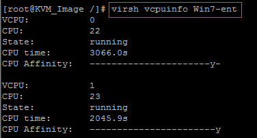

Summary
-
- OpenStack practices SR-IOV computing nodes ------ release time :2018-10-14 05:15
- Openstack operation and maintenance records (4) ------ release time :2020-01-01 19:13
- Openstack operation and maintenance records (3) ------ release time :2018-09-29 20:28
- Openstack operation and maintenance records (2) ------ release time :2018-08-28 14:48
- Openstack operation and maintenance records (1) ------ release time :2018-08-26 18:38
- OpenStack Pike dashboard noVNC cannot be accessed problem ------ release time :2018-04-14 05:18
- Openstack Pike local yum source construction ------ release time :2017-12-28 22:20
- CPU binding ------ release time :2017-07-20 18:30
- Investigation of the cause of resize failure ------ release time :2017-07-04 10:20
- Mount cloud disk ------ release time :2017-06-30 05:16
- Ocata nova evacuate bug ------ release time :2017-06-28 18:24
- compute node ha mainstream open source implementation ------ release time :2017-06-22 09:16
- Deployment and usage of Collectd and InfluxDB ------ release time :2017-06-15 06:47
- Live Migration on Local Storage ------ release time :2017-06-14 15:25
- Add fast evacuation function to VM HA procedure ------ release time :2017-06-10 03:27
- Windows virtual machine activation failure problem ------ release time :2017-05-04 22:21
-
- Huawei and telecom operators ------ release time :2017-03-10 21:25
-
- Internal structure of .git directory ------ release time :2023-01-18 18:37
- Some Skills of using xshell tools ------ release time :2016-07-05 22:57
- gerrit install ------ release time :2017-06-28 15:51
release time :2018-10-14 05:15
SR-IOV function introduction
SR-IOV enables a single functional unit (for example, an Ethernet port) to look like multiple independent physical devices, that is, a physical device supporting the SR-IOV function can be configured as multiple functional units.
SR-IOV has two functions:
Physical Functions (PF): This is a complete PCIe device with SR-IOV capability. PFs can be discovered, managed and configured like normal PCI devices. Virtual Functions (VF): Simple PCIe functions that can only handle I/O. Each VF is separated from the PF. Each physical hardware has a limit on the number of VFs. A PF can be virtualized into multiple VFs for allocation to multiple virtual machines. Hypervisor can assign one or more VFs to a virtual machine. At a certain time, a VF can only be assigned to a virtual machine. A virtual machine can have multiple VFs. From the perspective of the operating system of the virtual machine, a VF network card looks the same as a normal network card. The SR-IOV driver is implemented in the kernel. Example of NIC SR-IOV:

Virtualize the PF of the sriov computing node into multiple VFs
The sriov computing node selects optical port 1 (eg enp5s0f1) as the sriov network card
-
On the computing node, set the BIOS to support VT-d for Intel, which can be verified by cat /proc/cpuinfo | grep vmx
-
Configure the /etc/default/grub file of the computing node, add intel_iommu=on to GRUB_CMDLINE_LINUX to activate the VT-d function, and restart the physical machine (intel 82599 series network card is used in this environment)
$ cat /etc/default/grub GRUB_TIMEOUT=5 GRUB_DISTRIBUTOR="$(sed 's, release .*$,,g' /etc/system-release)" GRUB_DEFAULT=saved GRUB_DISABLE_SUBMENU=true GRUB_TERMINAL_OUTPUT="console" GRUB_CMDLINE_LINUX="crashkernel=auto rd.lvm.lv=bclinux/root rd.lvm.lv=bclinux/swap intel_iommu=on rhgb quiet" GRUB_DISABLE_RECOVERY="true"
$ grub2-mkconfig --output=/boot/grub2/grub.cfg $ reboot
-
In this environment, the 82599 network card supports a maximum of 64 vfs. It is planned to virtualize 16 vfs on each sriov computing node for use. The command is as follows:
echo '16' > /sys/class/net/enp5s0f1/device/sriov_numvfs
lspci | grep Ethernet
05:00.0 Ethernet controller [0200]: Intel Corporation 82599ES 10-Gigabit SFI/SFP+ Network Connection [8086:10fb] (rev 01) 05:00.1 Ethernet controller [0200]: Intel Corporation 82599ES 10-Gigabit SFI/SFP+ Network Connection [8086:10fb] (rev 01) 05:10.1 Ethernet controller [0200]: Intel Corporation 82599 Ethernet Controller Virtual Function [8086:10ed] (rev 01) 05:10.3 Ethernet controller [0200]: Intel Corporation 82599 Ethernet Controller Virtual Function [8086:10ed] (rev 01) 05:10.5 Ethernet controller [0200]: Intel Corporation 82599 Ethernet Controller Virtual Function [8086:10ed] (rev 01) 05:10.7 Ethernet controller [0200]: Intel Corporation 82599 Ethernet Controller Virtual Function [8086:10ed] (rev 01) 05:11.1 Ethernet controller [0200]: Intel Corporation 82599 Ethernet Controller Virtual Function [8086:10ed] (rev 01) 05:11.3 Ethernet controller [0200]: Intel Corporation 82599 Ethernet Controller Virtual Function [8086:10ed] (rev 01) 05:11.5 Ethernet controller [0200]: Intel Corporation 82599 Ethernet Controller Virtual Function [8086:10ed] (rev 01) 05:11.7 Ethernet controller [0200]: Intel Corporation 82599 Ethernet Controller Virtual Function [8086:10ed] (rev 01) 05:12.1 Ethernet controller [0200]: Intel Corporation 82599 Ethernet Controller Virtual Function [8086:10ed] (rev 01) 05:12.3 Ethernet controller [0200]: Intel Corporation 82599 Ethernet Controller Virtual Function [8086:10ed] (rev 01) 05:12.5 Ethernet controller [0200]: Intel Corporation 82599 Ethernet Controller Virtual Function [8086:10ed] (rev 01) 05:12.7 Ethernet controller [0200]: Intel Corporation 82599 Ethernet Controller Virtual Function [8086:10ed] (rev 01) 05:13.1 Ethernet controller [0200]: Intel Corporation 82599 Ethernet Controller Virtual Function [8086:10ed] (rev 01) 05:13.3 Ethernet controller [0200]: Intel Corporation 82599 Ethernet Controller Virtual Function [8086:10ed] (rev 01) 05:13.5 Ethernet controller [0200]: Intel Corporation 82599 Ethernet Controller Virtual Function [8086:10ed] (rev 01) 05:13.7 Ethernet controller [0200]: Intel Corporation 82599 Ethernet Controller Virtual Function [8086:10ed] (rev 01) 08:00.0 Ethernet controller [0200]: Intel Corporation I350 Gigabit Network Connection [8086:1521] (rev 01) 08:00.1 Ethernet controller [0200]: Intel Corporation I350 Gigabit Network Connection [8086:1521] (rev 01)
ip link show enp5s0f1
5: enp5s0f1: <BROADCAST,MULTICAST,UP,LOWER_UP> mtu 1500 qdisc mq state UP mode DEFAULT qlen 1000 link/ether 6c:92:bf:04:66:01 brd ff:ff:ff:ff:ff:ff vf 0 MAC 00:00:00:00:00:00, spoof checking on, link-state auto, trust off, query_rss off vf 1 MAC 00:00:00:00:00:00, spoof checking on, link-state auto, trust off, query_rss off vf 2 MAC 00:00:00:00:00:00, spoof checking on, link-state auto, trust off, query_rss off vf 3 MAC 00:00:00:00:00:00, spoof checking on, link-state auto, trust off, query_rss off vf 4 MAC 00:00:00:00:00:00, spoof checking on, link-state auto, trust off, query_rss off vf 5 MAC 00:00:00:00:00:00, spoof checking on, link-state auto, trust off, query_rss off vf 6 MAC 00:00:00:00:00:00, spoof checking on, link-state auto, trust off, query_rss off vf 7 MAC 00:00:00:00:00:00, spoof checking on, link-state auto, trust off, query_rss off vf 8 MAC 00:00:00:00:00:00, spoof checking on, link-state auto, trust off, query_rss off vf 9 MAC 00:00:00:00:00:00, spoof checking on, link-state auto, trust off, query_rss off vf 10 MAC 00:00:00:00:00:00, spoof checking on, link-state auto, trust off, query_rss off vf 11 MAC 00:00:00:00:00:00, spoof checking on, link-state auto, trust off, query_rss off vf 12 MAC 00:00:00:00:00:00, spoof checking on, link-state auto, trust off, query_rss off vf 13 MAC 00:00:00:00:00:00, spoof checking on, link-state auto, trust off, query_rss off vf 14 MAC 00:00:00:00:00:00, spoof checking on, link-state auto, trust off, query_rss off vf 15 MAC 00:00:00:00:00:00, spoof checking on, link-state auto, trust off, query_rss off
-
To ensure that vfs still exists after restarting, you need to write the command to set the number of vfs into /etc/rc.local, the command is as follows
echo "echo '16' > /sys/class/net/enp5s0f1/device/sriov_numvfs" >> /etc/rc.local
chmod +x /etc/rc.local /etc/rc.d/rc.local
-
Modify the nova.conf file of the control node to allow nova-schedule to support pci passthrough filtering
vim /etc/nova/nova.conf
enable_filters = RetryFilter, AvailabilityZoneFilter, RamFilter, ComputeFilter, ComputeCapabilitiesFilter, ImagePropertiesFilter, ServerGroupAntiAffinityFilter, ServerGroupAffinityFilter, PciPassthroughFilter available_filters = nova.scheduler.filters.all_filters
systemctl restart openstack-nova-scheduler
Configure SRIOV virtual machine computing nodes
- Install neutron-sriov-agent
# yum install openstack-neutron-sriov-nic-agent openstack-neutron
- Configure neutron.conf
to copy the control node neutron.conf configuration and modify the corresponding parameters, mainly to modify the local management network ip parameters
- Configure sriov_agent.ini
# vim /etc/neutron/plugins/ml2/sriov_agent.ini
[securitygroup]
firewall_driver = neutron.agent.firewall.NoopFirewallDriver
[sriov_nic]
physical_device_mappings = default: enp5s0f1
exclude_devices =
- Start the neutron-sriov-agent service
# systemctl enable neutron-sriov-nic-agent
# systemctl start neutron-sriov-nic-agent
- Modify the nova.conf file of the node and restart nova-compute
# vim /etc/nova/nova.conf
passthrough_whitelist = {"devname": "enp5s0f1", "physical_network": "physnet1"}
# systemctl restart openstack-nova-compute
If you need to configure multiple SRIOV network cards
[root@controller ~]# vim /etc/nova/nova.conf
[pci]
passthrough_whitelist = {"devname": "enp129s0f0", "physical_network": "physnet1"}
passthrough_whitelist = {"devname": "enp130s0f0", "physical_network": "physnet1"}
[root@SRIOV03 ~]# vim /etc/neutron/plugins/ml2/sriov_agent.ini
[sriov_nic]
physical_device_mappings = physnet1:enp129s0f0,physnet1:enp130s0f0
Test srivo non-affinity functions
That is: set the two vnics of the vm in the same non-affinity group, and the two vnics of the generated sriov virtual machine will be distributed on two different physical SRIOV network cards
[root@controller ~]# openstack port create --vnic-type direct --binding-profile anti_affinity_group=gwgh729 --network 40fa3655-1dc6-4fa1-8a21-507ae2a92cc5 sriov-port-1
+-----------------------+-----------------------------------------------------------------------------+
| Field | Value |
+-----------------------+-----------------------------------------------------------------------------+
| admin_state_up | UP |
| allowed_address_pairs | |
| binding_host_id | |
| binding_profile | anti_affinity_group='gwgh729' |
| binding_vif_details | |
| binding_vif_type | unbound |
| binding_vnic_type | direct |
| created_at | 2018-10-11T07:11:06Z |
| data_plane_status | None |
| description | |
| device_id | |
| device_owner | |
| dns_assignment | None |
| dns_name | None |
| extra_dhcp_opts | |
| fixed_ips | ip_address='192.168.5.48', subnet_id='8e026845-10d0-486b-9e34-45f2f2f01ada' |
| id | cb96ed5a-9bbc-46f7-9a44-fdc45e11b25b |
| ip_address | None |
| mac_address | fa:16:3e:c8:f7:9f |
| name | sriov-port-1 |
| network_id | 40fa3655-1dc6-4fa1-8a21-507ae2a92cc5 |
| option_name | None |
| option_value | None |
| port_security_enabled | True |
| project_id | 39db8ee1aced4109aa7ea45c9b45aa97 |
| qos_policy_id | None |
| revision_number | 3 |
| security_group_ids | 46a06d50-4ed7-495f-9458-eab6843495a8 |
| status | DOWN |
| subnet_id | None |
| tags | |
| trunk_details | None |
| updated_at | 2018-10-11T07:11:07Z |
+-----------------------+-----------------------------------------------------------------------------+
[root@controller ~]# openstack port create --vnic-type direct --binding-profile anti_affinity_group=gwgh729 --network 40fa3655-1dc6-4fa1-8a21-507ae2a92cc5 sriov-port-2
+-----------------------+-----------------------------------------------------------------------------+
| Field | Value |
+-----------------------+-----------------------------------------------------------------------------+
| admin_state_up | UP |
| allowed_address_pairs | |
| binding_host_id | |
| binding_profile | anti_affinity_group='gwgh729' |
| binding_vif_details | |
| binding_vif_type | unbound |
| binding_vnic_type | direct |
| created_at | 2018-10-11T07:11:17Z |
| data_plane_status | None |
| description | |
| device_id | |
| device_owner | |
| dns_assignment | None |
| dns_name | None |
| extra_dhcp_opts | |
| fixed_ips | ip_address='192.168.5.60', subnet_id='8e026845-10d0-486b-9e34-45f2f2f01ada' |
| id | d8ae3337-b98a-4523-9665-ed7773c6da90 |
| ip_address | None |
| mac_address | fa:16:3e:23:0e:45 |
| name | sriov-port-2 |
| network_id | 40fa3655-1dc6-4fa1-8a21-507ae2a92cc5 |
| option_name | None |
| option_value | None |
| port_security_enabled | True |
| project_id | 39db8ee1aced4109aa7ea45c9b45aa97 |
| qos_policy_id | None |
| revision_number | 3 |
| security_group_ids | 46a06d50-4ed7-495f-9458-eab6843495a8 |
| status | DOWN |
| subnet_id | None |
| tags | |
| trunk_details | None |
| updated_at | 2018-10-11T07:11:17Z |
+-----------------------+-----------------------------------------------------------------------------+
[root@controller ~]# nova boot han-sriov-antiaffinity --image 4ce53c0e-b3f5-4463-bdcd-20ee0f74fec6 --flavor 071b6288-8087-4d2e-959a-0b3bbb7fc565 --nic port-id=cb96ed5a-9bbc-46f7-9a44-fdc45e11b25b --nic port-id=d8ae3337-b98a-4523-9665-ed7773c6da90 --availability-zone sriov:SRIOV03
+--------------------------------------+------------------------------------------------------+
| Property | Value |
+--------------------------------------+------------------------------------------------------+
| OS-DCF:diskConfig | MANUAL |
| OS-EXT-AZ:availability_zone | sriov |
| OS-EXT-SRV-ATTR:host | - |
| OS-EXT-SRV-ATTR:hostname | han-sriov-antiaffinity |
| OS-EXT-SRV-ATTR:hypervisor_hostname | - |
| OS-EXT-SRV-ATTR:instance_name | |
| OS-EXT-SRV-ATTR:kernel_id | |
| OS-EXT-SRV-ATTR:launch_index | 0 |
| OS-EXT-SRV-ATTR:ramdisk_id | |
| OS-EXT-SRV-ATTR:reservation_id | r-3vjlmls4 |
| OS-EXT-SRV-ATTR:root_device_name | - |
| OS-EXT-SRV-ATTR:user_data | - |
| OS-EXT-STS:power_state | 0 |
| OS-EXT-STS:task_state | scheduling |
| OS-EXT-STS:vm_state | building |
| OS-SRV-USG:launched_at | - |
| OS-SRV-USG:terminated_at | - |
| accessIPv4 | |
| accessIPv6 | |
| adminPass | Z255abC53sLN |
| config_drive | |
| created | 2018-10-11T07:12:43Z |
| description | - |
| flavor:disk | 10 |
| flavor:ephemeral | 0 |
| flavor:extra_specs | {} |
| flavor:original_name | 2u4g10g |
| flavor:ram | 4096 |
| flavor:swap | 0 |
| flavor:vcpus | 2 |
| hostId | |
| host_status | |
| id | ea80e14b-2b9a-4a31-ad27-94366fa600bf |
| image | centos7-10-08 (4ce53c0e-b3f5-4463-bdcd-20ee0f74fec6) |
| key_name | - |
| locked | False |
| metadata | {} |
| name | han-sriov-antiaffinity |
| os-extended-volumes:volumes_attached | [] |
| progress | 0 |
| security_groups | default |
| status | BUILD |
| tags | [] |
| tenant_id | 39db8ee1aced4109aa7ea45c9b45aa97 |
| updated | 2018-10-11T07:12:43Z |
| user_id | f6b12716402343e6beacdaa265e4e6c5 |
+--------------------------------------+------------------------------------------------------+
[root@controller ~]# nova show han-sriov-antiaffinity
+--------------------------------------+----------------------------------------------------------+
| Property | Value |
+--------------------------------------+----------------------------------------------------------+
| OS-DCF:diskConfig | MANUAL |
| OS-EXT-AZ:availability_zone | sriov |
| OS-EXT-SRV-ATTR:host | SRIOV03 |
| OS-EXT-SRV-ATTR:hostname | han-sriov-antiaffinity |
| OS-EXT-SRV-ATTR:hypervisor_hostname | SRIOV03 |
| OS-EXT-SRV-ATTR:instance_name | instance-00000cfd |
| OS-EXT-SRV-ATTR:kernel_id | |
| OS-EXT-SRV-ATTR:launch_index | 0 |
| OS-EXT-SRV-ATTR:ramdisk_id | |
| OS-EXT-SRV-ATTR:reservation_id | r-3vjlmls4 |
| OS-EXT-SRV-ATTR:root_device_name | /dev/vda |
| OS-EXT-SRV-ATTR:user_data | - |
| OS-EXT-STS:power_state | 1 |
| OS-EXT-STS:task_state | - |
| OS-EXT-STS:vm_state | active |
| OS-SRV-USG:launched_at | 2018-10-11T07:14:49.000000 |
| OS-SRV-USG:terminated_at | - |
| accessIPv4 | |
| accessIPv6 | |
| config_drive | |
| created | 2018-10-11T07:12:42Z |
| description | - |
| flavor:disk | 10 |
| flavor:ephemeral | 0 |
| flavor:extra_specs | {} |
| flavor:original_name | 2u4g10g |
| flavor:ram | 4096 |
| flavor:swap | 0 |
| flavor:vcpus | 2 |
| hostId | c9ae967a850ab4bf64f157ac3c05ef0adb86743d3a1f86115cda7f04 |
| host_status | UP |
| id | ea80e14b-2b9a-4a31-ad27-94366fa600bf |
| image | centos7-10-08 (4ce53c0e-b3f5-4463-bdcd-20ee0f74fec6) |
| key_name | - |
| locked | False |
| metadata | {} |
| name | han-sriov-antiaffinity |
| os-extended-volumes:volumes_attached | [] |
| progress | 0 |
| security_groups | default |
| status | ACTIVE |
| tags | [] |
| tenant_id | 39db8ee1aced4109aa7ea45c9b45aa97 |
| updated | 2018-10-11T07:13:37Z |
| user_id | f6b12716402343e6beacdaa265e4e6c5 |
| vlan811-common network | 192.168.5.48, 192.168.5.60 |
+--------------------------------------+----------------------------------------------------------+
[root@SRIOV03 ~]# ip link show enp130s0f0|grep fa:16:3e:c8:f7:9f
[root@SRIOV03 ~]# ip link show enp129s0f0|grep fa:16:3e:c8:f7:9f
vf 0 MAC fa:16:3e:c8:f7:9f, vlan 811, spoof checking on, link-state auto, trust off, query_rss off
[root@SRIOV03 ~]# ip link show enp130s0f0|grep fa:16:3e:23:0e:45
vf 0 MAC fa:16:3e:23:0e:45, vlan 811, spoof checking on, link-state auto, trust off, query_rss off
[root@SRIOV03 ~]# ip link show enp129s0f0|grep fa:16:3e:23:0e:45
[root@SRIOV03 ~]#
The vnic with mac address fa:16:3e:c8:f7:9f falls on enp129s0f0, and the vnic with mac address fa:16:3e:23:0e:45 falls on enp130s0f0
release time :2020-01-01 19:13
Automatically clear mirror cache
Create a virtual machine on a computing node. If you create a secondary virtual machine on this node for the first time, the image file will be copied to the computing node directory /var/lib/nova/instances/_base. In the long run, this directory will take up relatively large disk space and needs to be cleaned up.
The cache directory can be automatically cleaned up by modifying the nova configuration file.
Compare the difference before and after setting remove_unused_base_images=True, that is, redundant images will not be automatically cleared before setting, but after setting and restarting the nova-compute service, redundant image files will be automatically cleared, and cloud hosts can be generated normally.
remove_unused_base_images=True before setting:

be32a717ae7ea3aa039131689864a325fd634c92 is an unused image file.
After waiting for a while, the file did not change.
remove_unused_base_images=True After setting and restarting the nova-compute service:

image_cache_manager_interval=5, remove_unused_original_minimum_age_seconds=3 are settings to shorten the test time. The actual production environment uses the default value of 40 minutes and the set value of 24 7 hours. Now it is changed to 5 seconds and 3 seconds. That is to say, without this setting to shorten the test time, the production environment is to check the image cache in 40 minutes, and the useless base image will be deleted after 247 hours.

automatically deleted soon. Check /var/log/nova/nova-compute.log, and also find the log that automatically deletes redundant mirrors:
2017-02-07 16:01:51.678 14200 INFO nova.virt.libvirt.imagecache [req-ee1a7ad5-a021-4aad-b653-7db14191536e - - - - -] Active base files: /var/lib/nova/instances/_base/0522bc602608d45758d815b01a6899ff3e1e3e27 /var/lib/nova/instances/_base/dc1ed4ad70a573f2acea085b068b61f3cb99e195 /var/lib/nova/instances/_base/be32a717ae7ea3aa039131689864a325fd634c1c
2017-02-07 16:01:51.678 14200 INFO nova.virt.libvirt.imagecache [req-ee1a7ad5-a021-4aad-b653-7db14191536e - - - - -] Removable base files: /var/lib/nova/instances/_base/be32a717ae7ea3aa039131689864a325fd634c92
2017-02-07 16:01:51.679 14200 INFO nova.virt.libvirt.imagecache [req-ee1a7ad5-a021-4aad-b653-7db14191536e - - - - -] Removing base or swap file: /var/lib/nova/instances/_base/be32a717ae7ea3aa039131689864a325fd634c92
Dashboard neutron reports error Invalid service catalog service: network
Phenomenon: The neutron service is good, and the command line creates a network to view the network normally, but the dashboard cannot view the network-related pages. The dashboard neutron reports an error Invalid service catalog service: network
Solution: It should be that Keystone is not properly configured. As a result, no relevant Catalog information was found.
[root@EXTENV-194-18-2-11 ~]# openstack catalog list
+-----------+-----------+-----------------------------------------------+
| Name | Type | Endpoints |
+-----------+-----------+-----------------------------------------------+
| placement | placement | RegionOne |
| | | internal: http://nova-ha-vip:8778 |
| | | RegionOne |
| | | admin: http://nova-ha-vip:8778 |
| | | RegionOne |
| | | public: http://nova-ha-vip:8778 |
| | | |
| keystone | identity | RegionOne |
| | | public: http://keystone-ha-vip:5000/v3/ |
| | | RegionOne |
| | | internal: http://keystone-ha-vip:35357/v3/ |
| | | RegionOne |
| | | admin: http://keystone-ha-vip:35357/v3/ |
| | | |
| glance | image | RegionOne |
| | | admin: http://glance-ha-vip:9292 |
| | | RegionOne |
| | | internal: http://glance-ha-vip:9292 |
| | | RegionOne |
| | | public: http://glance-ha-vip:9292 |
| | | |
| nova | compute | RegionOne |
| | | public: http://nova-ha-vip:8774/v2.1 |
| | | RegionOne |
| | | admin: http://nova-ha-vip:8774/v2.1 |
| | | RegionOne |
| | | internal: http://nova-ha-vip:8774/v2.1 |
| | | |
| neutron | network | |
| neutron | network | RegionOne |
| | | public: http://neutron-server-ha-vip:9696 |
| | | RegionOne |
| | | admin: http://neutron-server-ha-vip:9696 |
| | | RegionOne |
| | | internal: http://neutron-server-ha-vip:9696 |
| | | |
+-----------+-----------+-----------------------------------------------+
So just delete the first neutron data without url, but found that there is only openstack catalog list, no openstack catalog delete command. Later, I checked the keystone configuration file keystone.conf and found the following configuration.
from the configuration file. The catalog is the data read from mysql, and then the dirty data is found from the service table in the keystone library of mysql, and then I know to use openstack service delete to delete the 'dirty data', and the problem is solved.
MariaDB [keystone]> select * from service;
+----------------------------------+-----------+---------+-------------------------------------------------------------+
| id | type | enabled | extra |
+----------------------------------+-----------+---------+-------------------------------------------------------------+
| 520f6bf8564240be9678c4ef25305cad | placement | 1 | {"description": "OpenStack Placement", "name": "placement"} |
| 960580852a594c078e68fe3683e35db5 | identity | 1 | {"name": "keystone"} |
| 98ed18fcd8104732919bb5869a5a6dc2 | image | 1 | {"description": "OpenStack Image", "name": "glance"} |
| abef1b9469d94d3ab9f27c8ed72a5a48 | compute | 1 | {"description": "OpenStack Compute", "name": "nova"} |
| e37085e8fb2a49c0921c2d24f5e4f9b5 | network | 1 | {"description": "OpenStack Networking", "name": "neutron"} |
| f1b661407ce04f79bc24605fa59bb74c | network | 1 | {"description": "OpenStack Networking", "name": "neutron"} |
+----------------------------------+-----------+---------+-------------------------------------------------------------+
6 rows in set (0.00 sec)
MariaDB [keystone]> select * from endpoint;
+----------------------------------+--------------------+-----------+----------------------------------+-----------------------------------+-------+---------+-----------+
| id | legacy_endpoint_id | interface | service_id | url | extra | enabled | region_id |
+----------------------------------+--------------------+-----------+----------------------------------+-----------------------------------+-------+---------+-----------+
| 142cb619cd2242828b0c9394d5baaea1 | NULL | public | f1b661407ce04f79bc24605fa59bb74c | http://neutron-server-ha-vip:9696 | {} | 1 | RegionOne |
| 2252d3ef840b4c5aa1184ebe8d6094f1 | NULL | public | abef1b9469d94d3ab9f27c8ed72a5a48 | http://nova-ha-vip:8774/v2.1 | {} | 1 | RegionOne |
| 476654c6e7dd4d22b290de451e3afda0 | NULL | admin | abef1b9469d94d3ab9f27c8ed72a5a48 | http://nova-ha-vip:8774/v2.1 | {} | 1 | RegionOne |
| 562a5d5443af4dfab6760204d0adf3bf | NULL | internal | 520f6bf8564240be9678c4ef25305cad | http://nova-ha-vip:8778 | {} | 1 | RegionOne |
| 58bd5f09811a4ebcb62a4b51fb7ae444 | NULL | admin | f1b661407ce04f79bc24605fa59bb74c | http://neutron-server-ha-vip:9696 | {} | 1 | RegionOne |
| 600811f8ccaf42669d4d83b897af3933 | NULL | admin | 520f6bf8564240be9678c4ef25305cad | http://nova-ha-vip:8778 | {} | 1 | RegionOne |
| 80683f619efb41dcbb6796ea04f16159 | NULL | internal | f1b661407ce04f79bc24605fa59bb74c | http://neutron-server-ha-vip:9696 | {} | 1 | RegionOne |
| 8e0a684607294a729f87d7d8b1a639ca | NULL | public | 520f6bf8564240be9678c4ef25305cad | http://nova-ha-vip:8778 | {} | 1 | RegionOne |
| 9ef0f18d891e45608ffc41985dc6afa6 | NULL | public | 960580852a594c078e68fe3683e35db5 | http://keystone-ha-vip:5000/v3/ | {} | 1 | RegionOne |
| a0b10cb04a5b4ca3859aaf2ea4ca2a3b | NULL | admin | 98ed18fcd8104732919bb5869a5a6dc2 | http://glance-ha-vip:9292 | {} | 1 | RegionOne |
| c53979becccc44f1813e9f50a619af7e | NULL | internal | 960580852a594c078e68fe3683e35db5 | http://keystone-ha-vip:35357/v3/ | {} | 1 | RegionOne |
| dadbb8dc218245bbba8c9a34237413ec | NULL | internal | 98ed18fcd8104732919bb5869a5a6dc2 | http://glance-ha-vip:9292 | {} | 1 | RegionOne |
| f4034b8c086a451caed52ac51a761fb0 | NULL | public | 98ed18fcd8104732919bb5869a5a6dc2 | http://glance-ha-vip:9292 | {} | 1 | RegionOne |
| fc150884825544baaf4912f14e76f51a | NULL | internal | abef1b9469d94d3ab9f27c8ed72a5a48 | http://nova-ha-vip:8774/v2.1 | {} | 1 | RegionOne |
| fc7132052063438895674fd7b840db68 | NULL | admin | 960580852a594c078e68fe3683e35db5 | http://keystone-ha-vip:35357/v3/ | {} | 1 | RegionOne |
+----------------------------------+--------------------+-----------+----------------------------------+-----------------------------------+-------+---------+-----------+
15 rows in set (0.00 sec)
[root@EXTENV-194-18-2-11 ~]# openstack service list
+----------------------------------+-----------+-----------+
| ID | Name | Type |
+----------------------------------+-----------+-----------+
| 520f6bf8564240be9678c4ef25305cad | placement | placement |
| 960580852a594c078e68fe3683e35db5 | keystone | identity |
| 98ed18fcd8104732919bb5869a5a6dc2 | glance | image |
| abef1b9469d94d3ab9f27c8ed72a5a48 | nova | compute |
| e37085e8fb2a49c0921c2d24f5e4f9b5 | neutron | network |
| f1b661407ce04f79bc24605fa59bb74c | neutron | network |
+----------------------------------+-----------+-----------+
[root@EXTENV-194-18-2-11 ~]# openstack service delete e37085e8fb2a49c0921c2d24f5e4f9b5
[root@EXTENV-194-18-2-11 ~]# systemctl restart httpd.service memcached.service
release time :2018-09-29 20:28
Executing the glance command reports an http 503 error
HTTPServiceUnavailable: 503 Service Unavailable: No server is available to handle this request. (HTTP 503)
503 Service Unavailable: No server is available to handle this request. (HTTP 503)
My colleague encountered problems when installing Openstack Pike.
By looking at the glance log, I found that rabbitmq was not working. Systemctl status did not work. The previous deployment documents failed, so I started the next work. Now the problem that needs to be solved becomes why rabbitmq not working properly
After reading the log of /var/log/rabbitmq/, there is such an error report
=ERROR REPORT==== 7-Sep-2018::11:09:01 ===
Failed to start Ranch listener {acceptor,{0,0,0,0,0,0,0,0},5672} in ranch_tcp:listen([{port,
5672},
{ip,
{0,
0,
0,
0,
0,
0,
0,
0}},
inet6,
{backlog,
128},
{nodelay,
true},
{linger,
{true,
0}},
{exit_on_close,
false}]) for reason eaddrinuse (address already in use)
Check the usage of port 5672, # netstat -tunpl found that haproxy is using rabbitmq's own cluster management, it is not necessary to use haproxy to open the configuration file of haoroxy, and found that the following content has not been noticed
listen rabbitmq
option tcpka
bind 10.144.85.238:5672
server rabbitmq1 10.144.85.93:5672 check inter 5000 rise 2 fall 3
server rabbitmq2 10.144.85.162:5672 check inter 5000 rise 2 fall 3 backup
server rabbitmq3 10.144.85.163:5672 check inter 5000 rise 2 fall 3 backup
mode tcp
timeout client 48h
timeout server 48h
timeout connect 120s
balance roundrobin
After commenting out, restart the haproxy service, and then execute # netstat -tunpl, no haproxy process is occupying port 5672
Restart the rabbitmq service, still report an error, continue to look at the log, the following error is reported
=WARNING REPORT==== 7-Sep-2018::13:48:17 ===
Error while waiting for Mnesia tables: {timeout_waiting_for_tables,
[rabbit_user,rabbit_user_permission,
rabbit_vhost,rabbit_durable_route,
rabbit_durable_exchange,
rabbit_runtime_parameters,
rabbit_durable_queue]}
The explanation is as follows:
Alternatively, perhaps your mnesia dir (/var/lib/rabbitmq/mnesia/rabbit)
got into a a weird state. Try clearing it.
That is, the distributed database mnesia is abnormal.
Solution: (1) Clear the database files under /var/lib/rabbitmq/mnesia/ (2) Restart the node
Sep 27 16:00:00 controller1 haproxy-systemd-wrapper[22727]: [ALERT] 269/160000 (22729) : Error(s) found in configuration file : /etc/haproxy/haproxy.cfg
Sep 27 16:00:00 controller1 haproxy-systemd-wrapper[22727]: [WARNING] 269/160000 (22729) : parsing [/etc/haproxy/haproxy.cfg:16] : 'option httplog' not usable with proxy 'rabbitmq' (needs 'mode http'). Falling back to 'option tcplog'.
Sep 27 16:00:00 controller1 haproxy-systemd-wrapper[22727]: [WARNING] 269/160000 (22729) : config : 'option forwardfor' ignored for proxy 'rabbitmq' as it requires HTTP mode.
Sep 27 16:00:00 controller1 haproxy-systemd-wrapper[22727]: [WARNING] 269/160000 (22729) : config : 'option forwardfor' ignored for proxy 'rdb_mysql' as it requires HTTP mode.
Sep 27 16:00:00 controller1 haproxy-systemd-wrapper[22727]: [WARNING] 269/160000 (22729) : stats socket will not work as expected in multi-process mode (nbproc > 1), you should force process binding globally using 'stats bind-process' or per socket ...rocess' attribute.
Sep 27 16:00:00 controller1 haproxy-systemd-wrapper[22727]: [ALERT] 269/160000 (22729) : Fatal errors found in configuration.
Change the httplog of haproxy.cfg to tcplog
Sep 27 16:03:19 controller1 haproxy-systemd-wrapper[23196]: [ALERT] 269/160319 (23197) : parsing [/etc/haproxy/haproxy.cfg:18] : unknown keyword 'optionhttp-server-close' in 'defaults' section
Sep 27 16:03:19 controller1 haproxy-systemd-wrapper[23196]: [ALERT] 269/160319 (23197) : Error(s) found in configuration file : /etc/haproxy/haproxy.cfg
Sep 27 16:03:19 controller1 haproxy-systemd-wrapper[23196]: [WARNING] 269/160319 (23197) : config : 'option forwardfor' ignored for proxy 'rabbitmq' as it requires HTTP mode.
Sep 27 16:03:19 controller1 haproxy-systemd-wrapper[23196]: [WARNING] 269/160319 (23197) : config : 'option forwardfor' ignored for proxy 'rdb_mysql' as it requires HTTP mode.
Sep 27 16:03:19 controller1 haproxy-systemd-wrapper[23196]: [WARNING] 269/160319 (23197) : stats socket will not work as expected in multi-process mode (nbproc > 1), you should force process binding globally using 'stats bind-process' or per socket ...rocess' attribute.
One space is missing, change optionhttp-server-close to option http-server-close
Sep 27 16:04:18 controller1 systemd[1]: Starting HAProxy Load Balancer...
Sep 27 16:04:18 controller1 haproxy-systemd-wrapper[23335]: haproxy-systemd-wrapper: executing /usr/sbin/haproxy -f /etc/haproxy/haproxy.cfg -p /run/haproxy.pid -Ds
Sep 27 16:04:18 controller1 haproxy-systemd-wrapper[23335]: [WARNING] 269/160418 (23336) : config : 'option forwardfor' ignored for proxy 'rabbitmq' as it requires HTTP mode.
Sep 27 16:04:18 controller1 haproxy-systemd-wrapper[23335]: [WARNING] 269/160418 (23336) : config : 'option forwardfor' ignored for proxy 'rdb_mysql' as it requires HTTP mode.
Sep 27 16:04:18 controller1 haproxy-systemd-wrapper[23335]: [WARNING] 269/160418 (23336) : stats socket will not work as expected in multi-process mode (nbproc > 1), you should force process binding globally using 'stats bind-process' or per socket ...rocess' attribute.
Sep 27 16:04:18 controller1 haproxy-systemd-wrapper[23335]: [ALERT] 269/160418 (23336) : Starting proxy rabbitmq: cannot bind socket [194.18.2.10:5672]
5672 is the port number of rabbitmq. Rabbitmq has its own cluster management and does not need haproxy. Edit haproxy.conf to watch out for the rabbitmq section
2018-09-28 10:43:13.996 32177 ERROR nova Traceback (most recent call last):
2018-09-28 10:43:13.996 32177 ERROR nova File "/usr/bin/nova-novncproxy", line 10, in <module>
2018-09-28 10:43:13.996 32177 ERROR nova sys.exit(main())
2018-09-28 10:43:13.996 32177 ERROR nova File "/usr/lib/python2.7/site-packages/nova/cmd/novncproxy.py", line 41, in main
2018-09-28 10:43:13.996 32177 ERROR nova port=CONF.vnc.novncproxy_port)
2018-09-28 10:43:13.996 32177 ERROR nova File "/usr/lib/python2.7/site-packages/nova/cmd/baseproxy.py", line 67, in proxy
2018-09-28 10:43:13.996 32177 ERROR nova RequestHandlerClass=websocketproxy.NovaProxyRequestHandler
2018-09-28 10:43:13.996 32177 ERROR nova File "/usr/lib/python2.7/site-packages/websockify/websocket.py", line 973, in start_server
2018-09-28 10:43:13.996 32177 ERROR nova tcp_keepintvl=self.tcp_keepintvl)
2018-09-28 10:43:13.996 32177 ERROR nova File "/usr/lib/python2.7/site-packages/websockify/websocket.py", line 742, in socket
2018-09-28 10:43:13.996 32177 ERROR nova sock.listen(100)
2018-09-28 10:43:13.996 32177 ERROR nova File "/usr/lib64/python2.7/socket.py", line 224, in meth
2018-09-28 10:43:13.996 32177 ERROR nova return getattr(self._sock,name)(*args)
2018-09-28 10:43:13.996 32177 ERROR nova error: [Errno 98] Address already in use
[root@controller1 nova]# netstat -tunpl |grep 6080
tcp 0 0 194.18.2.10:6080 0.0.0.0:* LISTEN 24144/haproxy
nova.conf
[vnc]
novncproxy_host = 194.18.2.11
vncserver_proxyclient_address = 194.18.2.11
vncserver_listen = 194.18.2.11
Change the management vip to the local management ip
2018-09-29 10:41:55.593 17797 ERROR nova File "/usr/lib/python2.7/site-packages/amqp/connection.py", line 473, in on_inbound_method
2018-09-29 10:41:55.593 17797 ERROR nova method_sig, payload, content,
2018-09-29 10:41:55.593 17797 ERROR nova File "/usr/lib/python2.7/site-packages/amqp/abstract_channel.py", line 142, in dispatch_method
2018-09-29 10:41:55.593 17797 ERROR nova listener(*args)
2018-09-29 10:41:55.593 17797 ERROR nova File "/usr/lib/python2.7/site-packages/amqp/connection.py", line 595, in _on_close
2018-09-29 10:41:55.593 17797 ERROR nova (class_id, method_id), ConnectionError)
2018-09-29 10:41:55.593 17797 ERROR nova AccessRefused: (0, 0): (403) ACCESS_REFUSED - Login was refused using authentication mechanism AMQPLAIN. For details see the broker logfile.
The rabbitmq user configured by openstack does not exist or the password is wrong, or the authority is insufficient.
[root@controller1 ~]# rabbitmqctl set_policy ha-all '^(?!amq\.).*' '{"ha-mode": "all"}'
Setting policy "ha-all" for pattern "^(?!amq\\.).*" to "{\"ha-mode\": \"all\"}" with priority "0" ...
[root@controller1 ~]# rabbitmqctl add_user rabbitMQ123 123456
Creating user "rabbitMQ123" ...
[root@controller1 ~]# rabbitmqctl set_permissions rabbitMQ123 ".*" ".*" ".*"
Setting permissions for user "rabbitMQ123" in vhost "/" ...
[root@controller1 ~]#
[root@compute1 neutron]# systemctl status neutron-openvswitch-agent.service
neutron-openvswitch-agent.service - OpenStack Neutron Open vSwitch Agent
Loaded: loaded (/usr/lib/systemd/system/neutron-openvswitch-agent.service; enabled; vendor preset: disabled)
Active: failed (Result: start-limit) since Sat 2018-09-29 16:07:57 CST; 4min 5s ago
Process: 23272 ExecStart=/usr/bin/neutron-openvswitch-agent --config-file /usr/share/neutron/neutron-dist.conf --config-file /etc/neutron/neutron.conf --config-file /etc/neutron/plugins/ml2/openvswitch_agent.ini --config-dir /etc/neutron/conf.d/common --config-dir /etc/neutron/conf.d/neutron-openvswitch-agent --log-file /var/log/neutron/openvswitch-agent.log (code=exited, status=1/FAILURE)
Process: 23266 ExecStartPre=/usr/bin/neutron-enable-bridge-firewall.sh (code=exited, status=0/SUCCESS)
Main PID: 23272 (code=exited, status=1/FAILURE)
utron-openvswitch-agent: sys.exit(main())
Sep 29 16:07:58 compute3 neutron-openvswitch-agent: File "/usr/lib/python2.7/site-packages/neutron/cmd/eventlet/plugins/ovs_neutron_agent.py", line 20, in main
Sep 29 16:07:58 compute3 neutron-openvswitch-agent: agent_main.main()
Sep 29 16:07:58 compute3 neutron-openvswitch-agent: File "/usr/lib/python2.7/site-packages/neutron/plugins/ml2/drivers/openvswitch/agent/main.py", line 42, in main
Sep 29 16:07:58 compute3 neutron-openvswitch-agent: common_config.init(sys.argv[1:])
Sep 29 16:07:58 compute3 neutron-openvswitch-agent: File "/usr/lib/python2.7/site-packages/neutron/common/config.py", line 78, in init
Sep 29 16:07:58 compute3 neutron-openvswitch-agent: **kwargs)
Sep 29 16:07:58 compute3 neutron-openvswitch-agent: File "/usr/lib/python2.7/site-packages/oslo_config/cfg.py", line 2473, in __call__
Sep 29 16:07:58 compute3 neutron-openvswitch-agent: self._namespace._files_permission_denied)
Sep 29 16:07:58 compute3 neutron-openvswitch-agent: oslo_config.cfg.ConfigFilesPermissionDeniedError: Failed to open some config files: /etc/neutron/plugins/ml2/openvswitch_agent.ini
File permission attribution error.
[root@controller1 neutron]# ll /etc/neutron/plugins/ml2/openvswitch_agent.ini
-rw-r----- 1 root neutron 241 Sep 29 15:47 /etc/neutron/plugins/ml2/openvswitch_agent.ini
[root@compute2 ~]# ll /etc/neutron/plugins/ml2/openvswitch_agent.ini
-rw-r----- 1 root root 242 Sep 29 16:07 /etc/neutron/plugins/ml2/openvswitch_agent.ini
2018-09-29 16:27:58.982 18928 ERROR nova.compute.manager [req-6812937f-30f2-4f49-8303-d1425ebb1357 5563b2f9c80a40729c969df2f3ed71ef 1ada390dc6fb4fe790bcf38777822682 - default default] [instance: dc3db2cd-4473-4d13-9ecf-4f602e457525] Instance failed to spawn: TypeError: 'NoneType' object is not iterable
2018-09-29 16:27:58.982 18928 ERROR nova.compute.manager [instance: dc3db2cd-4473-4d13-9ecf-4f602e457525] Traceback (most recent call last):
2018-09-29 16:27:58.982 18928 ERROR nova.compute.manager [instance: dc3db2cd-4473-4d13-9ecf-4f602e457525] File "/usr/lib/python2.7/site-packages/nova/compute/manager.py", line 2192, in _build_resources
2018-09-29 16:27:58.982 18928 ERROR nova.compute.manager [instance: dc3db2cd-4473-4d13-9ecf-4f602e457525] yield resources
2018-09-29 16:27:58.982 18928 ERROR nova.compute.manager [instance: dc3db2cd-4473-4d13-9ecf-4f602e457525] File "/usr/lib/python2.7/site-packages/nova/compute/manager.py", line 2007, in _build_and_run_instance
2018-09-29 16:27:58.982 18928 ERROR nova.compute.manager [instance: dc3db2cd-4473-4d13-9ecf-4f602e457525] block_device_info=block_device_info)
2018-09-29 16:27:58.982 18928 ERROR nova.compute.manager [instance: dc3db2cd-4473-4d13-9ecf-4f602e457525] File "/usr/lib/python2.7/site-packages/nova/virt/libvirt/driver.py", line 2802, in spawn
2018-09-29 16:27:58.982 18928 ERROR nova.compute.manager [instance: dc3db2cd-4473-4d13-9ecf-4f602e457525] block_device_info=block_device_info)
2018-09-29 16:27:58.982 18928 ERROR nova.compute.manager [instance: dc3db2cd-4473-4d13-9ecf-4f602e457525] File "/usr/lib/python2.7/site-packages/nova/virt/libvirt/driver.py", line 3240, in _create_image
2018-09-29 16:27:58.982 18928 ERROR nova.compute.manager [instance: dc3db2cd-4473-4d13-9ecf-4f602e457525] fallback_from_host)
2018-09-29 16:27:58.982 18928 ERROR nova.compute.manager [instance: dc3db2cd-4473-4d13-9ecf-4f602e457525] File "/usr/lib/python2.7/site-packages/nova/virt/libvirt/driver.py", line 3331, in _create_and_inject_local_root
2018-09-29 16:27:58.982 18928 ERROR nova.compute.manager [instance: dc3db2cd-4473-4d13-9ecf-4f602e457525] instance, size, fallback_from_host)
2018-09-29 16:27:58.982 18928 ERROR nova.compute.manager [instance: dc3db2cd-4473-4d13-9ecf-4f602e457525] File "/usr/lib/python2.7/site-packages/nova/virt/libvirt/driver.py", line 6987, in _try_fetch_image_cache
2018-09-29 16:27:58.982 18928 ERROR nova.compute.manager [instance: dc3db2cd-4473-4d13-9ecf-4f602e457525] size=size)
2018-09-29 16:27:58.982 18928 ERROR nova.compute.manager [instance: dc3db2cd-4473-4d13-9ecf-4f602e457525] File "/usr/lib/python2.7/site-packages/nova/virt/libvirt/imagebackend.py", line 241, in cache
2018-09-29 16:27:58.982 18928 ERROR nova.compute.manager [instance: dc3db2cd-4473-4d13-9ecf-4f602e457525] *args, **kwargs)
2018-09-29 16:27:58.982 18928 ERROR nova.compute.manager [instance: dc3db2cd-4473-4d13-9ecf-4f602e457525] File "/usr/lib/python2.7/site-packages/nova/virt/libvirt/imagebackend.py", line 595, in create_image
2018-09-29 16:27:58.982 18928 ERROR nova.compute.manager [instance: dc3db2cd-4473-4d13-9ecf-4f602e457525] prepare_template(target=base, *args, **kwargs)
2018-09-29 16:27:58.982 18928 ERROR nova.compute.manager [instance: dc3db2cd-4473-4d13-9ecf-4f602e457525] File "/usr/lib/python2.7/site-packages/oslo_concurrency/lockutils.py", line 271, in inner
2018-09-29 16:27:58.982 18928 ERROR nova.compute.manager [instance: dc3db2cd-4473-4d13-9ecf-4f602e457525] return f(*args, **kwargs)
2018-09-29 16:27:58.982 18928 ERROR nova.compute.manager [instance: dc3db2cd-4473-4d13-9ecf-4f602e457525] File "/usr/lib/python2.7/site-packages/nova/virt/libvirt/imagebackend.py", line 237, in fetch_func_sync
2018-09-29 16:27:58.982 18928 ERROR nova.compute.manager [instance: dc3db2cd-4473-4d13-9ecf-4f602e457525] fetch_func(target=target, *args, **kwargs)
2018-09-29 16:27:58.982 18928 ERROR nova.compute.manager [instance: dc3db2cd-4473-4d13-9ecf-4f602e457525] File "/usr/lib/python2.7/site-packages/nova/virt/libvirt/utils.py", line 446, in fetch_image
2018-09-29 16:27:58.982 18928 ERROR nova.compute.manager [instance: dc3db2cd-4473-4d13-9ecf-4f602e457525] images.fetch_to_raw(context, image_id, target)
2018-09-29 16:27:58.982 18928 ERROR nova.compute.manager [instance: dc3db2cd-4473-4d13-9ecf-4f602e457525] File "/usr/lib/python2.7/site-packages/nova/virt/images.py", line 144, in fetch_to_raw
2018-09-29 16:27:58.982 18928 ERROR nova.compute.manager [instance: dc3db2cd-4473-4d13-9ecf-4f602e457525] fetch(context, image_href, path_tmp)
2018-09-29 16:27:58.982 18928 ERROR nova.compute.manager [instance: dc3db2cd-4473-4d13-9ecf-4f602e457525] File "/usr/lib/python2.7/site-packages/nova/virt/images.py", line 135, in fetch
2018-09-29 16:27:58.982 18928 ERROR nova.compute.manager [instance: dc3db2cd-4473-4d13-9ecf-4f602e457525] IMAGE_API.download(context, image_href, dest_path=path)
2018-09-29 16:27:58.982 18928 ERROR nova.compute.manager [instance: dc3db2cd-4473-4d13-9ecf-4f602e457525] File "/usr/lib/python2.7/site-packages/nova/image/api.py", line 184, in download
2018-09-29 16:27:58.982 18928 ERROR nova.compute.manager [instance: dc3db2cd-4473-4d13-9ecf-4f602e457525] dst_path=dest_path)
2018-09-29 16:27:58.982 18928 ERROR nova.compute.manager [instance: dc3db2cd-4473-4d13-9ecf-4f602e457525] File "/usr/lib/python2.7/site-packages/nova/image/glance.py", line 366, in download
2018-09-29 16:27:58.982 18928 ERROR nova.compute.manager [instance: dc3db2cd-4473-4d13-9ecf-4f602e457525] {'path': dst_path, 'exception': ex})
2018-09-29 16:27:58.982 18928 ERROR nova.compute.manager [instance: dc3db2cd-4473-4d13-9ecf-4f602e457525] File "/usr/lib/python2.7/site-packages/oslo_utils/excutils.py", line 220, in __exit__
2018-09-29 16:27:58.982 18928 ERROR nova.compute.manager [instance: dc3db2cd-4473-4d13-9ecf-4f602e457525] self.force_reraise()
2018-09-29 16:27:58.982 18928 ERROR nova.compute.manager [instance: dc3db2cd-4473-4d13-9ecf-4f602e457525] File "/usr/lib/python2.7/site-packages/oslo_utils/excutils.py", line 196, in force_reraise
2018-09-29 16:27:58.982 18928 ERROR nova.compute.manager [instance: dc3db2cd-4473-4d13-9ecf-4f602e457525] six.reraise(self.type_, self.value, self.tb)
2018-09-29 16:27:58.982 18928 ERROR nova.compute.manager [instance: dc3db2cd-4473-4d13-9ecf-4f602e457525] File "/usr/lib/python2.7/site-packages/nova/image/glance.py", line 350, in download
2018-09-29 16:27:58.982 18928 ERROR nova.compute.manager [instance: dc3db2cd-4473-4d13-9ecf-4f602e457525] for chunk in image_chunks:
2018-09-29 16:27:58.982 18928 ERROR nova.compute.manager [instance: dc3db2cd-4473-4d13-9ecf-4f602e457525] TypeError: 'NoneType' object is not iterable
glance uses local storage, glance-api is enabled on three nodes, and haproxy is configured. Correspond to the location of haproxy, just comment out the two nodes
listen glance_api
bind 194.18.2.10:9292
balance roundrobin
option httplog
server glance1 194.18.2.11:9292 check inter 2000 rise 2 fall 3
#server glance2 194.18.2.12:9292 check inter 2000 rise 2 fall 3
#server glance3 194.18.2.13:9292 check inter 2000 rise 2 fall 3
2018-09-30 15:38:28.505 17135 ERROR cinder File "/usr/lib/python2.7/site-packages/pymysql/cursors.py", line 322, in _query
2018-09-30 15:38:28.505 17135 ERROR cinder conn.query(q)
2018-09-30 15:38:28.505 17135 ERROR cinder File "/usr/lib/python2.7/site-packages/pymysql/connections.py", line 856, in query
2018-09-30 15:38:28.505 17135 ERROR cinder self._affected_rows = self._read_query_result(unbuffered=unbuffered)
2018-09-30 15:38:28.505 17135 ERROR cinder File "/usr/lib/python2.7/site-packages/pymysql/connections.py", line 1057, in _read_query_result
2018-09-30 15:38:28.505 17135 ERROR cinder result.read()
2018-09-30 15:38:28.505 17135 ERROR cinder File "/usr/lib/python2.7/site-packages/pymysql/connections.py", line 1340, in read
2018-09-30 15:38:28.505 17135 ERROR cinder first_packet = self.connection._read_packet()
2018-09-30 15:38:28.505 17135 ERROR cinder File "/usr/lib/python2.7/site-packages/pymysql/connections.py", line 1014, in _read_packet
2018-09-30 15:38:28.505 17135 ERROR cinder packet.check_error()
2018-09-30 15:38:28.505 17135 ERROR cinder File "/usr/lib/python2.7/site-packages/pymysql/connections.py", line 393, in check_error
2018-09-30 15:38:28.505 17135 ERROR cinder err.raise_mysql_exception(self._data)
2018-09-30 15:38:28.505 17135 ERROR cinder File "/usr/lib/python2.7/site-packages/pymysql/err.py", line 107, in raise_mysql_exception
2018-09-30 15:38:28.505 17135 ERROR cinder raise errorclass(errno, errval)
2018-09-30 15:38:28.505 17135 ERROR cinder ProgrammingError: (pymysql.err.ProgrammingError) (1146, u"Table 'cinder.services' doesn't exist") [SQL: u'SELECT services.created_at AS services_created_at, services.deleted_at AS services_deleted_at, services.deleted AS services_deleted, services.id AS services_id, services.cluster_name AS services_cluster_name, services.host AS services_host, services.`binary` AS services_binary, services.updated_at AS services_updated_at, services.topic AS services_topic, services.report_count AS services_report_count, services.disabled AS services_disabled, services.availability_zone AS services_availability_zone, services.disabled_reason AS services_disabled_reason, services.modified_at AS services_modified_at, services.rpc_current_version AS services_rpc_current_version, services.object_current_version AS services_object_current_version, services.replication_status AS services_replication_status, services.active_backend_id AS services_active_backend_id, services.frozen AS services_frozen \nFROM services \nWHERE services.deleted = false AND services.`binary` = %(binary_1)s'] [parameters: {u'binary_1': 'cinder-scheduler'}]
cinder api, volume, scheduler three log files all report the above error, like cinder service connection database error
First check whether there is any error in the configuration of the database connection information in cinder.conf, and confirm that the configuration is correct.
The port number of the cinder service cannot be found
[root@controller2 opt]# netstat -tunpl |grep 8776
[root@controller2 opt]#
I can't find the table data of cinder even after logging in to the database
MariaDB [(none)]> use cinder;
Database changed
MariaDB [cinder]> show tables;
Empty set (0.01 sec)
MariaDB [cinder]>
After re-executing the following command, it returns to normal. Maybe the command was not executed or the wrong node was executed.
# su -s /bin/sh -c "cinder-manage db sync" cinder
release time :2018-08-28 14:48
Start openvswitch error
[root@SRIOV03 ml2]# systemctl start openvswitch.service
A dependency job for openvswitch.service failed. See 'journalctl -xe' for details.
[root@SRIOV03 ml2]# journalctl -xe
-- Defined-By: systemd
-- Support: http://lists.freedesktop.org/mailman/listinfo/systemd-devel
--
-- Unit ovsdb-server.service has begun starting up.
Aug 28 10:33:00 SRIOV03 runuser[6958]: PAM audit_open() failed: Permission denied
Aug 28 10:33:00 SRIOV03 ovs-ctl[6929]: runuser: System error
Aug 28 10:33:00 SRIOV03 ovs-ctl[6929]: /etc/openvswitch/conf.db does not exist ... (warning).
Aug 28 10:33:00 SRIOV03 runuser[6960]: PAM audit_open() failed: Permission denied
Aug 28 10:33:00 SRIOV03 ovs-ctl[6929]: Creating empty database /etc/openvswitch/conf.db runuser: System error
Aug 28 10:33:00 SRIOV03 ovs-ctl[6929]: [FAILED]
Aug 28 10:33:00 SRIOV03 systemd[1]: ovsdb-server.service: control process exited, code=exited status=1
Aug 28 10:33:00 SRIOV03 systemd[1]: Failed to start Open vSwitch Database Unit.
It may be that selinux is active, turn it off
# vim /etc/selinux/config
SELINUX=enforcing -> SELINUX=disabled
# setenforce 0
# getenforce
Permissive
# systemctl restart openvswitch.service
Generate vm and report ethtool ens4f0 error
2018-08-28 11:19:51.568 8034 DEBUG oslo_concurrency.processutils [req-cfeb820d-1167-4c32-a336-8fed1120556b - - - - -] u'ethtool ens4f0' failed. Not Retrying. execute /usr/lib/python2.7/site-packages/oslo_concurrency/processutils.py:452
2018-08-28 11:19:51.568 8034 WARNING nova.virt.extrautils [req-cfeb820d-1167-4c32-a336-8fed1120556b - - - - -] When exec ethtool network card, exception occurs: Unexpected error while running command.
/etc/nova/nova.conf
nw_interface_name = ens4f0
Just change it to a data plane network card
Create a vm and report qemu unexpectedly closed the monitor error
| fault | {"message": "internal error: qemu unexpectedly closed the monitor: 2018-08-28T04:08:03.821855Z qemu-kvm: -chardev pty,id=charserial0,logfile=/dev/fdset/2,logappend=on: char device redirected to /dev/pts/3 (label charserial0) |
| | 2018-08-28T04:08:04.024833Z qemu-kvm: -vnc ", "code": 500, "details": " File \"/usr/lib/python2.7/site-packages/nova/compute/manager.py\", line 1856, in _do_build_and_run_instance |
| | filter_properties) |
| | File \"/usr/lib/python2.7/site-packages/nova/compute/manager.py\", line 2086, in _build_and_run_instance |
| | instance_uuid=instance.uuid, reason=six.text_type(e))
# vim /var/log/libvirt/libvirtd.log
2018-08-28 04:29:31.302+0000: 11230: error : virNetSocketReadWire:1808 : End of file while reading data: Input/output error
2018-08-28 04:36:25.462+0000: 11235: info : qemuDomainDefineXMLFlags:7286 : Creating domain 'instance-000007bc'
2018-08-28 04:36:25.779+0000: 11230: error : qemuMonitorIORead:588 : Unable to read from monitor: Connection reset by peer
2018-08-28 04:36:25.780+0000: 11230: error : qemuProcessReportLogError:1862 : internal error: qemu unexpectedly closed the monitor: 2018-08-28T04:36:25.720940Z qemu-kvm: -chardev pty,id=charserial0,logfile=/dev/fdset/2,logappend=on: char device redirected to /dev/pts/2 (label charserial0)
2018-08-28T04:36:25.778613Z qemu-kvm: -vnc 10.144.85.92:0: Failed to start VNC server: Failed to bind socket: Cannot assign requested address
2018-08-28 04:36:26.148+0000: 11239: info : qemuDomainUndefineFlags:7401 : Undefining domain 'instance-000007bc'
Because the vnc ip configuration error in nova.conf
[vnc]
enabled = True
novncproxy_host = 10.144.85.92
vncserver_proxyclient_address = 10.144.85.92
vncserver_listen = 10.144.85.92
novncproxy_base_url = http://10.144.85.238:6080/vnc_auto.html
The vm can be generated on the new node, but the ip cannot be obtained when logging in to the vm
It may be that the switch vlan is not allowed
Create virtual machines concurrently, some fail
The error seen in the log is that rabbitmq cannot connect to the port
It is initially determined that rabbitmq cannot work normally due to excessive pressure on rabbitmq. Take some steps now to improve the situation.
. Change the rabbitmq node 2 and node 3 of the rabbitmq cluster from disc mode to ram mode.
Distribute the rabbitmq pressure to 3 rabbitmq nodes. By looking at the rabbitmq log, it is found that before the modification, the rabbitmq pressure is mainly on node01, and the other two nodes will hardly process message requests.
Turn off the rate mode function of rabbitmq monitoring. The rate mode function monitors the message output rate in the message queue. Closing has no effect on services.
[glance] api_servers=vip:9292 configured before nova-compute, vip is the address of the management network, when creating virtual machines and other concurrency, there will be image downloads occupying the management network channel, causing network sensitive service messages such as rabbitmq to be blocked, and even messages Timeout, therefore, configure its api_servers as the storage address of the control node, and change the mirror service of the control node from monitoring the management network to monitoring the storage network.
After taking the above measures, a test was carried out
- Tested that 100 virtual machines were created concurrently, and none of the virtual machines failed.
- Tested to create 100 volumes concurrently, none of them failed
A control node memory usage is too high alarm
A control node has a high memory usage alarm. It is found that the rabbitmq process is abnormal. The backlog of messages in the message queue causes the memory to increase and cannot be released. Restart the rabbitmq process to solve the problem. To solve the problem, the rabbitmq configuration file needs to be modified to make the backlog The messages are stored on disk rather than in memory.
The resize operation on the cloud host is not successful
Resize a vm, that is, change from a small flavor to a large flavor, without success
Check the nova-compute.log of the node where the cloud host is located
2017-07-03 17:50:08.573 24296 TRACE oslo_messaging.rpc.dispatcher File "/usr/lib/python2.7/site-packages/nova/compute/manager.py", line 6959, in _error_out_instance_on_exception
2017-07-03 17:50:08.573 24296 TRACE oslo_messaging.rpc.dispatcher raise error.inner_exception
2017-07-03 17:50:08.573 24296 TRACE oslo_messaging.rpc.dispatcher ResizeError: Resize error: not able to execute ssh command: Unexpected error while running command.
2017-07-03 17:50:08.573 24296 TRACE oslo_messaging.rpc.dispatcher Command: ssh 172.16.231.26 -p 22 mkdir -p /var/lib/nova/instances/54091e90-55f5-4f4d-8f66-31fbc787584f
2017-07-03 17:50:08.573 24296 TRACE oslo_messaging.rpc.dispatcher Exit code: 255
2017-07-03 17:50:08.573 24296 TRACE oslo_messaging.rpc.dispatcher Stdout: u''
2017-07-03 17:50:08.573 24296 TRACE oslo_messaging.rpc.dispatcher Stderr: u'@@@@@@@@@@@@@@@@@@@@@@@@@@@@@@@@@@@@@@@@@@@@@@@@@@@@@@@@@@@\r\n@ WARNING: REMOTE HOST IDENTIFICATION HAS CHANGED! @\r\n@@@@@@@@@@@@@@@@@@@@@@@@@@@@@@@@@@@@@@@@@@@@@@@@@@@@@@@@@@@\r\nIT IS POSSIBLE THAT SOMEONE IS DOING SOMETHING NASTY!\r\nSomeone could be eavesdropping on you right now (man-in-the-middle attack)!\r\nIt is also possible that a host key has just been changed.\r\nThe fingerprint for the ECDSA key sent by the remote host is\nc8:0b:98:9d:8d:d8:14:89:e6:fe:97:66:22:4e:57:13.\r\nPlease contact your system administrator.\r\nAdd correct host key in /var/lib/nova/.ssh/known_hosts to get rid of this message.\r\nOffending ECDSA key in /var/lib/nova/.ssh/known_hosts:34\r\nPassword authentication is disabled to avoid man-in-the-middle attacks.\r\nKeyboard-interactive authentication is disabled to avoid man-in-the-middle attacks.\r\nPermission denied (publickey,gssapi-keyex,gssapi-with-mic,password).\r\n'
Analyze the reasons
It may be that the host key of the nova user of the computing node has changed
Countermeasures
For all computing nodes, delete /var/lib/nova/.ssh/known_hosts rows related to computing nodes, log in to each other with nova user ssh again, add a host key and ensure that ssh between nova user computing nodes is mutual trust
After the ceilometer is installed, start the service and the status is wrong
[root@NFJD-TESTN-COMPUTE-2 ceilometer-2015.1.5]# systemctl restart openstack-ceilometer-compute.service
[root@NFJD-TESTN-COMPUTE-2 ceilometer-2015.1.5]# systemctl status openstack-ceilometer-compute.service
openstack-ceilometer-compute.service - OpenStack ceilometer compute agent
Loaded: loaded (/usr/lib/systemd/system/openstack-ceilometer-compute.service; enabled; vendor preset: disabled)
Active: failed (Result: exit-code) since Fri 2016-12-23 09:39:11 CST; 2s ago
Process: 8420 ExecStart=/usr/bin/ceilometer-agent-compute --logfile /var/log/ceilometer/compute.log (code=exited, status=1/FAILURE)
Main PID: 8420 (code=exited, status=1/FAILURE)
Dec 23 09:39:11 NFJD-TESTN-COMPUTE-2 ceilometer-agent-compute[8420]: File "/usr/lib/python2.7/site-packages/ceilometer/cmd/polling.py", line 82, in main_compute
Dec 23 09:39:11 NFJD-TESTN-COMPUTE-2 ceilometer-agent-compute[8420]: service.prepare_service()
Dec 23 09:39:11 NFJD-TESTN-COMPUTE-2 ceilometer-agent-compute[8420]: File "/usr/lib/python2.7/site-packages/ceilometer/service.py", line 117, in prepare_service
Dec 23 09:39:11 NFJD-TESTN-COMPUTE-2 ceilometer-agent-compute[8420]: cfg.CONF(argv[1:], project='ceilometer', validate_default_values=True)
Dec 23 09:39:11 NFJD-TESTN-COMPUTE-2 ceilometer-agent-compute[8420]: File "/usr/lib/python2.7/site-packages/oslo_config/cfg.py", line 1860, in __call__
Dec 23 09:39:11 NFJD-TESTN-COMPUTE-2 ceilometer-agent-compute[8420]: self._namespace._files_permission_denied)
Dec 23 09:39:11 NFJD-TESTN-COMPUTE-2 ceilometer-agent-compute[8420]: oslo_config.cfg.ConfigFilesPermissionDeniedError: Failed to open some config files: /etc/ceilometer/ceilometer.conf
Dec 23 09:39:11 NFJD-TESTN-COMPUTE-2 systemd[1]: openstack-ceilometer-compute.service: main process exited, code=exited, status=1/FAILURE
Dec 23 09:39:11 NFJD-TESTN-COMPUTE-2 systemd[1]: Unit openstack-ceilometer-compute.service entered failed state.
Dec 23 09:39:11 NFJD-TESTN-COMPUTE-2 systemd[1]: openstack-ceilometer-compute.service failed.
The conf file has no permission, modify the permission, and the status is ok. There is no permission because the root user scp the configuration file from another available computing node.
[root@NFJD-TESTN-COMPUTE-2 ceilometer-2015.1.5]# chown -R ceilometer:ceilometer /etc/ceilometer
[root@NFJD-TESTN-COMPUTE-2 ceilometer]# systemctl restart openstack-ceilometer-compute.service
[root@NFJD-TESTN-COMPUTE-2 ceilometer]# systemctl status openstack-ceilometer-compute.service
openstack-ceilometer-compute.service - OpenStack ceilometer compute agent
Loaded: loaded (/usr/lib/systemd/system/openstack-ceilometer-compute.service; enabled; vendor preset: disabled)
Active: active (running) since Fri 2016-12-23 09:42:32 CST; 2s ago
Main PID: 9459 (ceilometer-agen)
CGroup: /system.slice/openstack-ceilometer-compute.service
9459 /usr/bin/python /usr/bin/ceilometer-agent-compute --logfile /var/log/ceilometer/compute.log
Dec 23 09:42:32 NFJD-TESTN-COMPUTE-2 systemd[1]: Started OpenStack ceilometer compute agent.
Dec 23 09:42:32 NFJD-TESTN-COMPUTE-2 systemd[1]: Starting OpenStack ceilometer compute agent...
file permission problem, if the configuration file has no configuration file permission after replacement, for example, the file owner who was originally root:nova is replaced by root:root, there will be problems that the service cannot run normally.
The version is too new to cause an error in referencing the package
| fault | {"message": "Build of instance 15d9db88-d0a9-40a8-83e9-9ede3001b112 was re-scheduled: 'module' object has no attribute 'to_utf8'", "code": 500, "details": " File \"/usr/lib/python2.7/site-packages/nova/compute/manager.py\", line 2258, in _do_build_and_run_instance |
2017-05-25 11:30:34.529 32687 TRACE nova.compute.manager [instance: 15d9db88-d0a9-40a8-83e9-9ede3001b112] File "/usr/lib/python2.7/site-packages/nova/utils.py", line 207, in execute
2017-05-25 11:30:34.529 32687 TRACE nova.compute.manager [instance: 15d9db88-d0a9-40a8-83e9-9ede3001b112] return processutils.execute(*cmd, **kwargs)
2017-05-25 11:30:34.529 32687 TRACE nova.compute.manager [instance: 15d9db88-d0a9-40a8-83e9-9ede3001b112] File "/usr/lib64/python2.7/site-packages/oslo_concurrency/processutils.py", line 287, in execute
2017-05-25 11:30:34.529 32687 TRACE nova.compute.manager [instance: 15d9db88-d0a9-40a8-83e9-9ede3001b112] process_input = encodeutils.to_utf8(process_input)
2017-05-25 11:30:34.529 32687 TRACE nova.compute.manager [instance: 15d9db88-d0a9-40a8-83e9-9ede3001b112] AttributeError: 'module' object has no attribute 'to_utf8'
2017-05-25 11:30:34.529 32687 TRACE nova.compute.manager [instance: 15d9db88-d0a9-40a8-83e9-9ede3001b112]
2017-05-25 11:30:34.531 32687 INFO nova.compute.manager [req-22c24896-bcad-4464-a2ab-c019c45ac0e3 2a2a6d4700034e53a198dac0a71aab6e fe3e50d5fc274d29948ff7fd46b214dc - - -] [instance: 15d9db88-d0a9-40a8-83e9-9ede3001b112] Terminating instance
[root@compute-power ~]# vim /usr/lib64/python2.7/site-packages/oslo_concurrency/processutils.py
284 cwd = kwargs.pop('cwd', None)
285 process_input = kwargs.pop('process_input', None)
286 if process_input is not None:
287 process_input = encodeutils.to_utf8(process_input)
[root@compute-power ~]# pip show oslo.concurrency
Name: oslo.concurrency
Version: 3.20.0
Summary: Oslo Concurrency library
Home-page: http://docs.openstack.org/developer/oslo.concurrency
Author: OpenStack
Author-email: openstack-dev@lists.openstack.org
License: UNKNOWN
Location: /usr/lib64/python2.7/site-packages
Requires: pbr, oslo.config, fasteners, oslo.i18n, oslo.utils, six, enum34
[root@bc36-compute-3 oslo_concurrency]# pip show oslo.concurrency
---
Name: oslo.concurrency
Version: 1.8.2
Location: /usr/lib/python2.7/site-packages
Requires:
...
The oslo.concurrency version is too new, so replace it with an old version to solve the problem.
vm error
Error message:
Flavor's disk is too small for requested image. Flavor disk is 16106127360 bytes, image is 21474836480 bytes.].
It means that the disk space of the Flavor (cloud host type) used when creating the vm does not meet the image mirroring requirements!
No valid host was found
2016-11-01 01:28:38.889 51843 WARNING nova.scheduler.utils [req-9eb2b8ec-216b-4073-95bd-1fbb51844faf 52ba7917bb284af7ad6ac313b7e8e948 0cd3632df93d48d6b2c24c67f70e56b8 - - -] Failed to compute_task_build_instances: No valid host was found. There are not enough hosts available.
The main reasons for this problem are:
- It is caused by insufficient memory, insufficient CPU resources, and insufficient hard disk space resources of the computing node; if the type and specification of the cloud host are reduced, it can be found that the creation will be successful.
- The network configuration is incorrect, resulting in the failure to obtain the ip when creating a virtual machine; the network is unreachable or caused by a firewall.
- The openstack-nova-compute service status problem. You can try to restart the nova-related services of the control node and the openstack-nova-compute service of the computing node; check the nova.conf configuration of the control node and computing node for improper configuration.
- There are many reasons for this error report. For details, check the detailed analysis of the logs under /var/log/nova. The focus is nova-compute.log, nova-conductor.log logs
In the logs of nova-scheduler and nova-compute, you can see the error message "ImageNotFound: Image 37aaedc7-6fe6-4fc8-b110-408d166b8e51 could not be found"!
root@controller ~]# /etc/init.d/openstack-glance-api status
openstack-glance-api (pid 2222) is running...
[root@controller ~]# /etc/init.d/openstack-glance-registry status
openstack-glance-registry (pid 2694) is running...
normal status
[root@controller ~]# glance image-list
+--------------------------------------+---------------+-------------+------------------+-------------+--------+
| ID | Name | Disk Format | Container Format | Size | Status |
+--------------------------------------+---------------+-------------+------------------+-------------+--------+
| 37aaedc7-6fe6-4fc8-b110-408d166b8e51 | cirrors | qcow2 | bare | 13200896 | active |
+--------------------------------------+---------------+-------------+------------------+-------------+--------+
It works normally, try to upload a mirror image, and you can also create a vm normally, what is the reason? ?
Because in the operation and maintenance process, the default path of the modified glance is changed from /var/lib/glance/images to /data1/glance, and the images under /var/lib/glance/images are mv to /data1/glance At this time, although the data has passed before, the metadata information of the image is firmly recorded in the image_locations table of glance. Check it out:
mysql> select * from glance.image_locations where image_id='37aaedc7-6fe6-4fc8-b110-408d166b8e51'\G;
*************************** 1. row ***************************
id: 37
image_id: 37aaedc7-6fe6-4fc8-b110-408d166b8e51
value: file:///var/lib/glance/images/37aaedc7-6fe6-4fc8-b110-408d166b8e51 #
created_at: 2015-12-21 06:10:24
updated_at: 2015-12-21 06:10:24
deleted_at: NULL
deleted: 0
meta_data: {}
status: active
1 row in set (0.00 sec)
Real image: The images in the original directory /var/lib/glance/images have been mv'd to /data1/glance, but the original path content is still recorded in the database. Therefore, a problem arises: when nova When trying to start an instance, nova will go to the instance image cache path, and check whether there is the image in /var/lib/nova/_base by default, and if not, send a result api request to glance to request to download the image of the specified image to the local , glance looks for the image according to the value defined by image_locations in the database, which leads to failure! Solution: update the metadata information of glance
mysql> update glance.image_locations set value='file:///data1/glance/37aaedc7-6fe6-4fc8-b110-408d166b8e51' where image_id='37aaedc7-6fe6-4fc8-b110-408d166b8e51'\G;
Query OK, 1 row affected (0.05 sec)
Rows matched: 1 Changed: 1 Warnings: 0
Rebuild the virtual machine, the problem is solved! ! !
Use config drive to set ip, resulting in ip conflict cannot create vm
2017-06-22 11:58:50.819 18449 INFO nova.virt.libvirt.driver [req-4edc310f-8382-43ce-a021-8f04c55d5a51 25380a8cde624ae2998224074d4092ee 1cca7b8b0e0d47cb8d6eda06837960ed - - -] [instance: fb28867f-da0f-48f9-b8f8-33704c845117] Using config drive
...
2017-06-22 11:59:16.686 18449 TRACE nova.compute.manager [instance: fb28867f-da0f-48f9-b8f8-33704c845117] FixedIpAlreadyInUse: Fixed IP 172.16.1.4 is already in use.
2017-06-22 11:59:16.686 18449 TRACE nova.compute.manager [instance: fb28867f-da0f-48f9-b8f8-33704c845117]
2017-06-22 11:59:16.690 18449 INFO nova.compute.manager [req-4edc310f-8382-43ce-a021-8f04c55d5a51 25380a8cde624ae2998224074d4092ee 1cca7b8b0e0d47cb8d6eda06837960ed - - -] [instance: fb28867f-da0f-48f9-b8f8-33704c845117] Terminating instance
2017-06-22 11:59:16.698 18449 INFO nova.virt.libvirt.driver [-] [instance: fb28867f-da0f-48f9-b8f8-33704c845117] During wait destroy, instance disappeared.
2017-06-22 11:59:16.708 18449 INFO nova.virt.libvirt.driver [req-4edc310f-8382-43ce-a021-8f04c55d5a51 25380a8cde624ae2998224074d4092ee 1cca7b8b0e0d47cb8d6eda06837960ed - - -] [instance: fb28867f-da0f-48f9-b8f8-33704c845117] Deleting instance files /var/lib/nova/instances/fb28867f-da0f-48f9-b8f8-33704c845117_del
2017-06-22 11:59:16.708 18449 INFO nova.virt.libvirt.driver [req-4edc310f-8382-43ce-a021-8f04c55d5a51 25380a8cde624ae2998224074d4092ee 1cca7b8b0e0d47cb8d6eda06837960ed - - -] [instance: fb28867f-da0f-48f9-b8f8-33704c845117] Deletion of /var/lib/nova/instances/fb28867f-da0f-48f9-b8f8-33704c845117_del complete
Failed to mount and unmount volume
2017-05-09 14:19:13.957 12778 TRACE oslo_messaging.rpc.dispatcher VolumeDeviceNotFound: Volume device not found at [u'/dev/disk/by-path/ip-10.11.23.132:3260-iscsi-iqn.2000-09.com.fujitsu:storage-system.eternus-dx400:00C0C1P0-lun-78', u'/dev/disk/by-path/ip-10.11.23.133:3260-iscsi-iqn.2000-09.com.fujitsu:storage-system.eternus-dx400:00C1C1P0-lun-78'].
Checked the route of the node that can be mounted normally, and found that the route of the compute-2 node was lost.
10.11.23.128 10.11.231.1 255.255.255.128 UG 0 0 0 enp17s0f0.607
10.11.231.0 0.0.0.0 255.255.255.0 U 0 0 0 enp17s0f0.607
After adding the route, it can be successfully mounted and unmounted
[root@NFJD-TESTN-COMPUTE-2 ~]# ip a|grep 607
[root@NFJD-TESTN-COMPUTE-2 ~]# ip link add link enp17s0f0 name enp17s0f0.607 type vlan id 607
[root@NFJD-TESTN-COMPUTE-2 ~]# ip link set up enp17s0f0.607
[root@NFJD-TESTN-COMPUTE-2 ~]# ifconfig enp17s0f0 0.0.0.0
[root@NFJD-TESTN-COMPUTE-2 ~]# ifconfig enp17s0f0.607 10.11.231.26 netmask 255.255.255.0
[root@NFJD-TESTN-COMPUTE-2 ~]# route add -net 10.11.23.128/25 gw 10.11.231.1 dev enp17s0f0.607
[root@NFJD-TESTN-COMPUTE-2 ~]# ip a|grep 607
27: enp17s0f0.607@enp17s0f0: <BROADCAST,MULTICAST,UP,LOWER_UP> mtu 1600 qdisc noqueue state UP
inet 10.11.231.26/24 brd 10.11.231.255 scope global enp17s0f0.607
Failed when vm mount volume
The nova-compute.log error of the nova compute node is as follows:
2017-05-09 15:18:01.952 10888 ERROR nova.virt.block_device [req-344ed875-4bc4-40bf-95e3-a0ff48df6059 62f52135115f4898bd0d82c1f0cd632b 6c149dcd3cf64171b8dd972dd03bbac0 - - -] [instance: ddcf7976-b282-45ac-a167-9865178ed629] Driver failed to attach volume 88442395-87d9-41f1-b9d8-0df4b941846a at /dev/vdc
2017-05-09 15:18:01.952 10888 TRACE nova.virt.block_device [instance: ddcf7976-b282-45ac-a167-9865178ed629] Traceback (most recent call last):
2017-05-09 15:18:01.952 10888 TRACE nova.virt.block_device [instance: ddcf7976-b282-45ac-a167-9865178ed629] File "/usr/lib/python2.7/site-packages/nova/virt/block_device.py", line 276, in attach
2017-05-09 15:18:01.952 10888 TRACE nova.virt.block_device [instance: ddcf7976-b282-45ac-a167-9865178ed629] device_type=self['device_type'], encryption=encryption)
2017-05-09 15:18:01.952 10888 TRACE nova.virt.block_device [instance: ddcf7976-b282-45ac-a167-9865178ed629] File "/usr/lib/python2.7/site-packages/nova/virt/libvirt/driver.py", line 1210, in attach_volume
2017-05-09 15:18:01.952 10888 TRACE nova.virt.block_device [instance: ddcf7976-b282-45ac-a167-9865178ed629] self._connect_volume(connection_info, disk_info)
2017-05-09 15:18:01.952 10888 TRACE nova.virt.block_device [instance: ddcf7976-b282-45ac-a167-9865178ed629] File "/usr/lib/python2.7/site-packages/nova/virt/libvirt/driver.py", line 1157, in _connect_volume
2017-05-09 15:18:01.952 10888 TRACE nova.virt.block_device [instance: ddcf7976-b282-45ac-a167-9865178ed629] driver.connect_volume(connection_info, disk_info)
2017-05-09 15:18:01.952 10888 TRACE nova.virt.block_device [instance: ddcf7976-b282-45ac-a167-9865178ed629] File "/usr/lib/python2.7/site-packages/oslo_concurrency/lockutils.py", line 445, in inner
2017-05-09 15:18:01.952 10888 TRACE nova.virt.block_device [instance: ddcf7976-b282-45ac-a167-9865178ed629] return f(*args, **kwargs)
2017-05-09 15:18:01.952 10888 TRACE nova.virt.block_device [instance: ddcf7976-b282-45ac-a167-9865178ed629] File "/usr/lib/python2.7/site-packages/nova/virt/libvirt/volume.py", line 505, in connect_volume
2017-05-09 15:18:01.952 10888 TRACE nova.virt.block_device [instance: ddcf7976-b282-45ac-a167-9865178ed629] if self.use_multipath:
2017-05-09 15:18:01.952 10888 TRACE nova.virt.block_device [instance: ddcf7976-b282-45ac-a167-9865178ed629] File "/usr/lib/python2.7/site-packages/nova/virt/libvirt/volume.py", line 505, in connect_volume
2017-05-09 15:18:01.952 10888 TRACE nova.virt.block_device [instance: ddcf7976-b282-45ac-a167-9865178ed629] if self.use_multipath:
2017-05-09 15:18:01.952 10888 TRACE nova.virt.block_device [instance: ddcf7976-b282-45ac-a167-9865178ed629] File "/usr/lib64/python2.7/bdb.py", line 49, in trace_dispatch
2017-05-09 15:18:01.952 10888 TRACE nova.virt.block_device [instance: ddcf7976-b282-45ac-a167-9865178ed629] return self.dispatch_line(frame)
2017-05-09 15:18:01.952 10888 TRACE nova.virt.block_device [instance: ddcf7976-b282-45ac-a167-9865178ed629] File "/usr/lib64/python2.7/bdb.py", line 68, in dispatch_line
2017-05-09 15:18:01.952 10888 TRACE nova.virt.block_device [instance: ddcf7976-b282-45ac-a167-9865178ed629] if self.quitting: raise BdbQuit
2017-05-09 15:18:01.952 10888 TRACE nova.virt.block_device [instance: ddcf7976-b282-45ac-a167-9865178ed629] BdbQuit
2017-05-09 15:18:01.952 10888 TRACE nova.virt.block_device [instance: ddcf7976-b282-45ac-a167-9865178ed629]
Maybe someone added a breakpoint when debugging the code, and forgot to delete the breakpoint to find it in the code. Sure enough, delete the breakpoint, restart the service, and the test can mount the volume
A host doesn't support passthrough error occurs when creating a vm
| fault | {"message": "unsupported configuration: host doesn't support passthrough of host PCI devices", "code": 500, "details": " File \"/usr/lib/python2.7/site-packages/nova/compute/manager.py\", line 1856, in _do_build_and_run_instance |
| | filter_properties)
This error may be caused by the parent VT-d (or IOMMU) not being enabled. Make sure the "intel_iommu=on" boot parameter has been enabled as described above.
Found that the /etc/default/grub file has been modified
Configure the /etc/default/grub file of the computing node, add intel_iommu=on to GRUB_CMDLINE_LINUX to activate the VT-d function, and restart the physical machine
$ cat /etc/default/grub
GRUB_TIMEOUT=5
GRUB_DISTRIBUTOR="$(sed 's, release .*$,,g' /etc/system-release)"
GRUB_DEFAULT=saved
GRUB_DISABLE_SUBMENU=true
GRUB_TERMINAL_OUTPUT="console"
GRUB_CMDLINE_LINUX="crashkernel=auto rd.lvm.lv=bclinux/root rd.lvm.lv=bclinux/swap intel_iommu=on rhgb quiet"
GRUB_DISABLE_RECOVERY="true"
But there is no restart, no restart will not take effect
After restarting, the sriov virtual machine can be generated normally
For intel cpu and amd cpu, the grub configuration is different, please refer to the article for specific configuration: http://pve.proxmox.com/wiki/Pci_passthrough
update-grub
After editing the grub file, you need to update
grub2-mkconfig # fedora arch centos
update-grub # ubuntu debian
Restart the computer for it to take effect
# cat /proc/cmdline
release time :2018-08-26 18:38
Troubleshooting process
- First determine the resource ID of the fault, and determine the component where the fault occurred
- Check the log of the corresponding component, search according to the fault resource ID, and find the corresponding ERROR log
- If the ERROR log points the problem to other components, then according to the resource ID, time, req-id and other information in the ERROR log, other components continue to search for the problem until the root cause of the problem is found.
- If no ERROR is found in the log, it may be that the network is not connected, causing the request to fail to reach the API. At this time, you need to check the connectivity with the API (if you use VIP, you need to check the connectivity with the VIP and the connectivity of the real IP separately. ).
- If the corresponding request can be found in the API, but the conductor/scheduler/compute does not find the corresponding log, it may be that the MQ is faulty.
- If the component has not refreshed any logs for a long time, the component process may hang or be in a dead state. You can try to restart the service, or open Debug first and then restart the service.
create vm error
[root@EXTENV-194-18-2-16 nova]# cat nova-compute.log | grep 620cd801-8849-481a-80e0-2980b6c8dba6
2018-08-23 15:23:36.136 3558 INFO nova.compute.resource_tracker [req-f76d5408-00f8-4a67-854e-ad3da2098811 - - - - -] Instance 620cd801-8849-481a-80e0-2980b6c8dba6 has allocations against this compute host but is not found in the database.
Analysis: It feels that the information database of node is out of sync
nova show error vm, package cell error
#### Each time a computing node is added, the control node needs to execute:
# su -s /bin/sh -c "nova-manage cell_v2 discover_hosts --verbose" nova
problem solved.
The neutron service is good, and the command line creates a network to view the network normally, but the dashboard cannot view network-related pages
The dashboard network page reports an error Invalid service catalog service: network
Analysis: It should be that Keystone is not properly configured. As a result, no relevant Catalog information was found.
[root@EXTENV-194-18-2-11 ~]# openstack catalog list
+-----------+-----------+-----------------------------------------------+
| Name | Type | Endpoints |
+-----------+-----------+-----------------------------------------------+
| placement | placement | RegionOne |
| | | internal: http://nova-ha-vip:8778 |
| | | RegionOne |
| | | admin: http://nova-ha-vip:8778 |
| | | RegionOne |
| | | public: http://nova-ha-vip:8778 |
| | | |
| keystone | identity | RegionOne |
| | | public: http://keystone-ha-vip:5000/v3/ |
| | | RegionOne |
| | | internal: http://keystone-ha-vip:35357/v3/ |
| | | RegionOne |
| | | admin: http://keystone-ha-vip:35357/v3/ |
| | | |
| glance | image | RegionOne |
| | | admin: http://glance-ha-vip:9292 |
| | | RegionOne |
| | | internal: http://glance-ha-vip:9292 |
| | | RegionOne |
| | | public: http://glance-ha-vip:9292 |
| | | |
| nova | compute | RegionOne |
| | | public: http://nova-ha-vip:8774/v2.1 |
| | | RegionOne |
| | | admin: http://nova-ha-vip:8774/v2.1 |
| | | RegionOne |
| | | internal: http://nova-ha-vip:8774/v2.1 |
| | | |
| neutron | network | |
| neutron | network | RegionOne |
| | | public: http://neutron-server-ha-vip:9696 |
| | | RegionOne |
| | | admin: http://neutron-server-ha-vip:9696 |
| | | RegionOne |
| | | internal: http://neutron-server-ha-vip:9696 |
| | | |
+-----------+-----------+-----------------------------------------------+
So just delete the first piece of data without url, but found that there is only openstack catalog list, no openstack catalog delete command. Later, I checked the keystone configuration file keystone.conf and found the following configuration see [catalog]
From the configuration file and some information, it can be seen that the catalog is the data read from mysql, and then the dirty data is found in the service table in the keystone library of mysql, and then I know to use openstack service delete to delete the 'dirty data', the problem is solved.
MariaDB [keystone]> select * from service;
+----------------------------------+-----------+---------+-------------------------------------------------------------+
| id | type | enabled | extra |
+----------------------------------+-----------+---------+-------------------------------------------------------------+
| 520f6bf8564240be9678c4ef25305cad | placement | 1 | {"description": "OpenStack Placement", "name": "placement"} |
| 960580852a594c078e68fe3683e35db5 | identity | 1 | {"name": "keystone"} |
| 98ed18fcd8104732919bb5869a5a6dc2 | image | 1 | {"description": "OpenStack Image", "name": "glance"} |
| abef1b9469d94d3ab9f27c8ed72a5a48 | compute | 1 | {"description": "OpenStack Compute", "name": "nova"} |
| e37085e8fb2a49c0921c2d24f5e4f9b5 | network | 1 | {"description": "OpenStack Networking", "name": "neutron"} |
| f1b661407ce04f79bc24605fa59bb74c | network | 1 | {"description": "OpenStack Networking", "name": "neutron"} |
+----------------------------------+-----------+---------+-------------------------------------------------------------+
6 rows in set (0.00 sec)
MariaDB [keystone]> select * from endpoint;
+----------------------------------+--------------------+-----------+----------------------------------+-----------------------------------+-------+---------+-----------+
| id | legacy_endpoint_id | interface | service_id | url | extra | enabled | region_id |
+----------------------------------+--------------------+-----------+----------------------------------+-----------------------------------+-------+---------+-----------+
| 142cb619cd2242828b0c9394d5baaea1 | NULL | public | f1b661407ce04f79bc24605fa59bb74c | http://neutron-server-ha-vip:9696 | {} | 1 | RegionOne |
| 2252d3ef840b4c5aa1184ebe8d6094f1 | NULL | public | abef1b9469d94d3ab9f27c8ed72a5a48 | http://nova-ha-vip:8774/v2.1 | {} | 1 | RegionOne |
| 476654c6e7dd4d22b290de451e3afda0 | NULL | admin | abef1b9469d94d3ab9f27c8ed72a5a48 | http://nova-ha-vip:8774/v2.1 | {} | 1 | RegionOne |
| 562a5d5443af4dfab6760204d0adf3bf | NULL | internal | 520f6bf8564240be9678c4ef25305cad | http://nova-ha-vip:8778 | {} | 1 | RegionOne |
| 58bd5f09811a4ebcb62a4b51fb7ae444 | NULL | admin | f1b661407ce04f79bc24605fa59bb74c | http://neutron-server-ha-vip:9696 | {} | 1 | RegionOne |
| 600811f8ccaf42669d4d83b897af3933 | NULL | admin | 520f6bf8564240be9678c4ef25305cad | http://nova-ha-vip:8778 | {} | 1 | RegionOne |
| 80683f619efb41dcbb6796ea04f16159 | NULL | internal | f1b661407ce04f79bc24605fa59bb74c | http://neutron-server-ha-vip:9696 | {} | 1 | RegionOne |
| 8e0a684607294a729f87d7d8b1a639ca | NULL | public | 520f6bf8564240be9678c4ef25305cad | http://nova-ha-vip:8778 | {} | 1 | RegionOne |
| 9ef0f18d891e45608ffc41985dc6afa6 | NULL | public | 960580852a594c078e68fe3683e35db5 | http://keystone-ha-vip:5000/v3/ | {} | 1 | RegionOne |
| a0b10cb04a5b4ca3859aaf2ea4ca2a3b | NULL | admin | 98ed18fcd8104732919bb5869a5a6dc2 | http://glance-ha-vip:9292 | {} | 1 | RegionOne |
| c53979becccc44f1813e9f50a619af7e | NULL | internal | 960580852a594c078e68fe3683e35db5 | http://keystone-ha-vip:35357/v3/ | {} | 1 | RegionOne |
| dadbb8dc218245bbba8c9a34237413ec | NULL | internal | 98ed18fcd8104732919bb5869a5a6dc2 | http://glance-ha-vip:9292 | {} | 1 | RegionOne |
| f4034b8c086a451caed52ac51a761fb0 | NULL | public | 98ed18fcd8104732919bb5869a5a6dc2 | http://glance-ha-vip:9292 | {} | 1 | RegionOne |
| fc150884825544baaf4912f14e76f51a | NULL | internal | abef1b9469d94d3ab9f27c8ed72a5a48 | http://nova-ha-vip:8774/v2.1 | {} | 1 | RegionOne |
| fc7132052063438895674fd7b840db68 | NULL | admin | 960580852a594c078e68fe3683e35db5 | http://keystone-ha-vip:35357/v3/ | {} | 1 | RegionOne |
+----------------------------------+--------------------+-----------+----------------------------------+-----------------------------------+-------+---------+-----------+
15 rows in set (0.00 sec)
[root@EXTENV-194-18-2-11 ~]# openstack service list
+----------------------------------+-----------+-----------+
| ID | Name | Type |
+----------------------------------+-----------+-----------+
| 520f6bf8564240be9678c4ef25305cad | placement | placement |
| 960580852a594c078e68fe3683e35db5 | keystone | identity |
| 98ed18fcd8104732919bb5869a5a6dc2 | glance | image |
| abef1b9469d94d3ab9f27c8ed72a5a48 | nova | compute |
| e37085e8fb2a49c0921c2d24f5e4f9b5 | neutron | network |
| f1b661407ce04f79bc24605fa59bb74c | neutron | network |
+----------------------------------+-----------+-----------+
[root@EXTENV-194-18-2-11 ~]# openstack service delete e37085e8fb2a49c0921c2d24f5e4f9b5
[root@EXTENV-194-18-2-11 ~]# systemctl restart httpd.service memcached.service
When viewing the image named in Chinese, an error is reported
[root@NFJD-TESTVM-CORE-API-1 ~]# glance image-list
'ascii' codec can't encode character u'\u5982' in position 1242: ordinal not in range(128)
Analysis: The image name is named in Chinese.
Add export LC_ALL=zh_CN.UTF-8
to /etc/profile
At the same time, pay attention to whether there is export LC_ALL=C in the source file
vm build failed
2017-05-25 11:01:29.577 21880 TRACE nova.compute.manager [instance: 2c5a8e62-62d0-430d-8747-795350bb6939] ProcessExecutionError: Unexpected error while running command.
2017-05-25 11:01:29.577 21880 TRACE nova.compute.manager [instance: 2c5a8e62-62d0-430d-8747-795350bb6939] Command: qemu-img convert -O raw /var/lib/nova/instances/_base/f5797db00aacfbe240bbfb0f53c2da80e4be6dfc.part /var/lib/nova/instances/_base/f5797db00aacfbe240bbfb0f53c2da80e4be6dfc.converted
2017-05-25 11:01:29.577 21880 TRACE nova.compute.manager [instance: 2c5a8e62-62d0-430d-8747-795350bb6939] Exit code: 1
2017-05-25 11:01:29.577 21880 TRACE nova.compute.manager [instance: 2c5a8e62-62d0-430d-8747-795350bb6939] Stdout: u''
2017-05-25 11:01:29.577 21880 TRACE nova.compute.manager [instance: 2c5a8e62-62d0-430d-8747-795350bb6939] Stderr: u'qemu-img: error while writing sector 1569792: No space left on device\n'
2017-05-25 11:01:29.577 21880 TRACE nova.compute.manager [instance: 2c5a8e62-62d0-430d-8747-795350bb6939]
2017-05-25 11:01:29.580 21880 INFO nova.compute.manager [req-9fa74abf-bcc1-4b7e-aaef-2e17b593a356 6aa5df16b47442c58efde791abd60497 66458b9ead64409fb9d2e0f2c6d67d39 - - -] [instance: 2c5a8e62-62d0-430d-8747-795350bb6939] Terminating instance
# df -h
Found that the disk is running out
Countermeasure: clean up the disk
Evacuation failed
Executed a nova evacuation command, but the evacuation failed, nova show reported this error: the state of the shared storage is wrong. That is, the nova instances directory does not have shared storage. If the ceph shared storage is not configured, the shared storage parameters are still included when the nova evacuate command is executed.
| fault | {"message": "Invalid state of instance files on shared storage", "code": 500, "details": " File \"/usr/lib/python2.7/site-packages/nova/compute/manager.py\", line 354, in decorated_function |
| | return function(self, context, *args, **kwargs) |
| | File \"/usr/lib/python2.7/site-packages/nova/compute/manager.py\", line 3031, in rebuild_instance |
| | _(\"Invalid state of instance files on shared\" |
| | ", "created": "2017-05-17T01:25:17Z"}
There is a certain probability that the console cannot be displayed
Operation steps: console-virtual machine, click the name of the virtual machine, click [console]
Expected result: display the console page normally
Actual result: There is a certain probability that the page will prompt "Failed to connect to server", click to open in a new window to open the console page
The configuration problem of the nova control node, the hosts configuration of memcache and rabbitmq in the configuration file is incorrect
On the dashboard interface, use the image centos7, flavor-2 to create a virtual machine error. And the error thrown is no host, that is, no suitable scheduling node was found.
If the size of the flavor is smaller than the image requirement, an error will be reported.
But once again, the above conditions are met and an error is reported.
It is possible that the flavor was created with illegal extra_specs
OS-FLV-DISABLED:disabled False
OS-FLV-EXT-DATA:ephemeral 0
disk 20
extra_specs {"xxx": "123", "yyy": "321"}
The filtering option turns on the ComputeCapabilitiesFilter filter.
import error
glance register.log error:
2017-05-08 03:18:55.890 3185 ERROR glance.common.config [-] Unable to load glance-registry-keystone from configuration file /usr/share/glance/glance-registry-dist-paste.ini.
Got: ImportError('No module named simplegeneric',)
/usr/lib/python2.7/site-packages/simplegeneric.py has no read permission, who changed it
keystone error
Permission denied: AH00072: make_sock: could not bind to address [::]:5000
[root@controller0 ~]# systemctl start httpd.service
Job for httpd.service failed because the control process exited with error code. See "systemctl status httpd.service" and "journalctl -xe" for details.
[root@controller0 ~]# systemctl status httpd.service
httpd.service - The Apache HTTP Server
Loaded: loaded (/usr/lib/systemd/system/httpd.service; enabled; vendor preset: disabled)
Active: failed (Result: exit-code) since Sat 2016-05-28 20:22:34 EDT; 11s ago
Docs: man:httpd(8)
man:apachectl(8)
Process: 4501 ExecStop=/bin/kill -WINCH ${MAINPID} (code=exited, status=1/FAILURE)
Process: 4499 ExecStart=/usr/sbin/httpd $OPTIONS -DFOREGROUND (code=exited, status=1/FAILURE)
Main PID: 4499 (code=exited, status=1/FAILURE)
May 28 20:22:34 controller0 httpd[4499]: (13)Permission denied: AH00072: make_sock: could not bind to address [::]:5000
May 28 20:22:34 controller0 httpd[4499]: (13)Permission denied: AH00072: make_sock: could not bind to address 0.0.0.0:5000
It may be a firewall configuration problem or selinux. If there is no problem with the firewall, check selinux
check selinux status: 1 [root@controller0 ~]# getenforce 2 enforcing #If it is not disabled, it means that selinux is running normally
SELINUX=enforcing changed to selinux=distabled
restart reboot
re-scheduled: Not authorized for image
The CLI reports an error:
| fault | {"message": "Build of instance d5739cf7-9830-47fd-9a75-e9b1cb4bb421 was re-scheduled: Not authorized for image dcd85799-92f6-4294-91ec-48670a218651.", "code": 500, "details": " File \"/usr/lib/python2.7/site-packages/nova/compute/manager.py\", line 2258, in _do_build_and_run_instance |
Logging in to the computing node also reports an error
2017-05-18 15:01:24.867 40639 TRACE nova.compute.manager [instance: d5739cf7-9830-47fd-9a75-e9b1cb4bb421] ImageNotAuthorized: Not authorized for image dcd85799-92f6-4294-91ec-48670a218651.
2017-05-18 15:01:24.867 40639 TRACE nova.compute.manager [instance: d5739cf7-9830-47fd-9a75-e9b1cb4bb421]
So add
[DEFAULT]
auth_strategy=keyston in /etc/nova/nova.conf
and the missing e
should be:
[DEFAULT]
auth_strategy=keystone
libvirtError: unsupported configuration: IDE controllers are unsupported for this QEMU binary or machine type
2017-05-18 15:06:09.522 41033 TRACE nova.compute.manager [instance: c348b942-4553-4023-bbcb-296f3b1bf14f] Traceback (most recent call last):
2017-05-18 15:06:09.522 41033 TRACE nova.compute.manager [instance: c348b942-4553-4023-bbcb-296f3b1bf14f] File "/usr/lib/python2.7/site-packages/nova/compute/manager.py", line 2483, in _build_resources
2017-05-18 15:06:09.522 41033 TRACE nova.compute.manager [instance: c348b942-4553-4023-bbcb-296f3b1bf14f] yield resources
2017-05-18 15:06:09.522 41033 TRACE nova.compute.manager [instance: c348b942-4553-4023-bbcb-296f3b1bf14f] File "/usr/lib/python2.7/site-packages/nova/compute/manager.py", line 2355, in _build_and_run_instance
2017-05-18 15:06:09.522 41033 TRACE nova.compute.manager [instance: c348b942-4553-4023-bbcb-296f3b1bf14f] block_device_info=block_device_info)
2017-05-18 15:06:09.522 41033 TRACE nova.compute.manager [instance: c348b942-4553-4023-bbcb-296f3b1bf14f] File "/usr/lib/python2.7/site-packages/nova/virt/libvirt/driver.py", line 2704, in spawn
2017-05-18 15:06:09.522 41033 TRACE nova.compute.manager [instance: c348b942-4553-4023-bbcb-296f3b1bf14f] block_device_info=block_device_info)
2017-05-18 15:06:09.522 41033 TRACE nova.compute.manager [instance: c348b942-4553-4023-bbcb-296f3b1bf14f] File "/usr/lib/python2.7/site-packages/nova/virt/libvirt/driver.py", line 4758, in _create_domain_and_network
2017-05-18 15:06:09.522 41033 TRACE nova.compute.manager [instance: c348b942-4553-4023-bbcb-296f3b1bf14f] power_on=power_on)
2017-05-18 15:06:09.522 41033 TRACE nova.compute.manager [instance: c348b942-4553-4023-bbcb-296f3b1bf14f] File "/usr/lib/python2.7/site-packages/nova/virt/libvirt/driver.py", line 4689, in _create_domain
2017-05-18 15:06:09.522 41033 TRACE nova.compute.manager [instance: c348b942-4553-4023-bbcb-296f3b1bf14f] LOG.error(err)
2017-05-18 15:06:09.522 41033 TRACE nova.compute.manager [instance: c348b942-4553-4023-bbcb-296f3b1bf14f] File "/usr/lib/python2.7/site-packages/oslo_utils/excutils.py", line 85, in __exit__
2017-05-18 15:06:09.522 41033 TRACE nova.compute.manager [instance: c348b942-4553-4023-bbcb-296f3b1bf14f] six.reraise(self.type_, self.value, self.tb)
2017-05-18 15:06:09.522 41033 TRACE nova.compute.manager [instance: c348b942-4553-4023-bbcb-296f3b1bf14f] File "/usr/lib/python2.7/site-packages/nova/virt/libvirt/driver.py", line 4679, in _create_domain
2017-05-18 15:06:09.522 41033 TRACE nova.compute.manager [instance: c348b942-4553-4023-bbcb-296f3b1bf14f] domain.createWithFlags(launch_flags)
2017-05-18 15:06:09.522 41033 TRACE nova.compute.manager [instance: c348b942-4553-4023-bbcb-296f3b1bf14f] File "/usr/lib/python2.7/site-packages/eventlet/tpool.py", line 186, in doit
2017-05-18 15:06:09.522 41033 TRACE nova.compute.manager [instance: c348b942-4553-4023-bbcb-296f3b1bf14f] result = proxy_call(self._autowrap, f, *args, **kwargs)
2017-05-18 15:06:09.522 41033 TRACE nova.compute.manager [instance: c348b942-4553-4023-bbcb-296f3b1bf14f] File "/usr/lib/python2.7/site-packages/eventlet/tpool.py", line 144, in proxy_call
2017-05-18 15:06:09.522 41033 TRACE nova.compute.manager [instance: c348b942-4553-4023-bbcb-296f3b1bf14f] rv = execute(f, *args, **kwargs)
2017-05-18 15:06:09.522 41033 TRACE nova.compute.manager [instance: c348b942-4553-4023-bbcb-296f3b1bf14f] File "/usr/lib/python2.7/site-packages/eventlet/tpool.py", line 125, in execute
2017-05-18 15:06:09.522 41033 TRACE nova.compute.manager [instance: c348b942-4553-4023-bbcb-296f3b1bf14f] six.reraise(c, e, tb)
2017-05-18 15:06:09.522 41033 TRACE nova.compute.manager [instance: c348b942-4553-4023-bbcb-296f3b1bf14f] File "/usr/lib/python2.7/site-packages/eventlet/tpool.py", line 83, in tworker
2017-05-18 15:06:09.522 41033 TRACE nova.compute.manager [instance: c348b942-4553-4023-bbcb-296f3b1bf14f] rv = meth(*args, **kwargs)
2017-05-18 15:06:09.522 41033 TRACE nova.compute.manager [instance: c348b942-4553-4023-bbcb-296f3b1bf14f] File "/usr/lib64/python2.7/site-packages/libvirt.py", line 1065, in createWithFlags
2017-05-18 15:06:09.522 41033 TRACE nova.compute.manager [instance: c348b942-4553-4023-bbcb-296f3b1bf14f] if ret == -1: raise libvirtError ('virDomainCreateWithFlags() failed', dom=self)
2017-05-18 15:06:09.522 41033 TRACE nova.compute.manager [instance: c348b942-4553-4023-bbcb-296f3b1bf14f] libvirtError: unsupported configuration: IDE controllers are unsupported for this QEMU binary or machine type
Change the IDE to virtio
qemu-kvm: Cirrus VGA not available
| fault | {"message": "Build of instance a1feb48a-b5f5-48ab-93a7-838bb46573fb was re-scheduled: internal error: process exited while connecting to monitor: 2017-05-18T10:33:34.222333Z qemu-kvm: Cirrus VGA not available", "code": 500, "details": " File \"/usr/lib/python2.7/site-packages/nova/compute/manager.py\", line 2258, in _do_build_and_run_instance |
Machines with power architecture do not support Cirrus VGA
The default route cannot be deleted
There are two services to confirm whether the status is normal. network and NetworkManager
dashboard access lag
The reason for locating the dashboard card is that it should be a nova card,
nova freezes because nova cannot establish a connection with memcached,
It is further located that the default maximum number of connections for memcached is 1024, which has reached the maximum number of connections so far.
The solution is to edit /etc/sysconfig/memcached
The parameters are modified to:
PORT="11211"
USER="memcached"
MAXCONN="65536"
CACHESIZE="1024"
OPTIONS=""
restart memcached
task_state has been in scheduling
Nova boot executes a certain node to generate vm, task_state is always in scheduling, vm_state is always in building, it may be that the nova-compute state of the node that is forced to be scheduled is down.
Access denied for user 'nova'@'%' to database 'nova_api'
Initialize the database when initializing the nova_api database
su -s /bin/sh -c "nova-manage api_db sync" nova
Error:
Access denied for user 'nova'@'%' to database 'nova_api'
The root user enters the database and executes
> GRANT ALL PRIVILEGES ON nova_api.* TO 'nova'@'%' IDENTIFIED BY '2267593eb27be7c414fc';
solve
All nodes have insufficient disks, and return 0 available hosts
Go to the node df -h and find that there is a lot of disk space left. Nova judges the disk space of a node not based on ll, but based on the space occupied by vm and other data.
Such as:
[root@NFJD-PSC-IBMN-SV356 10d31bfa-961d-44ea-b554-7575315a8e2e]# ll -h
total 679M
-rw-rw---- 1 root root 16K Nov 17 17:32 console.log
-rw-r--r-- 1 root root 679M Nov 18 10:07 disk
-rw-r--r-- 1 qemu qemu 422K Nov 17 17:24 disk.config
-rw-r--r-- 1 nova nova 162 Nov 17 17:24 disk.info
-rw-r--r-- 1 nova nova 3.4K Nov 17 17:24 libvirt.xml
[root@NFJD-PSC-IBMN-SV356 10d31bfa-961d-44ea-b554-7575315a8e2e]# qemu-img info disk
image: disk
file format: qcow2
virtual size: 40G (42949672960 bytes)
disk size: 678M
cluster_size: 65536
backing file: /var/lib/nova/instances/_base/af019e4c89c44506c068ada379c040848416510e
Format specific information:
compat: 1.1
lazy refcounts: false
ll The output of this file is more than 600 megabytes, but nova statistics are based on 40G. Because the nova code counts disk_over_committed. nova will store the statistical disk information in the table compute_nodes of the nova database and provide it to the scheduler.
The virtual size here minus the disk size is over_commit_size.
It can be seen that only the image in qcow2 format is overcommited here, and the over_commit_size of other files is equal to 0.
In the DiskFilter of the nova scheduling service, disk_allocation_ratio is used to over-allocate disk resources. It is not the same concept as overcommit here. It is the overuse seen from the perspective of the control node, but cannot be seen by the computing node. Overcommit is a calculation The node sees the result obtained after the disk qcow2 compression format, and the remaining space it finally reports is the actual result after deducting the hypothetical qcow2 image file decompression. Therefore, the remaining space actually reported is smaller than the space seen by the naked eye.
If the administrator specifies a computing node during deployment, the virtual machine will be forced to the computing node without going through the scheduling process, forcibly occupying the space that has been included in the oversubscription plan, which may eventually cause the disk resources reported by the computing node is a negative number. And in the future, as the actual disk space occupied by the virtual machine becomes larger and larger, the hard disk space of the computing node may eventually be insufficient.
novnc can not open the problem location
Maybe the compute firewall has been changed
Add in /etc/sysconfig/iptables
-A INPUT -p tcp --dport 5900:6100 -j ACCEPT
qemu-ga fails to start because it cannot find the corresponding virtual serial character device, prompting that the channel cannot be found
glance image-update property hw_qemu_guest_agent=yes $IMAGE_ID# For other property configurations, be sure to set property hw_qemu_guest_agent=yes, otherwise libvert will not generate qemu-ga configuration items when starting the virtual machine, causing the qemu-ga inside the virtual machine to fail to find The corresponding virtual serial character device fails to start, prompting that the channel cannot be found.
release time :2018-04-14 05:18
henomenon: openstack dashboard novnc can not view, report Failed to connect to server (code: 1006) error
Check the log:
The consoleauth log information of the 3 controller nodes is as follows:
token expired or false
According to the vncproxy running process below, it should be that the token of the nova-consoleauth cache in step 10 and the check token in step 14 are wrong.
Features of VNC Proxy:
- Separate the public network from the private network
- VNC client runs on the public network, VNCServer runs on the private network, and VNC Proxy acts as an intermediate bridge to connect the two
- VNC Proxy authenticates VNC Client through token
- VNC Proxy not only makes private network access more secure, but also separates the implementation of specific VNC Servers, which can support VNC Servers of different Hypervisors without affecting user experience
Deployment of VNC Proxy
- Deploy the nova-consoleauth process on the Controller node for Token verification
- Deploy the nova-novncproxy service on the Controller node, and the user's VNC Client will directly connect to this service
- The Controller node generally has two network cards, connected to two networks, one is used for external access, we call it public network, or API network, the IP address of this network card is the external network IP, as shown in the figure 172.24.1.1, in addition A network card is used for communication between the various modules of openstack, called the management network, usually the intranet IP, as shown in the figure 10.10.10.2
- Deploy nova-compute on the Compute node with the following configuration in the nova.conf file
- vnc_enabled=True
- vncserver_listen=0.0.0.0 //VNC Server listening address
- vncserver_proxyclient_address=10.10.10.2 //nova vnc proxy accesses the vnc server through the intranet IP, so nova-compute will tell vnc proxy to use this IP to connect to me.
- novncproxy_base_url= http://172.24.1.1:6080/vnc_auto.html //This url is the url returned to the customer, so the IP inside is the external network IP
The running process of VNC Proxy:
- A user tries to open the VNC Client connected to the virtual machine from the browser
- The browser sends a request to nova-api, requesting to return the url to access vnc
- nova-api calls the get vnc console method of nova-compute, requesting Return the information about connecting to VNC
- nova-compute calls the get vnc console function of libvirt
- libvirt will obtain the information of VNC Server by parsing the /etc/libvirt/qemu/instance-0000000c.xml file running on the virtual machine
- libvirt will Host, port and other information are returned to nova-compute in json format 7. nova-compute will randomly generate a UUID as a Token 8. nova-compute synthesizes the information returned by libvirt and the information in the configuration file into connect_info and returns it to nova-api
- nova-api will call the authorize_console function of nova- consoleauth 10.nova-consoleauth will cache the information of instance > token, token > connect_info
- nova-api will return the access url information in connect_info to the browser: http ://172.24.1.1:6080/vnc_auto.html?token=7efaee3f-eada-4731-a87c-e173cbd25e98&title=helloworld%289169fdb2-5b74-46b1-9803-60d2926bd97c%29
- The browser will try to open this link
- This link will send the request to nova-novncproxy
- nova-novncproxy calls the check_token function of nova-consoleauth 15.nova-consoleauth verifies the token and returns the connect_info corresponding to the instance Give nova-novncproxy
- nova-novncproxy connects to the VNC Server on the compute node through the host, port and other information in connect_info, thus starting the work of the proxy
It may be that the high-availability deployment of the control node may be that the memcache is not configured or configured incorrectly.
The investigation found that the configuration item was wrong with a letter . After changing
the configuration memcached_serversitem in /etc/nova/nova.conf to novnc memcache_servers, it can be accessed. , and changed to P version memcached_memcache_
Option memcached_servers is deprecated in Mitaka. Operators should use oslo.cache configuration instead. Specifically enabled option under [cache] section should be set to True and the url(s) for the memcached servers should be in [cache]/memcache_servers option.
https://docs.openstack.org/oslo.cache/1.16.0/opts.html
memcache_servers
Type: list
Default: localhost:11211
Memcache servers in the format of host:port. (dogpile.cache.memcache and oslo_cache.memcache_pool backends only).
release time :2017-12-28 22:20
When deploying Openstack, the environment may be limited and the external network cannot be connected. At this time, the installation needs to be completed through the local yum source.
Taking the Pike version and the Centos platform as examples, it explains how to build a local yum source step by step.
Install httpd first
yum install httpd
In addition to apache httpd, nginx can also be installed
And open the httpd service
Configure remote yum source
Foreign sources are often unstable, and the speed is not fast enough, while the domestic Alibaba image is relatively stable. The fourth line deletes the Ali intranet address
rm -f /etc/yum.repos.d/*
curl -o /etc/yum.repos.d/CentOS-Base.repo http://mirrors.aliyun.com/repo/Centos-7.repo
curl -o /etc/yum.repos.d/epel.repo http://mirrors.aliyun.com/repo/epel-7.repo
sed -i '/aliyuncs.com/d' /etc/yum.repos.d/*.repo
Configure the Openstack Pike source
vim /etc/yum.repos.d/Ali-pike.repo
[Aliyun-pike]
name=Aliyun-pike
baseurl=https://mirrors.aliyun.com/centos/$releasever/cloud/$basearch/openstack-pike/
gpgcheck=0
enabled=1
cost=88
[Aliyun-qemu-ev]
name=Aliyun-qemu-ev
baseurl=https://mirrors.aliyun.com/centos/$releasever/virt/$basearch/kvm-common/
https://mirrors.aliyun.com/centos
gpgcheck=0
enabled=1
Synchronize the rpm package repository
[root@localhost ~]# yum makecache
[root@localhost ~]# mkdir /usr/local/nginx/html/pike
[root@localhost pike]# cd /usr/local/nginx/html/pike
[root@localhost pike]# yum repolist
Loaded plugins: fastestmirror
Loading mirror speeds from cached hostfile
repo id repo name status
Aliyun-pike/7/x86_64 Aliyun-pike 2,195
Aliyun-qemu-ev/7/x86_64 Aliyun-qemu-ev 39
base/7/x86_64 CentOS-7 - Base - mirrors.aliyun.com 9,591
epel/x86_64 Extra Packages for Enterprise Linux 7 - x86_64 12,184
extras/7/x86_64 CentOS-7 - Extras - mirrors.aliyun.com 327
updates/7/x86_64 CentOS-7 - Updates - mirrors.aliyun.com 1,573
repolist: 25,909
[root@localhost pike]# reposync --repoid=Aliyun-pike
(1/2195): GitPython-1.0.1-5.el7.noarch.rpm | 501 kB 00:00:00
(2/2195): PyQt4-devel-4.12-1.el7.x86_64.rpm | 419 kB 00:00:00
(3/2195): PyQt4-4.12-1.el7.x86_64.rpm | 2.9 MB 00:00:00
(4/2195): PyQt4-qsci-api-4.12-1.el7.x86_64.rpm | 156 kB 00:00:00
(5/2195): XStatic-Angular-common-1.5.8.0-1.el7.noarch.rpm | 455 kB 00:00:00
...
(2195/2195): zeromq-4.0.5-4.el7.x86_64.rpm | 434 kB 00:00:00
[root@localhost pike]# reposync --repoid=Aliyun-qemu-ev
(1/39): centos-release-qemu-ev-1.0-1.el7.noarch.rpm | 10 kB 00:00:00
(2/39): gperftools-2.4-7.el7.x86_64.rpm | 3.0 kB 00:00:00
(3/39): OVMF-20150414-2.gitc9e5618.el7.noarch.rpm | 1.3 MB 00:00:00
...
(39/39): qemu-kvm-tools-ev-2.9.0-16.el7_4.8.1.x86_64.rpm | 320 kB 00:00:05
create list
Now the directory /usr/local/nginx/html/pike only has software packages and no repodate list, so createrepo needs to be recreated to create the list.
[root@localhost pike]# pwd
/usr/local/nginx/html/pike
[root@localhost pike]# createrepo /usr/local/nginx/html/pike
-bash: createrepo: command not found
[root@localhost pike]# yum install createrepo
Loaded plugins: fastestmirror
Loading mirror speeds from cached hostfile
Resolving Dependencies
--> Running transaction check
---> Package createrepo.noarch 0:0.9.9-28.el7 will be installed
--> Processing Dependency: python-deltarpm for package: createrepo-0.9.9-28.el7.noarch
--> Processing Dependency: deltarpm for package: createrepo-0.9.9-28.el7.noarch
--> Running transaction check
---> Package deltarpm.x86_64 0:3.6-3.el7 will be installed
---> Package python-deltarpm.x86_64 0:3.6-3.el7 will be installed
--> Finished Dependency Resolution
Dependencies Resolved
==============================================================================================================================================================================================================================================================================
Package Arch Version Repository Size
==============================================================================================================================================================================================================================================================================
Installing:
createrepo noarch 0.9.9-28.el7 base 94 k
Installing for dependencies:
deltarpm x86_64 3.6-3.el7 base 82 k
python-deltarpm x86_64 3.6-3.el7 base 31 k
Transaction Summary
==============================================================================================================================================================================================================================================================================
Install 1 Package (+2 Dependent packages)
Total download size: 207 k
Installed size: 558 k
Is this ok [y/d/N]: y
Downloading packages:
(1/3): deltarpm-3.6-3.el7.x86_64.rpm | 82 kB 00:00:00
(2/3): createrepo-0.9.9-28.el7.noarch.rpm | 94 kB 00:00:00
(3/3): python-deltarpm-3.6-3.el7.x86_64.rpm | 31 kB 00:00:00
------------------------------------------------------------------------------------------------------------------------------------------------------------------------------------------------------------------------------------------------------------------------------
Total 446 kB/s | 207 kB 00:00:00
Running transaction check
Running transaction test
Transaction test succeeded
Running transaction
Installing : deltarpm-3.6-3.el7.x86_64 1/3
Installing : python-deltarpm-3.6-3.el7.x86_64 2/3
Installing : createrepo-0.9.9-28.el7.noarch 3/3
Verifying : createrepo-0.9.9-28.el7.noarch 1/3
Verifying : deltarpm-3.6-3.el7.x86_64 2/3
Verifying : python-deltarpm-3.6-3.el7.x86_64 3/3
Installed:
createrepo.noarch 0:0.9.9-28.el7
Dependency Installed:
deltarpm.x86_64 0:3.6-3.el7 python-deltarpm.x86_64 0:3.6-3.el7
Complete!
[root@localhost pike]# createrepo /usr/local/nginx/html/pike
Spawning worker 0 with 559 pkgs
Spawning worker 1 with 559 pkgs
Spawning worker 2 with 558 pkgs
Spawning worker 3 with 558 pkgs
Workers Finished
Saving Primary metadata
Saving file lists metadata
Saving other metadata
Generating sqlite DBs
Sqlite DBs complete
Configure local yum source
For example, control node yum source configuration
vim /etc/yum.repos.d/openstack.repo
[openstack]
name=openstack
baseurl=http://192.168.206.146/pike
enabled=1
gpgcheck=0
192.168.206.146 is the ip address of the previously synchronized local yum source
yum makecache
Same as other nodes.
release time :2017-07-20 18:30
Since our operating system and CPU features adopt the NUMA architecture, we can optimize the KVM CPU by adjusting the NUMA relationship corresponding to KVM. Here, we generally do related operations through the method of CPU binding.
Virtual machine vCPU core binding affinity: Support the affinity policy between virtual machine vCPU and physical CPU core, VCPU and physical CPU are bound one by one, different VMs run on different physical CPUs, that is, physical CPUs are not shared between VMs , to avoid performance degradation and uncertainty caused by over-allocation.
For example, if we want to see the vCPU corresponding to the physical CPU in this Win7-ent virtual machine, we can run: # virsh vcpuinfo Win7-ent can view.

This virtual machine has 2 vCPU dual-core, and then they all run on the CPU8 of the physical machine, and the usage time is 2964.6s. The last one is the affinity of the CPU. This yyyyy represents the logical core inside the physical CPU used, and a y represents one of the CPU logical cores. All are y, which means that the 24 CPU cores of this physical machine can be scheduled and used.
You can enter vrish, and then run emulatorpin Win7-ent. Through this command, we can get the cores that this virtual machine can use in more detail:

We can see that the current CPU of this virtual machine 0-23 can be scheduled for use
Then the above is to check the virtual machine CPU NUMA scheduling information. If we want to bind the virtual machine to a fixed CPU, we need to do the following: # virsh emulatorpin Win7-ent 18-23 live Through this command, we put This win7 virtual machine vCPU is bound to the cores between the 6 CPUs of 18-23.
We use the command to check emulatorpin Win7-ent

You can also use virsh dumpxml Win7-ent to check and confirm:

I have two vCPUs in a virtual machine, such as this win7, which is dual-core. I want vCPU1 and vCPU2 in it to be bound to different physical CPUs, is that okay? How to do it? This is also possible, we can bind the relevant vCPUs separately through the following method
# virsh vcpupin Win7-ent 0 22
# virsh vcpupin Win7-ent 1 23
# virsh dumpxml Win7-ent
# virsh vcpuinfo Win7-ent

It should be noted here that if you reboot the virtual machine, the binding configuration will still take effect, but if you shut it down, the effect of CPU binding will be invalid. If we want to make the VM shut down and then get up to take effect, we must write the parameters into the XML of the virtual machine, and then save it, so that it will not be invalid even after shutting down.
release time :2017-07-04 10:20
The resize operation on the cloud host is not successful
Resize a vm, that is, change from a small flavor to a large flavor, without success
Check the nova-compute.log of the node where the cloud host is located
2017-07-03 17:50:08.573 24296 TRACE oslo_messaging.rpc.dispatcher File "/usr/lib/python2.7/site-packages/nova/compute/manager.py", line 6959, in _error_out_instance_on_exception
2017-07-03 17:50:08.573 24296 TRACE oslo_messaging.rpc.dispatcher raise error.inner_exception
2017-07-03 17:50:08.573 24296 TRACE oslo_messaging.rpc.dispatcher ResizeError: Resize error: not able to execute ssh command: Unexpected error while running command.
2017-07-03 17:50:08.573 24296 TRACE oslo_messaging.rpc.dispatcher Command: ssh 172.16.231.26 -p 22 mkdir -p /var/lib/nova/instances/54091e90-55f5-4f4d-8f66-31fbc787584f
2017-07-03 17:50:08.573 24296 TRACE oslo_messaging.rpc.dispatcher Exit code: 255
2017-07-03 17:50:08.573 24296 TRACE oslo_messaging.rpc.dispatcher Stdout: u''
2017-07-03 17:50:08.573 24296 TRACE oslo_messaging.rpc.dispatcher Stderr: u'@@@@@@@@@@@@@@@@@@@@@@@@@@@@@@@@@@@@@@@@@@@@@@@@@@@@@@@@@@@\r\n@ WARNING: REMOTE HOST IDENTIFICATION HAS CHANGED! @\r\n@@@@@@@@@@@@@@@@@@@@@@@@@@@@@@@@@@@@@@@@@@@@@@@@@@@@@@@@@@@\r\nIT IS POSSIBLE THAT SOMEONE IS DOING SOMETHING NASTY!\r\nSomeone could be eavesdropping on you right now (man-in-the-middle attack)!\r\nIt is also possible that a host key has just been changed.\r\nThe fingerprint for the ECDSA key sent by the remote host is\nc8:0b:98:9d:8d:d8:14:89:e6:fe:97:66:22:4e:57:13.\r\nPlease contact your system administrator.\r\nAdd correct host key in /var/lib/nova/.ssh/known_hosts to get rid of this message.\r\nOffending ECDSA key in /var/lib/nova/.ssh/known_hosts:34\r\nPassword authentication is disabled to avoid man-in-the-middle attacks.\r\nKeyboard-interactive authentication is disabled to avoid man-in-the-middle attacks.\r\nPermission denied (publickey,gssapi-keyex,gssapi-with-mic,password).\r\n'
Analyze the reasons
It may be that the host key of the nova user of the computing node has changed
Countermeasures
For all computing nodes, delete /var/lib/nova/.ssh/known_hosts rows related to computing nodes, log in to each other with nova user ssh again, add a host key and ensure that ssh between nova user computing nodes is mutual trust
test ok
[root@NFJD-TESTVM-CORE-API-1 ~]# nova show e1b51267-2fad-48da-a749-bb36b729bf0c
+--------------------------------------+-------------------------------------------------------------------+
| Property | Value |
+--------------------------------------+-------------------------------------------------------------------+
| OS-DCF:diskConfig | MANUAL |
| OS-EXT-AZ:availability_zone | nova |
| OS-EXT-SRV-ATTR:host | NFJD-TESTN-COMPUTE-2 |
| OS-EXT-SRV-ATTR:hypervisor_hostname | NFJD-TESTN-COMPUTE-2 |
| OS-EXT-SRV-ATTR:instance_name | instance-0000685c |
| OS-EXT-STS:power_state | 1 |
| OS-EXT-STS:task_state | - |
| OS-EXT-STS:vm_state | active |
| OS-SRV-USG:launched_at | 2017-07-04T01:13:23.000000 |
| OS-SRV-USG:terminated_at | - |
| accessIPv4 | |
| accessIPv6 | |
| config_drive | True |
| created | 2017-07-04T01:12:23Z |
| flavor | m1.medium (3) |
| hostId | d4b42eac18963a6b9c295b06afa49642ce9e51d12d9aef2d1a16e930 |
| id | e1b51267-2fad-48da-a749-bb36b729bf0c |
| image | CentOS-7.1-x86_64-20161018 (8aaf1759-9fb4-4ba9-8cff-1743eb824c5f) |
| key_name | - |
| metadata | {} |
| name | test |
| net001 network | 192.168.2.127 |
| os-extended-volumes:volumes_attached | [] |
| progress | 0 |
| security_groups | default |
| status | ACTIVE |
| tenant_id | 6c149dcd3cf64171b8dd972dd03bbac0 |
| updated | 2017-07-04T01:12:19Z |
| user_id | 62f52135115f4898bd0d82c1f0cd632b |
+--------------------------------------+-------------------------------------------------------------------+
[root@NFJD-TESTVM-CORE-API-1 ~]# nova resize e1b51267-2fad-48da-a749-bb36b729bf0c 4
[root@NFJD-TESTVM-CORE-API-1 ~]# nova show e1b51267-2fad-48da-a749-bb36b729bf0c
+--------------------------------------+-------------------------------------------------------------------+
| Property | Value |
+--------------------------------------+-------------------------------------------------------------------+
| OS-DCF:diskConfig | MANUAL |
| OS-EXT-AZ:availability_zone | nova |
| OS-EXT-SRV-ATTR:host | NFJD-TESTN-COMPUTE-2 |
| OS-EXT-SRV-ATTR:hypervisor_hostname | NFJD-TESTN-COMPUTE-2 |
| OS-EXT-SRV-ATTR:instance_name | instance-0000685c |
| OS-EXT-STS:power_state | 1 |
| OS-EXT-STS:task_state | - |
| OS-EXT-STS:vm_state | active |
| OS-SRV-USG:launched_at | 2017-07-04T02:35:50.000000 |
| OS-SRV-USG:terminated_at | - |
| accessIPv4 | |
| accessIPv6 | |
| config_drive | True |
| created | 2017-07-04T02:34:42Z |
| flavor | m1.large (4) |
| hostId | d4b42eac18963a6b9c295b06afa49642ce9e51d12d9aef2d1a16e930 |
| id | e1b51267-2fad-48da-a749-bb36b729bf0c |
| image | CentOS-7.1-x86_64-20161018 (8aaf1759-9fb4-4ba9-8cff-1743eb824c5f) |
| key_name | - |
| metadata | {} |
| name | test |
| net001 network | 192.168.2.127 |
| os-extended-volumes:volumes_attached | [] |
| progress | 0 |
| security_groups | default |
| status | ACTIVE |
| tenant_id | 6c149dcd3cf64171b8dd972dd03bbac0 |
| updated | 2017-07-04T02:34:19Z |
| user_id | 62f52135115f4898bd0d82c1f0cd632b |
+--------------------------------------+-------------------------------------------------------------------+
You can see the flavor from m1.medium -> m1.large
Analyze the resize process through logs
source node
2017-07-04 10:35:40.999 9791 DEBUG oslo_concurrency.processutils [req-ced45485-770b-4751-a339-58f070c6342b 62f52135115f4898bd0d82c1f0cd632b 6c149dcd3cf64171b8dd972dd03bbac0 - - -] Running cmd (subprocess): env LC_ALL=C LANG=C qemu-img info /var/lib/nova/instances/d63958dc-3510-4291-b219-93183c49d2ca/disk execute /usr/lib/python2.7/site-packages/oslo_concurrency/processutils.py:223
Read cloud host disk information
2017-07-04 10:35:41.430 9791 DEBUG oslo_concurrency.processutils [req-ced45485-770b-4751-a339-58f070c6342b 62f52135115f4898bd0d82c1f0cd632b 6c149dcd3cf64171b8dd972dd03bbac0 - - -] Running cmd (subprocess): ssh 172.16.231.26 -p 22 mkdir -p /var/lib/nova/instances/d63958dc-3510-4291-b219-93183c49d2ca execute /usr/lib/python2.7/site-packages/oslo_concurrency/processutils.py:223
Create folder with instance id from source node ssh to target node
2017-07-04 10:35:41.524 9791 DEBUG nova.virt.libvirt.driver [req-ced45485-770b-4751-a339-58f070c6342b 62f52135115f4898bd0d82c1f0cd632b 6c149dcd3cf64171b8dd972dd03bbac0 - - -] [instance: d63958dc-3510-4291-b219-93183c49d2ca] Shutting down instance from state 1 _clean_shutdown /usr/lib/python2.7/site-packages/nova/virt/libvirt/driver.py:2517
2017-07-04 10:35:43.572 9791 INFO nova.virt.libvirt.driver [req-ced45485-770b-4751-a339-58f070c6342b 62f52135115f4898bd0d82c1f0cd632b 6c149dcd3cf64171b8dd972dd03bbac0 - - -] [instance: d63958dc-3510-4291-b219-93183c49d2ca] Instance shutdown successfully after 2 seconds.
2017-07-04 10:35:43.578 9791 INFO nova.virt.libvirt.driver [-] [instance: d63958dc-3510-4291-b219-93183c49d2ca] Instance destroyed successfully.
shutdown vm
2017-07-04 10:35:43.578 9791 DEBUG oslo_concurrency.processutils [req-ced45485-770b-4751-a339-58f070c6342b 62f52135115f4898bd0d82c1f0cd632b 6c149dcd3cf64171b8dd972dd03bbac0 - - -] Running cmd (subprocess): mv /var/lib/nova/instances/d63958dc-3510-4291-b219-93183c49d2ca /var/lib/nova/instances/d63958dc-3510-4291-b219-93183c49d2ca_resize execute /usr/lib/python2.7/site-packages/oslo_concurrency/processutils.py:223
The disk folder of vm is moved from d63958dc-3510-4291-b219-93183c49d2ca to d63958dc-3510-4291-b219-93183c49d2ca_resize
2017-07-04 10:35:49.547 9791 DEBUG oslo_concurrency.processutils [req-ced45485-770b-4751-a339-58f070c6342b 62f52135115f4898bd0d82c1f0cd632b 6c149dcd3cf64171b8dd972dd03bbac0 - - -] CMD "qemu-img convert -f qcow2 -O qcow2 /var/lib/nova/instances/d63958dc-3510-4291-b219-93183c49d2ca_resize/disk /var/lib/nova/instances/d63958dc-3510-4291-b219-93183c49d2ca_resize/disk_rbase" returned: 0 in 5.957s execute /usr/lib/python2.7/site-packages/oslo_concurrency/processutils.py:254
Generate the disk file into a new file disk_rbase in qcow2 format
2017-07-04 10:35:49.682 9791 DEBUG oslo_concurrency.processutils [req-ced45485-770b-4751-a339-58f070c6342b 62f52135115f4898bd0d82c1f0cd632b 6c149dcd3cf64171b8dd972dd03bbac0 - - -] CMD "rsync --sparse --compress --dry-run /var/lib/nova/instances/d63958dc-3510-4291-b219-93183c49d2ca_resize/disk_rbase 172.16.231.26:/var/lib/nova/instances/d63958dc-3510-4291-b219-93183c49d2ca/disk" returned: 0 in 0.133s execute /usr/lib/python2.7/site-packages/oslo_concurrency/processutils.py:254
Copy the disk file to the new node via rsync
2017-07-04 10:35:58.295 9791 DEBUG nova.virt.driver [-] Emitting event <LifecycleEvent: 1499135743.29, d63958dc-3510-4291-b219-93183c49d2ca => Stopped> emit_event /usr/lib/python2.7/site-packages/nova/virt/driver.py:1309
2017-07-04 10:35:58.297 9791 INFO nova.compute.manager [-] [instance: d63958dc-3510-4291-b219-93183c49d2ca] VM Stopped (Lifecycle Event)
2017-07-04 10:35:58.367 9791 DEBUG nova.compute.manager [req-bb3cd615-5752-4574-86a5-efea318d4cd3 - - - - -] [instance: d63958dc-3510-4291-b219-93183c49d2ca] Synchronizing instance power state after lifecycle event "Stopped"; current vm_state: active, current task_state: resize_migrating, current DB power_state: 1, VM power_state: 4 handle_lifecycle_event /usr/lib/python2.7/site-packages/nova/compute/manager.py:1274
The life cycle of vm is updated to STOP shutdown
2017-07-04 10:38:27.357 9791 DEBUG oslo_concurrency.processutils [req-ced45485-770b-4751-a339-58f070c6342b 62f52135115f4898bd0d82c1f0cd632b 6c149dcd3cf64171b8dd972dd03bbac0 - - -] CMD "rsync --sparse --compress /var/lib/nova/instances/d63958dc-3510-4291-b219-93183c49d2ca_resize/disk_rbase 172.16.231.26:/var/lib/nova/instances/d63958dc-3510-4291-b219-93183c49d2ca/disk" returned: 0 in 157.673s execute /usr/lib/python2.7/site-packages/oslo_concurrency/processutils.py:254
The previous "copy the disk file to the new node via rsync" command ends, and the command returns a status code of 0, which is normal. It can be seen that this copy is very time-consuming, from the time the command is issued to the end, it takes nearly three minutes
2017-07-04 10:38:27.360 9791 DEBUG oslo_concurrency.processutils [req-ced45485-770b-4751-a339-58f070c6342b 62f52135115f4898bd0d82c1f0cd632b 6c149dcd3cf64171b8dd972dd03bbac0 - - -] Running cmd (subprocess): rm -f /var/lib/nova/instances/d63958dc-3510-4291-b219-93183c49d2ca_resize/disk_rbase execute /usr/lib/python2.7/site-packages/oslo_concurrency/processutils.py:223
Delete the disk_rbase file
2017-07-04 10:38:27.887 9791 DEBUG oslo_concurrency.processutils [req-ced45485-770b-4751-a339-58f070c6342b 62f52135115f4898bd0d82c1f0cd632b 6c149dcd3cf64171b8dd972dd03bbac0 - - -] Running cmd (subprocess): rsync --sparse --compress --dry-run /var/lib/nova/instances/d63958dc-3510-4291-b219-93183c49d2ca_resize/disk.config 172.16.231.26:/var/lib/nova/instances/d63958dc-3510-4291-b219-93183c49d2ca/disk.config execute /usr/lib/python2.7/site-packages/oslo_concurrency/processutils.py:223
Copy the disk.conf file to the new node via rsync
new node
2017-07-04 10:36:41.924 7940 DEBUG nova.compute.manager [req-ced45485-770b-4751-a339-58f070c6342b 62f52135115f4898bd0d82c1f0cd632b 6c149dcd3cf64171b8dd972dd03bbac0 - - -] [instance: d63958dc-3510-4291-b219-93183c49d2ca] Stashing vm_state: active _prep_resize /usr/lib/python2.7/site-packages/nova/compute/manager.py:4197
2017-07-04 10:36:42.083 7940 DEBUG oslo_concurrency.lockutils [req-ced45485-770b-4751-a339-58f070c6342b 62f52135115f4898bd0d82c1f0cd632b 6c149dcd3cf64171b8dd972dd03bbac0 - - -] Lock "compute_resources" acquired by "resize_claim" :: waited 0.000s inner /usr/lib/python2.7/site-packages/oslo_concurrency/lockutils.py:444
2017-07-04 10:36:42.084 7940 DEBUG nova.compute.resource_tracker [req-ced45485-770b-4751-a339-58f070c6342b 62f52135115f4898bd0d82c1f0cd632b 6c149dcd3cf64171b8dd972dd03bbac0 - - -] Memory overhead for 8192 MB instance; 0 MB resize_claim /usr/lib/python2.7/site-packages/nova/compute/resource_tracker.py:181
2017-07-04 10:36:42.087 7940 INFO nova.compute.claims [req-ced45485-770b-4751-a339-58f070c6342b 62f52135115f4898bd0d82c1f0cd632b 6c149dcd3cf64171b8dd972dd03bbac0 - - -] [instance: d63958dc-3510-4291-b219-93183c49d2ca] Attempting claim: memory 8192 MB, disk 80 GB
2017-07-04 10:36:42.087 7940 INFO nova.compute.claims [req-ced45485-770b-4751-a339-58f070c6342b 62f52135115f4898bd0d82c1f0cd632b 6c149dcd3cf64171b8dd972dd03bbac0 - - -] [instance: d63958dc-3510-4291-b219-93183c49d2ca] Total memory: 257763 MB, used: 334848.00 MB
2017-07-04 10:36:42.088 7940 INFO nova.compute.claims [req-ced45485-770b-4751-a339-58f070c6342b 62f52135115f4898bd0d82c1f0cd632b 6c149dcd3cf64171b8dd972dd03bbac0 - - -] [instance: d63958dc-3510-4291-b219-93183c49d2ca] memory limit: 386644.50 MB, free: 51796.50 MB
2017-07-04 10:36:42.088 7940 INFO nova.compute.claims [req-ced45485-770b-4751-a339-58f070c6342b 62f52135115f4898bd0d82c1f0cd632b 6c149dcd3cf64171b8dd972dd03bbac0 - - -] [instance: d63958dc-3510-4291-b219-93183c49d2ca] Total disk: 199 GB, used: 1960.00 GB
2017-07-04 10:36:42.089 7940 INFO nova.compute.claims [req-ced45485-770b-4751-a339-58f070c6342b 62f52135115f4898bd0d82c1f0cd632b 6c149dcd3cf64171b8dd972dd03bbac0 - - -] [instance: d63958dc-3510-4291-b219-93183c49d2ca] disk limit: 3184.00 GB, free: 1224.00 GB
2017-07-04 10:36:42.135 7940 DEBUG nova.compute.resources.vcpu [req-ced45485-770b-4751-a339-58f070c6342b 62f52135115f4898bd0d82c1f0cd632b 6c149dcd3cf64171b8dd972dd03bbac0 - - -] Total CPUs: 32 VCPUs, used: 172.00 VCPUs test /usr/lib/python2.7/site-packages/nova/compute/resources/vcpu.py:52
2017-07-04 10:36:42.136 7940 DEBUG nova.compute.resources.vcpu [req-ced45485-770b-4751-a339-58f070c6342b 62f52135115f4898bd0d82c1f0cd632b 6c149dcd3cf64171b8dd972dd03bbac0 - - -] CPUs limit: 512.00 VCPUs, free: 340.00 VCPUs test /usr/lib/python2.7/site-packages/nova/compute/resources/vcpu.py:63
2017-07-04 10:36:42.136 7940 INFO nova.compute.claims [req-ced45485-770b-4751-a339-58f070c6342b 62f52135115f4898bd0d82c1f0cd632b 6c149dcd3cf64171b8dd972dd03bbac0 - - -] [instance: d63958dc-3510-4291-b219-93183c49d2ca] Claim successful
Apply for cpu, mem, disk resources for the vm about to be resized
2017-07-04 10:39:31.543 7940 DEBUG keystoneclient.session [req-ced45485-770b-4751-a339-58f070c6342b 62f52135115f4898bd0d82c1f0cd632b 6c149dcd3cf64171b8dd972dd03bbac0 - - -] REQ: curl -g -i -X GET http://172.16.231.21:9696/v2.0/ports.json?tenant_id=6c149dcd3cf64171b8dd972dd03bbac0&device_id=d63958dc-3510-4291-b219-93183c49d2ca -H "User-Agent: python-neutronclient" -H "Accept: application/json" -H "X-Auth-Token: {SHA1}a4553ab155061f8207794e3a5fad6865cd9af651" _http_log_request /usr/lib/python2.7/site-packages/keystoneclient/session.py:195
2017-07-04 10:39:31.833 7940 DEBUG keystoneclient.session [req-ced45485-770b-4751-a339-58f070c6342b 62f52135115f4898bd0d82c1f0cd632b 6c149dcd3cf64171b8dd972dd03bbac0 - - -] RESP: [200] date: Tue, 04 Jul 2017 02:37:04 GMT connection: keep-alive content-type: application/json; charset=UTF-8 content-length: 701 x-openstack-request-id: req-a75dc999-a4b4-4d94-b544-7dfea42becf0
RESP BODY: {"ports": [{"status": "ACTIVE", "binding:host_id": "NFJD-TESTN-COMPUTE-3", "allowed_address_pairs": [], "extra_dhcp_opts": [], "device_owner": "compute:nova", "fixed_ips": [{"subnet_id": "8d375886-7bb3-4d9f-a049-ecf2eb25f62a", "ip_address": "192.168.2.128"}], "id": "327e38f0-d108-4240-a053-5c4c4878f88c", "security_groups": ["68a68b74-d424-4a15-8830-c7d2b89ebd56"], "device_id": "d63958dc-3510-4291-b219-93183c49d2ca", "name": "", "admin_state_up": true, "network_id": "ee98ec6a-e1ed-43eb-9d0a-26080d277484", "tenant_id": "6c149dcd3cf64171b8dd972dd03bbac0", "binding:vif_details": {"port_filter": false}, "binding:vnic_type": "normal", "binding:vif_type": "ovs", "mac_address": "fa:16:3e:40:33:dd"}]}
_http_log_response /usr/lib/python2.7/site-packages/keystoneclient/session.py:224
Get the port information of the vm
2017-07-04 10:39:31.834 7940 DEBUG keystoneclient.session [req-ced45485-770b-4751-a339-58f070c6342b 62f52135115f4898bd0d82c1f0cd632b 6c149dcd3cf64171b8dd972dd03bbac0 - - -] REQ: curl -g -i -X PUT http://172.16.231.21:9696/v2.0/ports/327e38f0-d108-4240-a053-5c4c4878f88c.json -H "User-Agent: python-neutronclient" -H "Content-Type: application/json" -H "Accept: application/json" -H "X-Auth-Token: {SHA1}a4553ab155061f8207794e3a5fad6865cd9af651" -d '{"port": {"binding:host_id": "NFJD-TESTN-COMPUTE-2"}}' _http_log_request /usr/lib/python2.7/site-packages/keystoneclient/session.py:195
2017-07-04 10:39:31.928 7940 DEBUG keystoneclient.session [req-ced45485-770b-4751-a339-58f070c6342b 62f52135115f4898bd0d82c1f0cd632b 6c149dcd3cf64171b8dd972dd03bbac0 - - -] RESP: [200] date: Tue, 04 Jul 2017 02:37:04 GMT connection: keep-alive content-type: application/json; charset=UTF-8 content-length: 698 x-openstack-request-id: req-4c2d569d-b589-4b33-b17a-2fe9ecec50c8
RESP BODY: {"port": {"status": "ACTIVE", "binding:host_id": "NFJD-TESTN-COMPUTE-2", "allowed_address_pairs": [], "extra_dhcp_opts": [], "device_owner": "compute:nova", "fixed_ips": [{"subnet_id": "8d375886-7bb3-4d9f-a049-ecf2eb25f62a", "ip_address": "192.168.2.128"}], "id": "327e38f0-d108-4240-a053-5c4c4878f88c", "security_groups": ["68a68b74-d424-4a15-8830-c7d2b89ebd56"], "device_id": "d63958dc-3510-4291-b219-93183c49d2ca", "name": "", "admin_state_up": true, "network_id": "ee98ec6a-e1ed-43eb-9d0a-26080d277484", "tenant_id": "6c149dcd3cf64171b8dd972dd03bbac0", "binding:vif_details": {"port_filter": false}, "binding:vnic_type": "normal", "binding:vif_type": "ovs", "mac_address": "fa:16:3e:40:33:dd"}}
_http_log_response /usr/lib/python2.7/site-packages/keystoneclient/session.py:224
Modify the port information of vm, and change the binding host information from NFJD-TESTN-COMPUTE-2 to NFJD-TESTN-COMPUTE-3
REQ body information -d '{port: {binding:host_id: NFJD-TESTN -COMPUTE-2}}
RESP body changed from binding:host_id: NFJD-TESTN-COMPUTE-3 to binding:host_id: NFJD-TESTN-COMPUTE-2,
2017-07-04 10:39:32.654 7940 DEBUG nova.virt.libvirt.driver [req-ced45485-770b-4751-a339-58f070c6342b 62f52135115f4898bd0d82c1f0cd632b 6c149dcd3cf64171b8dd972dd03bbac0 - - -] [instance: d63958dc-3510-4291-b219-93183c49d2ca] Starting finish_migration finish_migration /usr/lib/python2.7/site-packages/nova/virt/libvirt/driver.py:6989
Start the finish_migration method
2017-07-04 10:39:32.655 7940 DEBUG nova.virt.disk.api [req-ced45485-770b-4751-a339-58f070c6342b 62f52135115f4898bd0d82c1f0cd632b 6c149dcd3cf64171b8dd972dd03bbac0 - - -] Checking if we can resize image /var/lib/nova/instances/d63958dc-3510-4291-b219-93183c49d2ca/disk. size=85899345920 can_resize_image /usr/lib/python2.7/site-packages/nova/virt/disk/api.py:213
2017-07-04 10:39:32.655 7940 DEBUG oslo_concurrency.processutils [req-ced45485-770b-4751-a339-58f070c6342b 62f52135115f4898bd0d82c1f0cd632b 6c149dcd3cf64171b8dd972dd03bbac0 - - -] Running cmd (subprocess): env LC_ALL=C LANG=C qemu-img info /var/lib/nova/instances/d63958dc-3510-4291-b219-93183c49d2ca/disk execute /usr/lib/python2.7/site-packages/oslo_concurrency/processutils.py:223
Check whether the disk file can be resized by command "qemu-img info"
2017-07-04 10:39:32.722 7940 DEBUG nova.virt.disk.api [req-ced45485-770b-4751-a339-58f070c6342b 62f52135115f4898bd0d82c1f0cd632b 6c149dcd3cf64171b8dd972dd03bbac0 - - -] Checking if we can extend filesystem inside /var/lib/nova/instances/d63958dc-3510-4291-b219-93183c49d2ca/disk. CoW=True is_image_extendable /usr/lib/python2.7/site-packages/nova/virt/disk/api.py:227
2017-07-04 10:39:32.723 7940 DEBUG nova.virt.disk.vfs.api [req-ced45485-770b-4751-a339-58f070c6342b 62f52135115f4898bd0d82c1f0cd632b 6c149dcd3cf64171b8dd972dd03bbac0 - - -] Instance for image imgfile=/var/lib/nova/instances/d63958dc-3510-4291-b219-93183c49d2ca/disk imgfmt=qcow2 partition=None instance_for_image /usr/lib/python2.7/site-packages/nova/virt/disk/vfs/api.py:46
2017-07-04 10:39:32.723 7940 DEBUG nova.virt.disk.vfs.api [req-ced45485-770b-4751-a339-58f070c6342b 62f52135115f4898bd0d82c1f0cd632b 6c149dcd3cf64171b8dd972dd03bbac0 - - -] Using primary VFSGuestFS instance_for_image /usr/lib/python2.7/site-packages/nova/virt/disk/vfs/api.py:50
2017-07-04 10:39:32.724 7940 DEBUG nova.virt.disk.vfs.guestfs [req-ced45485-770b-4751-a339-58f070c6342b 62f52135115f4898bd0d82c1f0cd632b 6c149dcd3cf64171b8dd972dd03bbac0 - - -] Setting up appliance for /var/lib/nova/instances/d63958dc-3510-4291-b219-93183c49d2ca/disk qcow2 setup /usr/lib/python2.7/site-packages/nova/virt/disk/vfs/guestfs.py:169
Check if you can extend filesystem
2017-07-04 10:39:34.190 7940 DEBUG nova.network.neutronv2.api [req-5539f967-c22d-42c0-8f82-afa2017bb990 95c6c2eaccd8432481933be931a54690 98c26c5e5374423bb2c2e61a96fe6470 - - -] [instance: d63958dc-3510-4291-b219-93183c49d2ca] _get_instance_nw_info() _get_instance_nw_info /usr/lib/python2.7/site-packages/nova/network/neutronv2/api.py:773
2017-07-04 10:39:34.213 7940 DEBUG keystoneclient.auth.identity.v2 [req-5539f967-c22d-42c0-8f82-afa2017bb990 95c6c2eaccd8432481933be931a54690 98c26c5e5374423bb2c2e61a96fe6470 - - -] Making authentication request to http://172.16.231.115:35357/v2.0/tokens get_auth_ref /usr/lib/python2.7/site-packages/keystoneclient/auth/identity/v2.py:76
2017-07-04 10:39:34.376 7940 DEBUG keystoneclient.session [req-5539f967-c22d-42c0-8f82-afa2017bb990 95c6c2eaccd8432481933be931a54690 98c26c5e5374423bb2c2e61a96fe6470 - - -] REQ: curl -g -i -X GET http://172.16.231.21:9696/v2.0/ports.json?tenant_id=6c149dcd3cf64171b8dd972dd03bbac0&device_id=d63958dc-3510-4291-b219-93183c49d2ca -H "User-Agent: python-neutronclient" -H "Accept: application/json" -H "X-Auth-Token: {SHA1}0b2a12732f6bd659a206dfb020858f050cdc5fd6" _http_log_request /usr/lib/python2.7/site-packages/keystoneclient/session.py:195
2017-07-04 10:39:34.638 7940 DEBUG keystoneclient.session [req-5539f967-c22d-42c0-8f82-afa2017bb990 95c6c2eaccd8432481933be931a54690 98c26c5e5374423bb2c2e61a96fe6470 - - -] RESP: [200] date: Tue, 04 Jul 2017 02:37:07 GMT connection: keep-alive content-type: application/json; charset=UTF-8 content-length: 701 x-openstack-request-id: req-a8f53ba8-9851-40c3-8ac2-0fc8a852d833
RESP BODY: {"ports": [{"status": "ACTIVE", "binding:host_id": "NFJD-TESTN-COMPUTE-2", "allowed_address_pairs": [], "extra_dhcp_opts": [], "device_owner": "compute:nova", "fixed_ips": [{"subnet_id": "8d375886-7bb3-4d9f-a049-ecf2eb25f62a", "ip_address": "192.168.2.128"}], "id": "327e38f0-d108-4240-a053-5c4c4878f88c", "security_groups": ["68a68b74-d424-4a15-8830-c7d2b89ebd56"], "device_id": "d63958dc-3510-4291-b219-93183c49d2ca", "name": "", "admin_state_up": true, "network_id": "ee98ec6a-e1ed-43eb-9d0a-26080d277484", "tenant_id": "6c149dcd3cf64171b8dd972dd03bbac0", "binding:vif_details": {"port_filter": false}, "binding:vnic_type": "normal", "binding:vif_type": "ovs", "mac_address": "fa:16:3e:40:33:dd"}]}
_http_log_response /usr/lib/python2.7/site-packages/keystoneclient/session.py:224
2017-07-04 10:39:34.640 7940 DEBUG keystoneclient.session [req-5539f967-c22d-42c0-8f82-afa2017bb990 95c6c2eaccd8432481933be931a54690 98c26c5e5374423bb2c2e61a96fe6470 - - -] REQ: curl -g -i -X GET http://172.16.231.21:9696/v2.0/networks.json?id=ee98ec6a-e1ed-43eb-9d0a-26080d277484 -H "User-Agent: python-neutronclient" -H "Accept: application/json" -H "X-Auth-Token: {SHA1}aafe088a1f0bdaf55a3374d2e8437a7fac0d3a6e" _http_log_request /usr/lib/python2.7/site-packages/keystoneclient/session.py:195
2017-07-04 10:39:34.891 7940 DEBUG keystoneclient.session [req-5539f967-c22d-42c0-8f82-afa2017bb990 95c6c2eaccd8432481933be931a54690 98c26c5e5374423bb2c2e61a96fe6470 - - -] RESP: [200] date: Tue, 04 Jul 2017 02:37:07 GMT connection: keep-alive content-type: application/json; charset=UTF-8 content-length: 269 x-openstack-request-id: req-0d9ef411-e617-443b-821d-730c66cd9507
RESP BODY: {"networks": [{"status": "ACTIVE", "subnets": ["8d375886-7bb3-4d9f-a049-ecf2eb25f62a"], "name": "net001", "admin_state_up": true, "router:external": false, "tenant_id": "23f23d0bed4f4f408ff7d21492254e1d", "shared": false, "id": "ee98ec6a-e1ed-43eb-9d0a-26080d277484"}]}
_http_log_response /usr/lib/python2.7/site-packages/keystoneclient/session.py:224
2017-07-04 10:39:34.893 7940 DEBUG keystoneclient.session [req-5539f967-c22d-42c0-8f82-afa2017bb990 95c6c2eaccd8432481933be931a54690 98c26c5e5374423bb2c2e61a96fe6470 - - -] REQ: curl -g -i -X GET http://172.16.231.21:9696/v2.0/floatingips.json?fixed_ip_address=192.168.2.128&port_id=327e38f0-d108-4240-a053-5c4c4878f88c -H "User-Agent: python-neutronclient" -H "Accept: application/json" -H "X-Auth-Token: {SHA1}0b2a12732f6bd659a206dfb020858f050cdc5fd6" _http_log_request /usr/lib/python2.7/site-packages/keystoneclient/session.py:195
2017-07-04 10:39:34.901 7940 DEBUG keystoneclient.session [req-5539f967-c22d-42c0-8f82-afa2017bb990 95c6c2eaccd8432481933be931a54690 98c26c5e5374423bb2c2e61a96fe6470 - - -] RESP: [200] date: Tue, 04 Jul 2017 02:37:07 GMT connection: keep-alive content-type: application/json; charset=UTF-8 content-length: 19 x-openstack-request-id: req-d8f3d38b-b1a7-4ae6-8dd7-0deae746add4
RESP BODY: {"floatingips": []}
_http_log_response /usr/lib/python2.7/site-packages/keystoneclient/session.py:224
2017-07-04 10:39:34.902 7940 DEBUG keystoneclient.session [req-5539f967-c22d-42c0-8f82-afa2017bb990 95c6c2eaccd8432481933be931a54690 98c26c5e5374423bb2c2e61a96fe6470 - - -] REQ: curl -g -i -X GET http://172.16.231.21:9696/v2.0/subnets.json?id=8d375886-7bb3-4d9f-a049-ecf2eb25f62a -H "User-Agent: python-neutronclient" -H "Accept: application/json" -H "X-Auth-Token: {SHA1}aafe088a1f0bdaf55a3374d2e8437a7fac0d3a6e" _http_log_request /usr/lib/python2.7/site-packages/keystoneclient/session.py:195
2017-07-04 10:39:34.917 7940 DEBUG keystoneclient.session [req-5539f967-c22d-42c0-8f82-afa2017bb990 95c6c2eaccd8432481933be931a54690 98c26c5e5374423bb2c2e61a96fe6470 - - -] RESP: [200] date: Tue, 04 Jul 2017 02:37:07 GMT connection: keep-alive content-type: application/json; charset=UTF-8 content-length: 492 x-openstack-request-id: req-fc2f8f43-b004-4cb1-b2c6-d35ecdf43e14
RESP BODY: {"subnets": [{"vsd_managed": false, "name": "net001", "enable_dhcp": true, "network_id": "ee98ec6a-e1ed-43eb-9d0a-26080d277484", "tenant_id": "23f23d0bed4f4f408ff7d21492254e1d", "dns_nameservers": ["8.8.8.8"], "gateway_ip": "192.168.2.1", "ipv6_ra_mode": null, "allocation_pools": [{"start": "192.168.2.2", "end": "192.168.2.248"}], "host_routes": [], "ip_version": 4, "ipv6_address_mode": null, "cidr": "192.168.2.0/24", "id": "8d375886-7bb3-4d9f-a049-ecf2eb25f62a", "subnetpool_id": null}]}
_http_log_response /usr/lib/python2.7/site-packages/keystoneclient/session.py:224
2017-07-04 10:39:34.918 7940 DEBUG keystoneclient.session [req-5539f967-c22d-42c0-8f82-afa2017bb990 95c6c2eaccd8432481933be931a54690 98c26c5e5374423bb2c2e61a96fe6470 - - -] REQ: curl -g -i -X GET http://172.16.231.21:9696/v2.0/ports.json?network_id=ee98ec6a-e1ed-43eb-9d0a-26080d277484&device_owner=network%3Adhcp -H "User-Agent: python-neutronclient" -H "Accept: application/json" -H "X-Auth-Token: {SHA1}aafe088a1f0bdaf55a3374d2e8437a7fac0d3a6e" _http_log_request /usr/lib/python2.7/site-packages/keystoneclient/session.py:195
2017-07-04 10:39:34.931 7940 DEBUG keystoneclient.session [req-5539f967-c22d-42c0-8f82-afa2017bb990 95c6c2eaccd8432481933be931a54690 98c26c5e5374423bb2c2e61a96fe6470 - - -] RESP: [200] date: Tue, 04 Jul 2017 02:37:07 GMT connection: keep-alive content-type: application/json; charset=UTF-8 content-length: 13 x-openstack-request-id: req-e39c8301-a788-4ca4-9bed-53c549acd0b1
RESP BODY: {"ports": []}
_http_log_response /usr/lib/python2.7/site-packages/keystoneclient/session.py:224
2017-07-04 10:39:34.932 7940 DEBUG nova.network.base_api [req-5539f967-c22d-42c0-8f82-afa2017bb990 95c6c2eaccd8432481933be931a54690 98c26c5e5374423bb2c2e61a96fe6470 - - -] Updating cache with info: [VIF({'profile': None, 'ovs_interfaceid': u'327e38f0-d108-4240-a053-5c4c4878f88c', 'preserve_on_delete': False, 'network': Network({'bridge': 'alubr0', 'subnets': [Subnet({'ips': [FixedIP({'meta': {}, 'version': 4, 'type': 'fixed', 'floating_ips': [], 'address': u'192.168.2.128'})], 'version': 4, 'meta': {}, 'dns': [IP({'meta': {}, 'version': 4, 'type': 'dns', 'address': u'8.8.8.8'})], 'routes': [], 'cidr': u'192.168.2.0/24', 'gateway': IP({'meta': {}, 'version': 4, 'type': 'gateway', 'address': u'192.168.2.1'})})], 'meta': {'injected': False, 'tenant_id': u'23f23d0bed4f4f408ff7d21492254e1d'}, 'id': u'ee98ec6a-e1ed-43eb-9d0a-26080d277484', 'label': u'net001'}), 'devname': u'tap327e38f0-d1', 'vnic_type': u'normal', 'qbh_params': None, 'meta': {}, 'details': {u'port_filter': False}, 'address': u'fa:16:3e:40:33:dd', 'active': True, 'type': u'ovs', 'id': u'327e38f0-d108-4240-a053-5c4c4878f88c', 'qbg_params': None})] update_instance_cache_with_nw_info /usr/lib/python2.7/site-packages/nova/network/base_api.py:42
Call the neutron API to get the network information of the vm and update the cache
2017-07-04 10:39:35.163 7940 DEBUG nova.virt.disk.api [req-ced45485-770b-4751-a339-58f070c6342b 62f52135115f4898bd0d82c1f0cd632b 6c149dcd3cf64171b8dd972dd03bbac0 - - -] Checking if we can resize image /var/lib/nova/instances/d63958dc-3510-4291-b219-93183c49d2ca/disk. size=85899345920 can_resize_image /usr/lib/python2.7/site-packages/nova/virt/disk/api.py:213
2017-07-04 10:39:35.165 7940 DEBUG oslo_concurrency.processutils [req-ced45485-770b-4751-a339-58f070c6342b 62f52135115f4898bd0d82c1f0cd632b 6c149dcd3cf64171b8dd972dd03bbac0 - - -] Running cmd (subprocess): env LC_ALL=C LANG=C qemu-img info /var/lib/nova/instances/d63958dc-3510-4291-b219-93183c49d2ca/disk execute /usr/lib/python2.7/site-packages/oslo_concurrency/processutils.py:223
Get the information of the image file to judge whether it can be resized
2017-07-04 10:39:35.230 7940 DEBUG oslo_concurrency.processutils [req-ced45485-770b-4751-a339-58f070c6342b 62f52135115f4898bd0d82c1f0cd632b 6c149dcd3cf64171b8dd972dd03bbac0 - - -] Running cmd (subprocess): qemu-img resize /var/lib/nova/instances/d63958dc-3510-4291-b219-93183c49d2ca/disk 85899345920 execute /usr/lib/python2.7/site-packages/oslo_concurrency/processutils.py:223
Resize image file by "qemu-img resize" command
2017-07-04 10:39:35.297 7940 DEBUG nova.virt.disk.api [req-ced45485-770b-4751-a339-58f070c6342b 62f52135115f4898bd0d82c1f0cd632b 6c149dcd3cf64171b8dd972dd03bbac0 - - -] Checking if we can extend filesystem inside /var/lib/nova/instances/d63958dc-3510-4291-b219-93183c49d2ca/disk. CoW=True is_image_extendable /usr/lib/python2.7/site-packages/nova/virt/disk/api.py:227
Check whether the image file extends filesystem. Check result: CoW=True is_image_extendable
2017-07-04 10:39:37.728 7940 INFO nova.virt.libvirt.driver [req-ced45485-770b-4751-a339-58f070c6342b 62f52135115f4898bd0d82c1f0cd632b 6c149dcd3cf64171b8dd972dd03bbac0 - - -] [instance: d63958dc-3510-4291-b219-93183c49d2ca] Creating image
2017-07-04 10:39:37.729 7940 DEBUG oslo_concurrency.processutils [req-ced45485-770b-4751-a339-58f070c6342b 62f52135115f4898bd0d82c1f0cd632b 6c149dcd3cf64171b8dd972dd03bbac0 - - -] Running cmd (subprocess): sudo nova-rootwrap /etc/nova/rootwrap.conf chown 162 /var/lib/nova/instances/d63958dc-3510-4291-b219-93183c49d2ca/disk.config execute /usr/lib/python2.7/site-packages/oslo_concurrency/processutils.py:223
2017-07-04 10:39:37.804 7940 INFO nova.virt.libvirt.driver [req-ced45485-770b-4751-a339-58f070c6342b 62f52135115f4898bd0d82c1f0cd632b 6c149dcd3cf64171b8dd972dd03bbac0 - - -] [instance: d63958dc-3510-4291-b219-93183c49d2ca] Using config drive
2017-07-04 10:39:37.901 7940 INFO nova.virt.libvirt.driver [req-ced45485-770b-4751-a339-58f070c6342b 62f52135115f4898bd0d82c1f0cd632b 6c149dcd3cf64171b8dd972dd03bbac0 - - -] [instance: d63958dc-3510-4291-b219-93183c49d2ca] Creating config drive at /var/lib/nova/instances/d63958dc-3510-4291-b219-93183c49d2ca/disk.config
Generate an image file, use nova-rootwrap, use root privileges to modify the disk.config file permissions, disk.config configuration uses config drive
2017-07-04 10:39:37.924 7940 DEBUG nova.virt.libvirt.driver [req-ced45485-770b-4751-a339-58f070c6342b 62f52135115f4898bd0d82c1f0cd632b 6c149dcd3cf64171b8dd972dd03bbac0 - - -] [instance: d63958dc-3510-4291-b219-93183c49d2ca] Start _get_guest_xml network_info=[VIF({'profile': None, 'ovs_interfaceid': u'327e38f0-d108-4240-a053-5c4c4878f88c', 'preserve_on_delete': False, 'network': Network({'bridge': 'alubr0', 'subnets': [Subnet({'ips': [FixedIP({'version': 4, 'vif_mac': u'fa:16:3e:40:33:dd', 'floating_ips': [], 'label': u'net001', 'meta': {}, 'address': u'192.168.2.128', 'type': 'fixed'})], 'version': 4, 'meta': {}, 'dns': [IP({'meta': {}, 'version': 4, 'type': 'dns', 'address': u'8.8.8.8'})], 'routes': [], 'cidr': u'192.168.2.0/24', 'gateway': IP({'meta': {}, 'version': 4, 'type': 'gateway', 'address': u'192.168.2.1'})})], 'meta': {'injected': False, 'tenant_id': u'23f23d0bed4f4f408ff7d21492254e1d'}, 'id': u'ee98ec6a-e1ed-43eb-9d0a-26080d277484', 'label': u'net001'}), 'devname': u'tap327e38f0-d1', 'vnic_type': u'normal', 'qbh_params': None, 'meta': {}, 'details': {u'port_filter': False}, 'address': u'fa:16:3e:40:33:dd', 'active': True, 'type': u'ovs', 'id': u'327e38f0-d108-4240-a053-5c4c4878f88c', 'qbg_params': None})] disk_info={'disk_bus': 'virtio', 'cdrom_bus': 'ide', 'mapping': {'disk.config': {'bus': 'ide', 'type': 'cdrom', 'dev': 'hdd'}, 'disk': {'bus': 'virtio', 'boot_index': '1', 'type': 'disk', 'dev': u'vda'}, 'root': {'bus': 'virtio', 'boot_index': '1', 'type': 'disk', 'dev': u'vda'}}} image_meta={u'min_disk': 40, u'container_format': u'bare', u'min_ram': 0, u'disk_format': u'qcow2', u'properties': {u'image.os_type': u'linux', u'hw_qemu_guest_agent': u'yes', u'base_image_ref': u'8aaf1759-9fb4-4ba9-8cff-1743eb824c5f', u'os_distro': u'centos', u'hw_ovirt_guest_agent': u'yes'}} rescue=None block_device_info={'block_device_mapping': [], 'swap': None, 'ephemerals': [], 'root_device_name': u'/dev/vda'} _get_guest_xml /usr/lib/python2.7/site-packages/nova/virt/libvirt/driver.py:4547
2017-07-04 10:39:38.140 7940 DEBUG nova.virt.libvirt.vif [req-ced45485-770b-4751-a339-58f070c6342b 62f52135115f4898bd0d82c1f0cd632b 6c149dcd3cf64171b8dd972dd03bbac0 - - -] vif_type=ovs instance=Instance(access_ip_v4=None,access_ip_v6=None,architecture=None,auto_disk_config=False,availability_zone='nova',cell_name=None,cleaned=False,config_drive='True',created_at=2017-07-04T02:34:42Z,default_ephemeral_device=None,default_swap_device=None,deleted=False,deleted_at=None,disable_terminate=False,display_description='test',display_name='test',ephemeral_gb=0,ephemeral_key_uuid=None,fault=<?>,flavor=Flavor(9),host='NFJD-TESTN-COMPUTE-2',hostname='test',id=26717,image_ref='8aaf1759-9fb4-4ba9-8cff-1743eb824c5f',info_cache=InstanceInfoCache,instance_type_id=9,kernel_id='',key_data=None,key_name=None,launch_index=0,launched_at=2017-07-04T02:35:15Z,launched_on='NFJD-TESTN-COMPUTE-3',locked=False,locked_by=None,memory_mb=8192,metadata={},new_flavor=Flavor(9),node='NFJD-TESTN-COMPUTE-2',numa_topology=None,old_flavor=Flavor(3),os_type=None,pci_devices=PciDeviceList,pci_requests=<?>,power_state=1,progress=0,project_id='6c149dcd3cf64171b8dd972dd03bbac0',ramdisk_id='',reservation_id='r-7uedfsof',root_device_name='/dev/vda',root_gb=80,scheduled_at=None,security_groups=SecurityGroupList,shutdown_terminate=False,system_metadata={image_base_image_ref='8aaf1759-9fb4-4ba9-8cff-1743eb824c5f',image_container_format='bare',image_disk_format='qcow2',image_hw_ovirt_guest_agent='yes',image_hw_qemu_guest_agent='yes',image_image.os_type='linux',image_min_disk='40',image_min_ram='0',image_os_distro='centos',old_vm_state='active'},tags=<?>,task_state='resize_finish',terminated_at=None,updated_at=2017-07-04T02:38:01Z,user_data=None,user_id='62f52135115f4898bd0d82c1f0cd632b',uuid=d63958dc-3510-4291-b219-93183c49d2ca,vcpu_model=VirtCPUModel,vcpus=4,vm_mode=None,vm_state='active') vif=VIF({'profile': None, 'ovs_interfaceid': u'327e38f0-d108-4240-a053-5c4c4878f88c', 'preserve_on_delete': False, 'network': Network({'bridge': 'alubr0', 'subnets': [Subnet({'ips': [FixedIP({'version': 4, 'vif_mac': u'fa:16:3e:40:33:dd', 'floating_ips': [], 'label': u'net001', 'meta': {}, 'address': u'192.168.2.128', 'type': 'fixed'})], 'version': 4, 'meta': {}, 'dns': [IP({'meta': {}, 'version': 4, 'type': 'dns', 'address': u'8.8.8.8'})], 'routes': [], 'cidr': u'192.168.2.0/24', 'gateway': IP({'meta': {}, 'version': 4, 'type': 'gateway', 'address': u'192.168.2.1'})})], 'meta': {'injected': False, 'tenant_id': u'23f23d0bed4f4f408ff7d21492254e1d'}, 'id': u'ee98ec6a-e1ed-43eb-9d0a-26080d277484', 'label': u'net001'}), 'devname': u'tap327e38f0-d1', 'vnic_type': u'normal', 'qbh_params': None, 'meta': {}, 'details': {u'port_filter': False}, 'address': u'fa:16:3e:40:33:dd', 'active': True, 'type': u'ovs', 'id': u'327e38f0-d108-4240-a053-5c4c4878f88c', 'qbg_params': None}) virt_typekvm get_config /usr/lib/python2.7/site-packages/nova/virt/libvirt/vif.py:364
2017-07-04 10:39:38.144 7940 DEBUG nova.virt.libvirt.driver [req-ced45485-770b-4751-a339-58f070c6342b 62f52135115f4898bd0d82c1f0cd632b 6c149dcd3cf64171b8dd972dd03bbac0 - - -] [instance: d63958dc-3510-4291-b219-93183c49d2ca] Qemu guest agent is enabled through image metadata _set_qemu_guest_agent /usr/lib/python2.7/site-packages/nova/virt/libvirt/driver.py:4145
2017-07-04 10:39:38.144 7940 DEBUG nova.virt.libvirt.driver [req-ced45485-770b-4751-a339-58f070c6342b 62f52135115f4898bd0d82c1f0cd632b 6c149dcd3cf64171b8dd972dd03bbac0 - - -] [instance: d63958dc-3510-4291-b219-93183c49d2ca] Ovirt guest agent is enabled through image metadata _set_ovirt_guest_agent /usr/lib/python2.7/site-packages/nova/virt/libvirt/driver.py:4161
2017-07-04 10:39:38.147 7940 DEBUG nova.virt.libvirt.config [req-ced45485-770b-4751-a339-58f070c6342b 62f52135115f4898bd0d82c1f0cd632b 6c149dcd3cf64171b8dd972dd03bbac0 - - -] Generated XML ('<domain type="kvm">\n <uuid>d63958dc-3510-4291-b219-93183c49d2ca</uuid>\n <name>instance-0000685d</name>\n <memory>8388608</memory>\n <vcpu>4</vcpu>\n <metadata>\n <nova:instance xmlns:nova="http://openstack.org/xmlns/libvirt/nova/1.0">\n <nova:package version="2015.1.5-1.el7.centos"/>\n <nova:name>test</nova:name>\n <nova:creationTime>2017-07-04 02:39:38</nova:creationTime>\n <nova:flavor name="m1.large">\n <nova:memory>8192</nova:memory>\n <nova:disk>80</nova:disk>\n <nova:swap>0</nova:swap>\n <nova:ephemeral>0</nova:ephemeral>\n <nova:vcpus>4</nova:vcpus>\n </nova:flavor>\n <nova:owner>\n <nova:user uuid="62f52135115f4898bd0d82c1f0cd632b">admin</nova:user>\n <nova:project uuid="6c149dcd3cf64171b8dd972dd03bbac0">admin</nova:project>\n </nova:owner>\n <nova:root type="image" uuid="8aaf1759-9fb4-4ba9-8cff-1743eb824c5f"/>\n </nova:instance>\n </metadata>\n <sysinfo type="smbios">\n <system>\n <entry name="manufacturer">Fedora Project</entry>\n <entry name="product">OpenStack Nova</entry>\n <entry name="version">2015.1.5-1.el7.centos</entry>\n <entry name="serial">604c99de-78ac-4609-b0b9-f6fb62e705c2</entry>\n <entry name="uuid">d63958dc-3510-4291-b219-93183c49d2ca</entry>\n </system>\n </sysinfo>\n <os>\n <type>hvm</type>\n <boot dev="hd"/>\n <smbios mode="sysinfo"/>\n </os>\n <features>\n <acpi/>\n <apic/>\n </features>\n <cputune>\n <shares>4096</shares>\n </cputune>\n <clock offset="utc">\n <timer name="pit" tickpolicy="delay"/>\n <timer name="rtc" tickpolicy="catchup"/>\n <timer name="hpet" present="no"/>\n </clock>\n <cpu mode="host-model" match="exact">\n <topology sockets="4" cores="1" threads="1"/>\n </cpu>\n <devices>\n <disk type="file" device="disk">\n <driver name="qemu" type="qcow2" cache="directsync"/>\n <source file="/var/lib/nova/instances/d63958dc-3510-4291-b219-93183c49d2ca/disk"/>\n <target bus="virtio" dev="vda"/>\n </disk>\n <disk type="file" device="cdrom">\n <driver name="qemu" type="raw" cache="directsync"/>\n <source file="/var/lib/nova/instances/d63958dc-3510-4291-b219-93183c49d2ca/disk.config"/>\n <target bus="ide" dev="hdd"/>\n </disk>\n <interface type="bridge">\n <mac address="fa:16:3e:40:33:dd"/>\n <model type="virtio"/>\n <source bridge="alubr0"/>\n <target dev="tap327e38f0-d1"/>\n <virtualport type="openvswitch">\n <parameters interfaceid="327e38f0-d108-4240-a053-5c4c4878f88c"/>\n </virtualport>\n </interface>\n <serial type="file">\n <source path="/var/lib/nova/instances/d63958dc-3510-4291-b219-93183c49d2ca/console.log"/>\n </serial>\n <serial type="pty"/>\n <input type="tablet" bus="usb"/>\n <graphics type="vnc" autoport="yes" keymap="en-us" listen="0.0.0.0"/>\n <video>\n <model type="cirrus"/>\n </video>\n <channel type="unix">\n <source mode="bind" path="/var/lib/libvirt/qemu/org.qemu.guest_agent.0.instance-0000685d.sock"/>\n <target type="virtio" name="org.qemu.guest_agent.0"/>\n </channel>\n <channel type="unix">\n <source mode="bind" path="/var/lib/libvirt/qemu/com.redhat.rhevm.vdsm.instance-0000685d.sock"/>\n <target type="virtio" name="com.redhat.rhevm.vdsm"/>\n </channel>\n <channel type="unix">\n <source mode="bind" path="/var/lib/libvirt/qemu/com.redhat.rhevm.vdsm.0.instance-0000685d.sock"/>\n <target type="virtio" name="com.redhat.rhevm.vdsm.0"/>\n </channel>\n <memballoon model="virtio">\n <stats period="10"/>\n </memballoon>\n </devices>\n</domain>\n',) to_xml /usr/lib/python2.7/site-packages/nova/virt/libvirt/config.py:82
Generate the xml file required for vm boot
2017-07-04 10:39:39.224 7940 DEBUG nova.virt.driver [req-13fbc44e-ff27-43a1-bedc-6c40889619ce - - - - -] Emitting event <LifecycleEvent: 1499135979.22, d63958dc-3510-4291-b219-93183c49d2ca => Resumed> emit_event /usr/lib/python2.7/site-packages/nova/virt/driver.py:1309
2017-07-04 10:39:39.226 7940 INFO nova.compute.manager [req-13fbc44e-ff27-43a1-bedc-6c40889619ce - - - - -] [instance: d63958dc-3510-4291-b219-93183c49d2ca] VM Resumed (Lifecycle Event)
2017-07-04 10:39:39.230 7940 INFO nova.virt.libvirt.driver [-] [instance: d63958dc-3510-4291-b219-93183c49d2ca] Instance running successfully.
2017-07-04 10:39:39.297 7940 DEBUG nova.compute.manager [req-13fbc44e-ff27-43a1-bedc-6c40889619ce - - - - -] [instance: d63958dc-3510-4291-b219-93183c49d2ca] Synchronizing instance power state after lifecycle event "Resumed"; current vm_state: active, current task_state: resize_finish, current DB power_state: 1, VM power_state: 1 handle_lifecycle_event /usr/lib/python2.7/site-packages/nova/compute/manager.py:1274
2017-07-04 10:39:39.361 7940 INFO nova.compute.manager [req-13fbc44e-ff27-43a1-bedc-6c40889619ce - - - - -] [instance: d63958dc-3510-4291-b219-93183c49d2ca] During sync_power_state the instance has a pending task (resize_finish). Skip.
2017-07-04 10:39:39.362 7940 DEBUG nova.virt.driver [req-13fbc44e-ff27-43a1-bedc-6c40889619ce - - - - -] Emitting event <LifecycleEvent: 1499135979.23, d63958dc-3510-4291-b219-93183c49d2ca => Started> emit_event /usr/lib/python2.7/site-packages/nova/virt/driver.py:1309
2017-07-04 10:39:39.363 7940 INFO nova.compute.manager [req-13fbc44e-ff27-43a1-bedc-6c40889619ce - - - - -] [instance: d63958dc-3510-4291-b219-93183c49d2ca] VM Started (Lifecycle Event)
2017-07-04 10:39:39.425 7940 DEBUG nova.compute.manager [req-13fbc44e-ff27-43a1-bedc-6c40889619ce - - - - -] [instance: d63958dc-3510-4291-b219-93183c49d2ca] Synchronizing instance power state after lifecycle event "Started"; current vm_state: resized, current task_state: None, current DB power_state: 1, VM power_state: 1 handle_lifecycle_event /usr/lib/python2.7/site-packages/nova/compute/manager.py:1274
Start the vm and update the life cycle of the vm
If the vm before resize is shut down, the resize operation will not start automatically after resize
nova/compute/manager.py
...
# NOTE(mriedem): If the original vm_state was STOPPED, we don't
# automatically power on the instance after it's migrated
power_on = old_vm_state != vm_states.STOPPED
try:
self.driver.finish_migration(context, migration, instance,
disk_info,
network_info,
image_meta, resize_instance,
block_device_info, power_on)
...
release time :2017-06-30 05:16
Create (order) a cloud disk
[root@NFJD-PSC-BCEC-SV3 deployer]# cinder create 500 --volume-type fujitsu-ipsan --name 0630
+---------------------------------------+--------------------------------------+
| Property | Value |
+---------------------------------------+--------------------------------------+
| attachments | [] |
| availability_zone | nova |
| bootable | false |
| consistencygroup_id | None |
| created_at | 2017-06-30T08:23:05.000000 |
| description | None |
| encrypted | False |
| id | 08d3018c-b1cd-4652-87ed-45a48a14b6f3 |
| metadata | {} |
| multiattach | False |
| name | 0630 |
| os-vol-tenant-attr:tenant_id | 597854e23bfe46abb6178f786af12391 |
| os-volume-replication:driver_data | None |
| os-volume-replication:extended_status | None |
| replication_status | disabled |
| size | 500 |
| snapshot_id | None |
| source_volid | None |
| status | creating |
| user_id | 622684c00210427091c7493f36aaa6cf |
| volume_type | fujitsu-ipsan |
+---------------------------------------+--------------------------------------+
Mount cloud disk
Existing cloud host id 27b31829-326f-4029-a537-bb327303a32c
Mount the cloud disk to the cloud host
[root@NFJD-PSC-BCEC-SV3 deployer]# nova volume-attach 27b31829-326f-4029-a537-bb327303a32c 08d3018c-b1cd-4652-87ed-45a48a14b6f3
+----------+--------------------------------------+
| Property | Value |
+----------+--------------------------------------+
| device | /dev/vdb |
| id | 08d3018c-b1cd-4652-87ed-45a48a14b6f3 |
| serverId | 27b31829-326f-4029-a537-bb327303a32c |
| volumeId | 08d3018c-b1cd-4652-87ed-45a48a14b6f3 |
+----------+--------------------------------------+
Comparing the execution results of the fdisk -l command before and after mounting, it is found that after the cloud disk is mounted, there is an extra vdb

artition
Run fdisk /dev/vdb to partition the data disk. According to the prompt, enter n, p, 1 in sequence, press Enter twice, wq, and the partition starts.

Run the fdisk -l command to view the new partition. The new partition vdb1 has been created. Like /dev/xvdb in the example below.

format
Run mkfs.ext3 /dev/xvdb1 to format the new partition. The time required for formatting depends on the size of the data disk. You can also decide to choose other file formats, such as ext4, etc.

Run echo /dev/xvdb1 /mnt ext3 defaults 0 0 >> /etc/fstab to write new partition information. Once complete, you can use the cat /etc/fstab command to view.

Through the command mount -a, after modifying /etc/fstab, it will take effect without restarting. Then execute df -h to view the partitions. If the data disk information appears, it means that the mount is successful and the new partition can be used.

Linux uses the dd command to quickly generate large files

The dd command can easily create a file of a specified size, such as
dd if=/dev/zero of=test bs=1M count=1000
A 1000M test file will be generated, and the content of the file is all 0 (because it is read from /dev/zero, /dev/zero is the source of 0)
But this is for actually writing to the hard disk. The speed of file generation depends on the read and write speed of the hard disk. If you want to generate very large files, the speed is very slow.
In a certain scenario, we just want the file system to think that there is a very large file here, but we dont actually write it to the hard disk
then you can
dd if=/dev/zero of=test bs=1M count=0 seek=100000
The displayed size of the file created at this time in the file system is 100000MB, but it does not actually occupy a block, so the creation speed is comparable to the memory speed
The function of seek is to skip the part of the specified size in the output file, which achieves the purpose of creating a large file, but not actually writing
Of course, because you dont actually write to the hard disk, you can create 100G of such files on a hard disk with a capacity of only 10G.
release time :2017-06-28 18:24
Phenomenon
Execute the nova evacuate operation, but there is a problem during the rebuild. After a certain step, the error "rebuild virtual machine has been deleted" is reported.
reason
When an instance is evacuated from one node to another, an InstanceNotFound exception is expected to occur during the execution of the check_instance_exists method during the rebuild process.
The check_instance_exists method is used to ensure that the instance does not exist on the new node, and if it exists, an exception will be thrown.
The check_instance_exists in the actual code reported this exception when it should not report the InstanceNotFound exception, and the exception of the method was not added to capture the InstanceNotFound exception.
community fixes
nova/virt/libvirt/driver.py
def instance_exists(self, instance):
"""Efficient override of base instance_exists method."""
try:
self._host.get_guest(instance)
return True
except exception.InternalError:
return False
change to:
def instance_exists(self, instance):
"""Efficient override of base instance_exists method."""
try:
self._host.get_guest(instance)
return True
except (exception.InternalError, exception.InstanceNotFound):
return False
unit test
@mock.patch.object(host.Host, 'get_guest')
def test_instance_exists(self, mock_get_guest):
drvr = libvirt_driver.LibvirtDriver(fake.FakeVirtAPI(), False)
self.assertTrue(drvr.instance_exists(None))
mock_get_guest.side_effect = exception.InstanceNotFound
self.assertFalse(drvr.instance_exists(None))
mock_get_guest.side_effect = exception.InternalError
self.assertFalse(drvr.instance_exists(None))
release time :2017-06-22 09:16
nova evacuate
Various implementation schemes basically call nova's evacuate interface without exception.
nova evacuate is very similar to hot migration. They all want to transfer instances from one node to another. The difference is mainly that thermal migration is performed under normal conditions, while evacuation is performed under abnormal conditions. A vivid example is that thermal migration occurs before an earthquake to escape from a building, and evacuation occurs after an earthquake occurs by escaping from a destroyed building.
But strictly speaking, the above analogy is not rigorous enough. To be precise, it is not escaped from the destroyed building, but resurrected.
So the translation of nova evacuate into resurrection is more accurate than evacuation.
masakari
NTT NTT's open source project masakari has become an independent project of Openstack, which is dedicated to compute node ha.
The Japanese word for masakari is , meaning an axe. To be precise, it's an axe. It is the ax used by Zhou Xingchi's movie Ax Gang. It is not known whether the initiators of the project, several Japanese, were affected by this.
The name masakari is to find the location of the fault, use the ax to help the highest stunt, and throw the ax accurately to isolate and cut off the fault.
detect 3 type of vm down
- unexpected vm down (monitoring libvirt's events)
- vm manager down (monitoring manager process)
- host down (using pacemaker)
New features that masakari is working on
-
Now it only supports evacuation of vm in active, stopped, and error states. Later, it can be added to evacuate vm in more states, such as shelved, rescued, paused and suspended
-
Now the process after the fault is detected is fixed, and the only way to change it is to change the code. In the future, users can customize the process by writing yaml files.
compute node ha other technologies used
- consul
- raft
- gossip
compute node ha other related open source projects
- Openstack Congress (Policy as a Service)
- pacemaker-remote (host monitor solution)
- mistral-evacuate (workflow)
Appendix 1: Gossip protocol
A Gossip protocol runs between all Consul Agents (both server and normal). Both server nodes and ordinary Agents will join this Gossip cluster to send and receive Gossip messages. Every once in a while, each node will randomly select several nodes to send Gossip messages, and other nodes will randomly select other nodes to relay and send messages again. After such a period of time, the entire cluster can receive this message.
At first glance, it seems that the efficiency of this sending method is very low, but there have been papers in mathematics that have demonstrated its feasibility, and the Gossip protocol is already a relatively mature protocol in the P2P network. You can check the introduction of Gossip, which contains a simulator that can tell you the time and bandwidth required for messages to propagate in the cluster. The biggest advantage of the Gossip protocol is that even if the number of cluster nodes increases, the load on each node will not increase much and is almost constant. This allows Consul-managed clusters to scale out to thousands of nodes.
Appendix 2: Path Algorithms
Find the optimal path for evacuate.
Not only for compute node HA, but also for load optimization and balancing
Try to design the migration path algorithm to optimize the performance of the node where the VM is located to maximize the return on hardware investment.
release time :2017-06-15 06:47
update package
$ sudo apt-get update
$ sudo apt-get upgrade
$ sudo reboot
install influxdb
hanwei@ubuntu-lab:~$ wget https://dl.influxdata.com/influxdb/releases/influxdb_1.2.4_amd64.deb
--2017-06-14 16:37:09-- https://dl.influxdata.com/influxdb/releases/influxdb_1.2.4_amd64.deb
Resolving dl.influxdata.com (dl.influxdata.com)... 52.84.167.167, 52.84.167.39, 52.84.167.178, ...
Connecting to dl.influxdata.com (dl.influxdata.com)|52.84.167.167|:443... connected.
HTTP request sent, awaiting response... 200 OK
Length: 17305080 (17M) [application/x-debian-package]
Saving to: influxdb_1.2.4_amd64.deb
influxdb_1.2.4_amd64.deb 100%[========================================================>] 16.50M 875KB/s in 19s
2017-06-14 16:37:29 (874 KB/s) - influxdb_1.2.4_amd64.deb saved [17305080/17305080]
hanwei@ubuntu-lab:~$ sudo dpkg -i influxdb_1.2.4_amd64.deb
[sudo] password for hanwei:
Selecting previously unselected package influxdb.
(Reading database ... 63342 files and directories currently installed.)
Preparing to unpack influxdb_1.2.4_amd64.deb ...
Unpacking influxdb (1.2.4-1) ...
Setting up influxdb (1.2.4-1) ...
Created symlink from /etc/systemd/system/influxd.service to /lib/systemd/system/influxdb.service.
Created symlink from /etc/systemd/system/multi-user.target.wants/influxdb.service to /lib/systemd/system/influxdb.service.
Processing triggers for man-db (2.7.5-1) ...
hanwei@ubuntu-lab:~$ service influxdb start
==== AUTHENTICATING FOR org.freedesktop.systemd1.manage-units ===
Authentication is required to start 'influxdb.service'.
Authenticating as: hanwei,,, (hanwei)
Password:
==== AUTHENTICATION COMPLETE ===
hanwei@ubuntu-lab:~$ service influxdb status
influxdb.service - InfluxDB is an open-source, distributed, time series database
Loaded: loaded (/lib/systemd/system/influxdb.service; enabled; vendor preset: enabled)
Active: active (running) since Wed 2017-06-14 16:50:05 CST; 4s ago
Docs: https://docs.influxdata.com/influxdb/
Main PID: 2156 (influxd)
Tasks: 7
Memory: 4.9M
CPU: 49ms
CGroup: /system.slice/influxdb.service
2156 /usr/bin/influxd -config /etc/influxdb/influxdb.conf
Modify the influxdb configuration file
hanwei@ubuntu-lab:~$ vim /etc/influxdb/influxdb.conf
[admin]
# Determines whether the admin service is enabled.
# enabled = false
# The default bind address used by the admin service.
# bind-address = ":8083"
# Whether the admin service should use HTTPS.
# https-enabled = false
change to:
enabled = true
bind-address = ":8083"
Create database Collectd in infuxdb
Two ways CLI or web ui
http://192.168.206.144:8086/query?q=CREATE+DATABASE+%22collectd%22&db=collectd
or use web ui

Install collectd
$ sudo apt-get install collectd
Configure Collectd as the client, and send the collected data directly to InfluxDB
$ sudo vi /etc/collectd/collectd.conf
...
LoadPlugin network
...
<Plugin network>
Server "192.168.2.183" "25826"
</Plugin>
...
Restart collectd:
$ sudo /etc/init.d/collectd restart
Configure the Collectd plugin that comes with InfluxDB
The Collectd plug-in that comes with InfluxDB is disabled by default. It needs to be manually configured to enable enabled = true, and fill in the line database = "collectd". The "collectd" here is the database we created above. Remember to restart InfluxDB after changing the configuration
$ sudo vim /etc/influxdb/shared/influxdb.conf
...
# Configure the collectd api
[input_plugins.collectd]
enabled = true
# address = "0.0.0.0" # If not set, is actually set to bind-address.
# port = 25826
database = "collectd"
# types.db can be found in a collectd installation or on github:
# https://github.com/collectd/collectd/blob/master/src/types.db
# typesdb = "/usr/share/collectd/types.db" # The path to the collectd types.db file
...
hanwei@ubuntu-lab:~$ sudo service influxdb restart
Check the port opened on the server and you will find that the influxdb plug-in has started a 25826 port. If you find that there is no (collected) data in the InfluxDB database, be sure to check whether the 25826 port is started normally
hanwei@ubuntu-lab:~$ sudo netstat -tupln
Active Internet connections (only servers)
Proto Recv-Q Send-Q Local Address Foreign Address State PID/Program name
tcp 0 0 192.168.122.1:53 0.0.0.0:* LISTEN 1649/dnsmasq
tcp 0 0 0.0.0.0:22 0.0.0.0:* LISTEN 1308/sshd
tcp 0 0 127.0.0.1:5432 0.0.0.0:* LISTEN 1437/postgres
tcp 0 0 127.0.0.1:6010 0.0.0.0:* LISTEN 1740/0
tcp 0 0 127.0.0.1:6011 0.0.0.0:* LISTEN 10471/1
tcp6 0 0 :::8083 :::* LISTEN 10490/influxd
tcp6 0 0 :::8086 :::* LISTEN 10490/influxd
tcp6 0 0 :::22 :::* LISTEN 1308/sshd
tcp6 0 0 :::8088 :::* LISTEN 10490/influxd
tcp6 0 0 ::1:5432 :::* LISTEN 1437/postgres
tcp6 0 0 ::1:6010 :::* LISTEN 1740/0
tcp6 0 0 ::1:6011 :::* LISTEN 10471/1
udp 0 0 0.0.0.0:53466 0.0.0.0:* 10239/collectd
udp 0 0 192.168.122.1:53 0.0.0.0:* 1649/dnsmasq
udp 0 0 0.0.0.0:67 0.0.0.0:* 1649/dnsmasq
udp 0 0 0.0.0.0:68 0.0.0.0:* 1250/dhclient
udp6 0 0 :::25826 :::* 10490/influxd
Check if InfluxDB has data from Collectd
InfluxDB is ready to accept and process data from Collectd. Use the command line or the web management interface to verify whether there is data in the database
hanwei@ubuntu-lab:~$ influx
Connected to http://localhost:8086 version 1.2.4
InfluxDB shell version: 1.2.4
> show databases;
name: databases
name
----
_internal
mydb
> use collectd
Using database collectd
> show measurements
name: measurements
name
----
cpu_value
df_value
disk_io_time
disk_read
disk_value
disk_weighted_io_time
disk_write
entropy_value
interface_rx
interface_tx
irq_value
load_longterm
load_midterm
load_shortterm
memory_value
processes_value
swap_value
users_value
> SELECT * from cpu_value
...
7435180464451600 ubuntu-lab.localdomain 0 cpu nice 722
1497435180464452775 ubuntu-lab.localdomain 0 cpu interrupt 0
1497435180464454083 ubuntu-lab.localdomain 0 cpu softirq 339
1497435180464454592 ubuntu-lab.localdomain 0 cpu steal 0
1497435180464455103 ubuntu-lab.localdomain 0 cpu idle 592750
1497435190462593838 ubuntu-lab.localdomain 0 cpu user 4281
1497435190462598610 ubuntu-lab.localdomain 0 cpu system 5599
1497435190462600580 ubuntu-lab.localdomain 0 cpu wait 7799
1497435190462602296 ubuntu-lab.localdomain 0 cpu nice 722
1497435190462603649 ubuntu-lab.localdomain 0 cpu interrupt 0
1497435190462604905 ubuntu-lab.localdomain 0 cpu softirq 339
1497435190462605510 ubuntu-lab.localdomain 0 cpu steal 0
1497435190462606004 ubuntu-lab.localdomain 0 cpu idle 593745
1497435200463552177 ubuntu-lab.localdomain 0 cpu user 4285
1497435200463557277 ubuntu-lab.localdomain 0 cpu system 5608
1497435200463558626 ubuntu-lab.localdomain 0 cpu wait 7799
1497435200463560045 ubuntu-lab.localdomain 0 cpu nice 722
1497435200463561496 ubuntu-lab.localdomain 0 cpu interrupt 0
1497435200463562866 ubuntu-lab.localdomain 0 cpu softirq 339
...
or web ui

release time :2017-06-14 15:25
nova live-migration --block-migrate
The role of virtual machine live migration
Every reader may ask such a question, the virtual machine is used well, why should it be migrated? That is, where is the value and purpose of migration. In the daily operation and maintenance of the data center, the following scenarios and requirements are often dealt with. After understanding these requirements, this question will have an answer.
- Requirement 1: Maintenance, fault repair and upgrade of the physical machine hardware system, but the virtual machine running on this physical machine cannot be shut down, because the user's important services run on it.
- Requirement 2: The software system of the physical machine is upgraded and patched. In order not to affect the virtual machine running on it, the virtual machine needs to be migrated to another physical machine before upgrading and patching.
- Requirement 3: The load on a physical machine is too heavy, and some virtual machines need to be reduced to release resources.
- Requirement 4: In a cluster, some physical machines have too many virtual machines, and some physical machines have too few virtual machines. Resource balance needs to be done.
In addition to the above four main requirements, from a service point of view, Live migration has the following two benefits:
- Benefit 1: The maintenance and upgrade of software and hardware systems will not affect the key services of users, which improves the high availability of services and users satisfaction.
- Benefit 2: The system administrator does not need to work overtime, and upgrades the system in the middle of the night. This work can be completed during normal working hours, reducing the company's maintenance costs.
basic concept
Before understanding live migration, you must understand the image file format QCOW2. Qcow2 is currently the image format recommended by QEMU. It supports sparse files to save storage space, supports encryption to improve the security of image files, and supports zlib-based compression. Qcow2 image can be used to save the changes of another image file, it does not modify the original image file, which is also called backing_file. Only the image file that is different from the original image file is recorded. This kind of image file is called copy-on-write image. Although it is a separate image file, most of its data comes from the original image, and only based on the original image Only the incremental part of the file will be recorded. The virtual machines mentioned in this article are all created by OpenStack using Qcow2 format image files, as shown in the figure, including two parts.
- Back-end image (libvirt base)
- Separate incremental image file of virtual machine (libvirt instance disks), copy-on-write image

[root@NFJD-TESTN-COMPUTE-1 ~]# cd /var/lib/nova/instances/
[root@NFJD-TESTN-COMPUTE-1 ~]# tree
b9530e7b-2309-4eb5-bec3-180241c1e3a2
console.log
disk
disk.config
disk.info
libvirt.xml
...
_base
0522bc602608d45758d815b01a6899ff3e1e3e27
05252f6d26980b56fbf93a14c5e70910f18b412c
...
Use qemu-img to view the information of the virtual machine's separate incremental image file, we can see that his backing file is the image file in the _base directory
[root@NFJD-TESTN-COMPUTE-1 ~]# cd /var/lib/nova/instances/
[root@NFJD-TESTN-COMPUTE-1 instances]# cd 852e1a26-bd49-4149-bd24-552eb4b37034
[root@NFJD-TESTN-COMPUTE-1 852e1a26-bd49-4149-bd24-552eb4b37034]# ls
console.log disk disk.config disk.info libvirt.xml
[root@NFJD-TESTN-COMPUTE-1 852e1a26-bd49-4149-bd24-552eb4b37034]# qemu-img info disk
image: disk
file format: qcow2
virtual size: 20G (21474836480 bytes)
disk size: 281M
cluster_size: 65536
backing file: /var/lib/nova/instances/_base/731d527f50917ff3364203ebbcf8d4c22dc7919c
Format specific information:
compat: 1.1
lazy refcounts: false
refcount bits: 16
corrupt: false
After spending so much time introducing QCOW2, you may wonder, what is the purpose? In fact, the back-end image (libvirt Base) and the incremental image file (libvirt instance disks) of the virtual machine described above are the data to be migrated. The ultimate goal of live migration is to completely migrate them from the source physical host to the target physical host. In addition to the two of them, there is another object that needs to be migrated, which is the data of the virtual machine running in memory.
The transfer of data involves the transmission of data, and the transmission of data needs to go through the network. This article introduces the use of TCP network protocol to realize dynamic migration. Libvirt does not support the TCP protocol by default, you need to modify the configuration of libvirt to enable libvirt to support the TCP protocol, and the following chapters will introduce how to configure it in detail. During the migration process, the libvirtd process running in the destination physical host (Dest Host) needs to create a URI based on the address and port. The URI is used by the destination physical host to receive data and send data back to the source physical host (Source Host). libvirtd process.
On the destination physical host and the source physical host, as long as the following commands can be executed, it means that data can be transferred.
Execute on compute01:
[root@compute01]# virsh -c qemu+tcp://nova@compute02/system
Execute on compute02:
[root@compute01]# virsh -c qemu+tcp://nova@compute01/system
Such as:
[root@NFJD-TESTN-COMPUTE-1 instances]# virsh -c qemu+tcp://nova@NFJD-TESTN-COMPUTE-2/system
virsh
'help'
'quit'
virsh # list
Id
----------------------------------------------------
9 instance-000057c2
10 instance-000057c6 running
24 instance-0000581a
25 instance-0000581f running
31 instance-00005833 running
...
Migration steps
Now that the basic concept of migration is clarified, let's continue to introduce the steps of migration. A normal process of OpenStack live migration mainly includes four parts: pre-migration condition check, pre-migration preprocessing, migration, and post-migration processing.
Condition checks before migration
For live migration to execute successfully, some conditions must be met, so some condition checks must be done before performing the migration.
- Permission check, whether the user performing the migration has sufficient permissions to perform dynamic migration.
- Parameter check, whether the parameters passed to the API are sufficient and correct, such as whether the block-migrate parameter is specified.
- Check whether the target physical host exists.
- Check whether the migrated virtual machine is running.
- Check whether the nova-compute service on the source and destination physical hosts is running normally.
- Check whether the destination physical host and the source physical host are the same machine.
- Check whether the destination physical host has enough memory.
- Check whether the hypervisor and hypervisor versions of the destination and source physical host machines are the same.
Preprocessing before migration
Before actually performing the migration, you must do some warm-up and do some preparatory work.
- Obtain and prepare the block device (volume) mounted by the virtual machine on the target physical host.
- Set up the network (networks) of the virtual machine on the destination physical host.
- Set up a virtual machine firewall (fireware) on the destination physical host.
migrate
After the conditions are met and the preprocessing work is completed, live migration can be performed. The main steps are as follows:
- Call the libvirt python interface migrateToURI to migrate the source host to the destination host.
- dom.migrateToURI(CONF.live_migration_uri % dest,logical_sum,None,CONF.live_migration_bandwidth)
- live_migration_uri: This URI is defined by the libvirtd process introduced in 3.2.2.
- live_migration_bandwidth: This parameter defines the maximum bandwidth used during the migration.
- Call the wait_for_live_migration method cyclically at a certain time interval (0.5) to detect the status of the virtual machine migration until the virtual machine is successfully migrated.
Post-migration processing
After the virtual machine migration is complete, some aftermath work needs to be done.
- Detach volume on the source physical host.
- Release the security group ingress rule on the source physical host.
- Update the status of the virtual machine in the database on the destination physical host.
- Delete the virtual machine on the source physical host.
After the above four steps are completed normally, the virtual machine is successfully migrated from the source physical host to the destination physical host. The system administrator can then perform the administrative tasks listed in Chapter 2.
Configuration for Live Migration
This section lists the configurations that support live migration. You must ensure that the configurations on all physical hosts are correct before live migration can be successfully completed.
libvirt
By default, libvirt supports the TLS protocol for remote connections, but does not support the TCP protocol, so listen_tls=0 listen_tcp=1 enables libvirt to support the TCP protocol.
-
Modify the /etc/sysconfig/libvirtd file.
LIBVIRTD_ARGS="--listen"
-
Do the following configuration in the /etc/libvirt/libvirtd.conf file.
listen_tls=0 listen_tcp=1 auth_tcp="none"
-
Restart the libvirtd service
firewall
Configure /etc/sysconfig/iptables to open TCP port 16509.
-A INPUT -p tcp -m multiport --ports 16509 -m comment --comment "libvirt" -j ACCEPT
OpenStack Nova
Configure the live_migration flag in the /etc/nova/nova.conf file.
live_migration_flag=VIR_MIGRATE_UNDEFINE_SOURCE,VIR_MIGRATE_PEER2PEER,VIR_MIGRATE_LIVErelease time :2017-06-10 03:27
Relevant blueprints:
- https://blueprints.launchpad.net/nova/+spec/mark-host-down
- https://blueprints.launchpad.net/python-novaclient/+spec/support-force-down-service
Why add this API
With this API, external fault monitoring can get the nova-compute service down faster, which will directly improve the fault recovery time of VM HA (the time to evacuate a VM from a faulty node to a normal node). external fault monitoring system a possibility of telling OpenStack Nova fast that compute host is down. This will immediately enable calling of evacuation of any VM on host and further enabling faster HA actions.
REST API for forced down
request: PUT /v2.1/{tenant_id}/os-services/force-down { binary: nova-compute, host: compute1, forced_down: true }
response: 200 OK { service: { host: compute1, binary: nova-compute, forced_down: true } }
Example: curl -g -i -X PUT http://{service_host_ip}:8774/v2.1/{tenant_id}/os-services /force-down -H Content-Type: application/json -H Accept: application/json -H X-OpenStack-Nova-API-Version: 2.11 -H X-Auth-Token: {token} -d {b inary: nova-compute, host: compute1, forced_down: true}
CLI for forced down
nova service-force-down nova-compute
Example: nova service-force-down compute1 nova-compute
REST API for disabling forced down
request: PUT /v2.1/{tenant_id}/os-services/force-down { binary: nova-compute, host: compute1, forced_down: false }
response: 200 OK { service: { host: compute1, binary: nova-compute, forced_down: false } }
Example: curl -g -i -X PUT http://{service_host_ip}:8774/v2.1/{tenant_id}/os-services /force-down -H Content-Type: application/json -H Accept: application/json -H X-OpenStack-Nova-API-Version: 2.11 -H X-Auth-Token: {token} -d {b inary: nova-compute, host: compute1, forced_down: false}
CLI for disabling forced down
nova service-force-down unset nova-compute
Example: nova service-force-down unset compute1 nova-compute
Add fast evacuation function to VM HA procedure
Now add fast evacuation function in the developed VM HA program
- Modify the configuration file and add the quick_evacuate_level option
- level 1: (fastest) Do not shut down, just force down nova-compute-service
- level 2: (faster) (default) Shut down first, then force down nova-compute-service
- level 3: (disable quick_evacuate)
- change python-novaclient>=6.0.0 to support force-service-down
- Modify the processing logic of the evacuation process and add rapid evacuation
The original evacuation process is to shut down the faulty computing node after finding the faulty node, and then wait for the faulty node to cause nova service state down due to heartbeat loss, and then perform evacuation.
Now it is changed to:
- level 1: (fastest) does not shut down, only force down nova-compute -service
- level 2: (faster) (default) Shut down first, then force down after shutdown introduction nova-compute-service
- level 3: (disable quick_evacuate) do nothing, same as the original process
The following code def _ipmi_handle, before the change, shuts down the faulty node. After the change, at level 1, force down nova service state and skip the shutdown process.
def _ipmi_handle(self, node):
# cmd = 'ssh %s systemctl stop openstack-nova-compute' % node
# return os.system(cmd)
ret = 1
################ add ################
if CONF.quick_evacuate_level == 1:
try:
self.nova_client.services.force_down(host=node,
binary='nova-compute',
force_down=True,
)
service = self.nova_client.services.list(
host=node,
binary='nova-compute')
if service:
if service[0].state == 'down':
return ret
raise
except Exception as e:
content = node + ' nova-compute service force down failed!'
title = 'force down failed'
self.db.add_or_update_guardian_log(**{'title': title,
'detail': content,
'level': 'ERROR'})
LOG.error(content)
LOG.error(e)
################ add ################
LOG.info('IPMI enabled,need to check power status of %s' % node)
ipmi_info = self.db.get_ipmiInfo(node)
if ipmi_info is None:
LOG.warning(
'can not find ipmi info for %s, will ignore evacuate...'
% node)
return 0
LOG.debug('get ipmi info (ip %s user %s, password %s)' % (
ipmi_info.ip, ipmi_info.username, ipmi_info.password))
ipmi_util = IPMIUtil(ipmi_info.ip, ipmi_info.username,
ipmi_info.password)
power_status = ipmi_util.get_power_status()
LOG.info('power status of %s is %s' % (node, power_status))
if 'off' != power_status:
LOG.info('power status of %s is not off,power off it...' % node)
ipmi_util.do_power_off()
for i in range(1, CONF.ipmi_check_max_count + 1):
power_status = ipmi_util.get_power_status()
if 'off' != power_status:
LOG.info(
'power status of %s is not off,wait for %s seconds...'
% (node, CONF.ipmi_check_interval))
time.sleep(CONF.ipmi_check_interval)
else:
break
power_status = ipmi_util.get_power_status()
if 'off' != power_status:
LOG.info(
'after %s check,can not confirm power status of '
'%s is off,will ignore evacuate...'
% (node,
CONF.ipmi_check_max_count*CONF.ipmi_check_interval))
ret = 0
return ret
When the following code is at level 2, it does not skip the shutdown process of the above code, and force down before checking the nova service state to achieve rapid evacuation (do not check the heartbeat process). Level 3 is to do nothing, the same as before.
################ add ################
if CONF.quick_evacuate_level == 2:
try:
self.nova_client.services.force_down(host=node,
binary='nova-compute',
force_down=True,
)
service = self.nova_client.services.list(
host=node,
binary='nova-compute')
if service:
if service[0].state != 'down':
raise
except Exception as e:
content = node + ' nova-compute service force down failed!'
title = 'force down failed'
self.db.add_or_update_guardian_log(**{'title': title,
'detail': content,
'level': 'ERROR'})
LOG.error(content)
LOG.error(e)
################ add ################
if self._wait_for_service_to_down(node):
for server in servers:
can_evacuate = self._evacuate_predict(server)
if can_evacuate:
try:
# just evacuate, let nova scheduler
# choose one host if not in drbd env
respone = server.evacuate(
host=evacuated_to,
on_shared_storage=CONF.on_share_storage)
LOG.info(
'evacuate vm info:[id:%s,name:%s,status:%s],'
'reponse is %s'
% (server.id, server.name, server.status,
respone))
content = ':ID: %s' % server.id
self.send_snmp(content=content)
except Exception as e:
content = ('evacuate vm %s failed' % server.id)
title = ('%s' % server.id)
self.db.add_or_update_guardian_log(
**{'title': title,
'detail': content,
'level': 'ERROR'})
content = 'API:ID: %s' % server.id
self.send_snmp(content=content)
LOG.error(content)
LOG.error(e)
# add to db
try:
self.db.add_evacuate_history(
instance_id=server.id,
instance_name=server.name,
host=getattr(server, 'OS-EXT-SRV-ATTR:host'))
content = (
'add_evacuate_history '
'[instance_id:%s,instance_name:%s,host:%s]'
% (server.id, server.name,
getattr(server, 'OS-EXT-SRV-ATTR:host')))
LOG.info(content)
title = ('%s' % server.name)
self.db.add_or_update_guardian_log(
**{'title': title,
'detail': content,
'level': 'INFO'})
except Exception as e:
content = (
'add_evacuate_history for vm %s failed'
% server.id)
title = ('%s' % server.id)
self.db.add_or_update_guardian_log(
**{'title': title,
'detail': content,
'level': 'ERROR'})
LOG.error(content)
LOG.error(e)
else:
content = ':ID: %s' % server.id
self.send_snmp(content=content)
LOG.info('server %s can not evacuate' % server.id)
# disable this service
try:
self.nova_client.services.disable(node, 'nova-compute')
except Exception as e:
content = (
'failed to disable compute service on node %s' % node)
title = ('disable%s' % node)
self.db.add_or_update_guardian_log(
**{'title': title,
'detail': content,
'level': 'ERROR'})
LOG.error(content)
LOG.error(e)
raise
heart_beat = self.db.get_heartbeat_by_name(node)
heart_beat.has_evacuated = 1
heart_beat.status = 'done'
heart_beat.save(self.db.session)
LOG.info('node %s update with [has_evacuated: 1]' % node)
release time :2017-05-04 22:21
question survey
direct cause
After investigation, we found that due to the cloud environment, There is a deviation between the time of the windows virtual machine and the time of the physical machine, which causes the activation to fail.
Specific time deviation
Windows instance sometimes finds that the operating system time is always 8 hours behind. Even if the time and time zone are manually adjusted, the difference will be 8 hours after the next restart of the instance.
Why is there a time deviation?
KVM handles system time differently for Linux and Windows virtual machines, and Windows requires some additional settings.
Why do Linux and Windows virtual machines handle system time differently? To understand the following three concepts.
###UTC time and local time
UTC time: Also known as the world standard time and the unified world time, UTC is calibrated by atomic clocks, and other parts of the world use this as the reference time plus their own time zone to set their local time
Local time: Due to different time zones, local time is generally different from UTC, and the conversion method is
Local time = UTC + time zone or UTC = local time - time
zone The east of the time zone is positive, and the west is negative. In China, the time zone is the east eighth district, which is +8 district. The local time uses Beijing time, which is displayed on linux as CST , so CST=UTC+(+8 hours) or UTC=CST-(+8 hours)
guest OS time keeping
The kvm technology is fully virtualized, and the guest OS can run directly without modification. However, there are problems in timing. One way of guest OS timing is to count through clock interrupts and then convert them, but the clock interrupts generated by the host Can't reach all guest OS in time, because interrupt in guest OS is not really hardware interrupt, it's interrupt injected by host
Many network applications, session verification in the web, etc., will call the system time. If the time in the guest OS is wrong, it will cause a program error. For this reason, kvm provides a paravirtualized clock (kvm-clock) for the guest vms. In RHEL5.5 and above, kvm-clock is used as the default clock source, you can use the following command in the guest to check whether kvm-clock is used
cat /sys/devices/system/clocksource/clocksource0/current_clocksource
kvm-clock
In the kvm-clock mode, the guest OS cannot directly access the host clock, and the host writes the system time into a memory page that the guest can read, so that the guest can read this memory page to set its own hardware time, but the host does not update it in real time The time is up to this memory page, but it is updated when a vm event (vm shutdown, restart, etc.) occurs, so this method cannot keep the guest time accurate
Set the virtual machine hardware clock in libvirt
The kvm virtual machine is generally managed by libvirt. In the xml file of the virtual machine configuration, there are items related to the hardware clock setting of the virtual machine.
<clock offset='localtime'>
</clock>
The offset attribute of the clock has four options: "utc", "localtime", "timezone", and "variable".
If the guest OS is a Linux system, "utc" should be selected. The guest OS will synchronize the utc time with the host once when it starts, and then calculate the system time according to the time zone set in /etc/localtime
If the guest OS is a windows system, "localtime" should be selected, and the guest OS will synchronize the system time with the host once at startup
Countermeasures in the openstack cloud environment
For new windows virtual machines
It is to add os_type="windows" information to the existing windows image and the new windows image created in the future
[root@build localhost]# glance image-update --property os_type="windows" 1d2afd0f-9162-415c-ace3-97de254b6c9c
1d2afd0f-9162-415c-ace3-97de254b6c9c vm id
For existing windows virtual machines
To modify the database through violence, the specific plan:
- Find out the uuid information of all the existing windows virtual machines to be modified
- Enter the nova database, modify the os_type field of the windows virtual machine in the instances table, and modify the field For windows, for example, modify the os_type field of the vm whose vm id is f64bf83d-a9f0-4ec5-b481-e3e76e19b6bd to windows
- update instances set os_type='windows' where uuid='f64bf83d-a9f0-4ec5-b481-e363de19bd' Check whether the os_type field is changed to 'windows', for example, select * from instances where uuid='f64bf83d-a9f0-4ec5-b481-e3e76e19b6bd';
- Hard restart the virtual machine, you need to contact the customer in advance
# nova reboot f64bf83d-a9f0-4ec5 -b481-e3e76e19b6bd hard pollrestart Reason: KVM will obtain the modified database information, update the XML configuration, and ensure time synchronization.
Test: Whether the vm generated by nova boot will have the keyword of image
[root@NFJD-TESTVM-CORE-API-1 ~]# glance image-update --property os_type="windows" fb5bc637-c8ab-4999-9e88-da28561fed21
+---------------------+--------------------------------------------------+
| Property | Value |
+---------------------+--------------------------------------------------+
| checksum | 8049db08971bec254be86067025d0c32 |
| container_format | bare |
| created_at | 2016-07-12T06:16:50Z |
| direct_url | sheepdog://fb5bc637-c8ab-4999-9e88-da28561fed21 |
| disk_format | qcow2 |
| hw_qemu_guest_agent | yes |
| id | fb5bc637-c8ab-4999-9e88-da28561fed21 |
| image.os_type | windows |
| min_disk | 0 |
| min_ram | 0 |
| name | Windows-Server-2008-R2-Enterprise-64bit-20160706 |
| os_distro | windows |
| os_type | windows |
| owner | 6c149dcd3cf64171b8dd972dd03bbac0 |
| protected | False |
| size | 10015539200 |
| status | active |
| tags | [] |
| updated_at | 2017-05-05T03:42:50Z |
| virtual_size | None |
| visibility | public |
+---------------------+--------------------------------------------------+
[root@NFJD-TESTVM-CORE-API-1 ~]# nova image-show fb5bc637-c8ab-4999-9e88-da28561fed21
+------------------------------+--------------------------------------------------+
| Property | Value |
+------------------------------+--------------------------------------------------+
| OS-EXT-IMG-SIZE:size | 10015539200 |
| created | 2016-07-12T06:16:50Z |
| id | fb5bc637-c8ab-4999-9e88-da28561fed21 |
| metadata hw_qemu_guest_agent | yes |
| metadata image.os_type | windows |
| metadata os_distro | windows |
| metadata os_type | windows |
| minDisk | 0 |
| minRam | 0 |
| name | Windows-Server-2008-R2-Enterprise-64bit-20160706 |
| progress | 100 |
| status | ACTIVE |
| updated | 2017-05-05T03:42:50Z |
+------------------------------+--------------------------------------------------+
[root@NFJD-TESTVM-CORE-API-1 ~]# nova boot --image fb5bc637-c8ab-4999-9e88-da28561fed21 --flavor 3 --nic net-id=ee98ec6a-e1ed-43eb-9d0a-26080d277484 t4 --availability-zone nova:NFJD-TESTN-COMPUTE-3
+--------------------------------------+-----------------------------------------------------------------------------------------+
| Property | Value |
+--------------------------------------+-----------------------------------------------------------------------------------------+
| OS-DCF:diskConfig | MANUAL |
| OS-EXT-AZ:availability_zone | nova |
| OS-EXT-SRV-ATTR:host | - |
| OS-EXT-SRV-ATTR:hypervisor_hostname | - |
| OS-EXT-SRV-ATTR:instance_name | instance-000056dc |
| OS-EXT-STS:power_state | 0 |
| OS-EXT-STS:task_state | scheduling |
| OS-EXT-STS:vm_state | building |
| OS-SRV-USG:launched_at | - |
| OS-SRV-USG:terminated_at | - |
| accessIPv4 | |
| accessIPv6 | |
| adminPass | DoLL3d65w7cN |
| config_drive | |
| created | 2017-05-05T03:46:42Z |
| flavor | m1.medium (3) |
| hostId | |
| id | f64bf83d-a9f0-4ec5-b481-e3e76e19b6bd |
| image | Windows-Server-2008-R2-Enterprise-64bit-20160706 (fb5bc637-c8ab-4999-9e88-da28561fed21) |
| key_name | - |
| metadata | {} |
| name | t4 |
| os-extended-volumes:volumes_attached | [] |
| progress | 0 |
| security_groups | default |
| status | BUILD |
| tenant_id | 6c149dcd3cf64171b8dd972dd03bbac0 |
| updated | 2017-05-05T03:46:43Z |
| user_id | 62f52135115f4898bd0d82c1f0cd632b |
+--------------------------------------+-----------------------------------------------------------------------------------------+
[root@NFJD-TESTVM-CORE-API-1 ~]# nova show t4
+--------------------------------------+-----------------------------------------------------------------------------------------+
| Property | Value |
+--------------------------------------+-----------------------------------------------------------------------------------------+
| OS-DCF:diskConfig | MANUAL |
| OS-EXT-AZ:availability_zone | nova |
| OS-EXT-SRV-ATTR:host | NFJD-TESTN-COMPUTE-3 |
| OS-EXT-SRV-ATTR:hypervisor_hostname | NFJD-TESTN-COMPUTE-3 |
| OS-EXT-SRV-ATTR:instance_name | instance-000056dc |
| OS-EXT-STS:power_state | 1 |
| OS-EXT-STS:task_state | - |
| OS-EXT-STS:vm_state | active |
| OS-SRV-USG:launched_at | 2017-05-05T03:46:50.000000 |
| OS-SRV-USG:terminated_at | - |
| accessIPv4 | |
| accessIPv6 | |
| config_drive | True |
| created | 2017-05-05T03:46:42Z |
| flavor | m1.medium (3) |
| hostId | c34578f3d9c097be0d91fda237706199673ca7e5a87051f5aad24637 |
| id | f64bf83d-a9f0-4ec5-b481-e3e76e19b6bd |
| image | Windows-Server-2008-R2-Enterprise-64bit-20160706 (fb5bc637-c8ab-4999-9e88-da28561fed21) |
| key_name | - |
| metadata | {} |
| name | t4 |
| net001 network | 192.168.2.92 |
| os-extended-volumes:volumes_attached | [] |
| progress | 0 |
| security_groups | default |
| status | ACTIVE |
| tenant_id | 6c149dcd3cf64171b8dd972dd03bbac0 |
| updated | 2017-05-05T03:46:51Z |
| user_id | 62f52135115f4898bd0d82c1f0cd632b |
+--------------------------------------+-----------------------------------------------------------------------------------------+
MySQL [nova]> select * from instances where uuid='f64bf83d-a9f0-4ec5-b481-e3e76e19b6bd';
+---------------------+---------------------+------------+-------+-------------+----------------------------------+----------------------------------+--------------------------------------+-----------+------------+--------------+----------+----------+-------------+----------+-----------+-------+----------+----------------------+-----------+----------------+--------------+---------------------+---------------+--------------+---------------------+-------------------+--------+---------+----------------------+------------------+---------+--------------------------------------+--------------+------------------+--------------+--------------+--------------+------------+--------------------------+---------------------+----------+------------------+--------------------+-------------------+---------+--------------+-----------+----------------------+---------+-----------+---------+--------------------+
| created_at | updated_at | deleted_at | id | internal_id | user_id | project_id | image_ref | kernel_id | ramdisk_id | launch_index | key_name | key_data | power_state | vm_state | memory_mb | vcpus | hostname | host | user_data | reservation_id | scheduled_at | launched_at | terminated_at | display_name | display_description | availability_zone | locked | os_type | launched_on | instance_type_id | vm_mode | uuid | architecture | root_device_name | access_ip_v4 | access_ip_v6 | config_drive | task_state | default_ephemeral_device | default_swap_device | progress | auto_disk_config | shutdown_terminate | disable_terminate | root_gb | ephemeral_gb | cell_name | node | deleted | locked_by | cleaned | ephemeral_key_uuid |
+---------------------+---------------------+------------+-------+-------------+----------------------------------+----------------------------------+--------------------------------------+-----------+------------+--------------+----------+----------+-------------+----------+-----------+-------+----------+----------------------+-----------+----------------+--------------+---------------------+---------------+--------------+---------------------+-------------------+--------+---------+----------------------+------------------+---------+--------------------------------------+--------------+------------------+--------------+--------------+--------------+------------+--------------------------+---------------------+----------+------------------+--------------------+-------------------+---------+--------------+-----------+----------------------+---------+-----------+---------+--------------------+
| 2017-05-05 03:46:42 | 2017-05-05 03:46:51 | NULL | 22236 | NULL | 62f52135115f4898bd0d82c1f0cd632b | 6c149dcd3cf64171b8dd972dd03bbac0 | fb5bc637-c8ab-4999-9e88-da28561fed21 | | | 0 | NULL | NULL | 1 | active | 4096 | 2 | t4 | NFJD-TESTN-COMPUTE-3 | NULL | r-ae2dhvll | NULL | 2017-05-05 03:46:50 | NULL | t4 | t4 | nova | 0 | windows | NFJD-TESTN-COMPUTE-3 | 3 | NULL | f64bf83d-a9f0-4ec5-b481-e3e76e19b6bd | NULL | /dev/vda | NULL | NULL | True | NULL | NULL | NULL | 0 | 0 | 0 | 0 | 40 | 0 | NULL | NFJD-TESTN-COMPUTE-3 | 0 | NULL | 0 | NULL |
+---------------------+---------------------+------------+-------+-------------+----------------------------------+----------------------------------+--------------------------------------+-----------+------------+--------------+----------+----------+-------------+----------+-----------+-------+----------+----------------------+-----------+----------------+--------------+---------------------+---------------+--------------+---------------------+-------------------+--------+---------+----------------------+------------------+---------+--------------------------------------+--------------+------------------+--------------+--------------+--------------+------------+--------------------------+---------------------+----------+------------------+--------------------+-------------------+---------+--------------+-----------+----------------------+---------+-----------+---------+--------------------+
1 row in set (0.00 sec)
the instances table of database nova os_type='windows'
Similarly, for virtual machines that cannot obtain monitoring data, use the following methods to modify the virtual machine configuration:
(1) Contact the colleague who provided the image to confirm that qemu-guest-agent has been installed in the virtual machine
(2) Modify the nova database to change the virtual machine field:
MariaDB [(none)]> use nova;
MariaDB [nova]> insert into instance_system_metadata values(NULL,NULL,NULL,NULL,'2cf79497-d1ba-42c3-adf5-3b45c6927dfb','image_hw_qemu_guest_agent','yes',0);
2cf79497-d1ba-42c3-adf5-3b45c6927dfb instanceuuid
select * from instance_system_metadata where instance_uuid='3ce9d8b0-a0a3-48ed-ba54-415883f717e5';
(3) Modify the image used by the virtual machine
# glance image-update xxx --property hw_qemu_guest_agent=yes --property hw_ovirt_guest_agent=yes
(4) To hard restart the virtual machine, you need to contact the customer in advance
# nova reboot 2cf79497-d1ba-42c3-adf5-3b45c6927dfb --hard --poll
Why modifying os_type='windows' will affect the time of windows virtual machine
openstack will determine the xml content required for the vm of the underlying kvm according to the content of os_type
By querying a windows virtual machine and a linux virtual machine to compare the xml content, it is true that windows vm is clock offset='localtime' linux vm is clock offset='utc'
The
offset determines how the guest virtual machine clock is offset from the host physical machine clock.
windows virtual machine
[root@NFJD-TESTVM-CORE-API-1 ~]# nova show t4
+--------------------------------------+-----------------------------------------------------------------------------------------+
| Property | Value |
+--------------------------------------+-----------------------------------------------------------------------------------------+
| OS-DCF:diskConfig | MANUAL |
| OS-EXT-AZ:availability_zone | nova |
| OS-EXT-SRV-ATTR:host | NFJD-TESTN-COMPUTE-3 |
| OS-EXT-SRV-ATTR:hypervisor_hostname | NFJD-TESTN-COMPUTE-3 |
| OS-EXT-SRV-ATTR:instance_name | instance-000056dc |
| OS-EXT-STS:power_state | 1 |
| OS-EXT-STS:task_state | - |
| OS-EXT-STS:vm_state | active |
| OS-SRV-USG:launched_at | 2017-05-05T03:46:50.000000 |
| OS-SRV-USG:terminated_at | - |
| accessIPv4 | |
| accessIPv6 | |
| config_drive | True |
| created | 2017-05-05T03:46:42Z |
| flavor | m1.medium (3) |
| hostId | c34578f3d9c097be0d91fda237706199673ca7e5a87051f5aad24637 |
| id | f64bf83d-a9f0-4ec5-b481-e3e76e19b6bd |
| image | Windows-Server-2008-R2-Enterprise-64bit-20160706 (fb5bc637-c8ab-4999-9e88-da28561fed21) |
| key_name | - |
| metadata | {} |
| name | t4 |
| net001 network | 192.168.2.92 |
| os-extended-volumes:volumes_attached | [] |
| progress | 0 |
| security_groups | default |
| status | ACTIVE |
| tenant_id | 6c149dcd3cf64171b8dd972dd03bbac0 |
| updated | 2017-05-05T03:46:51Z |
| user_id | 62f52135115f4898bd0d82c1f0cd632b |
+--------------------------------------+-----------------------------------------------------------------------------------------+
[root@NFJD-TESTN-COMPUTE-3 ~]# virsh dumpxml instance-000056dc
...
<clock offset='localtime'>
<timer name='pit' tickpolicy='delay'/>
<timer name='rtc' tickpolicy='catchup'/>
<timer name='hpet' present='no'/>
</clock>
...
linux virtual machine
[root@NFJD-TESTVM-CORE-API-1 ~]# nova show t1
+--------------------------------------+-------------------------------------------------------------------+
| Property | Value |
+--------------------------------------+-------------------------------------------------------------------+
| OS-DCF:diskConfig | MANUAL |
| OS-EXT-AZ:availability_zone | nova |
| OS-EXT-SRV-ATTR:host | NFJD-TESTN-COMPUTE-1 |
| OS-EXT-SRV-ATTR:hypervisor_hostname | NFJD-TESTN-COMPUTE-1 |
| OS-EXT-SRV-ATTR:instance_name | instance-000056d9 |
| OS-EXT-STS:power_state | 1 |
| OS-EXT-STS:task_state | - |
| OS-EXT-STS:vm_state | active |
| OS-SRV-USG:launched_at | 2017-05-05T02:44:20.000000 |
| OS-SRV-USG:terminated_at | - |
| accessIPv4 | |
| accessIPv6 | |
| config_drive | True |
| created | 2017-05-05T02:44:11Z |
| flavor | m1.medium (3) |
| hostId | f091880caebe68654030e5df4825e49548af0037454e5723961bfc3d |
| id | 6316dc6e-2fb0-4d72-8e99-ad5749efc295 |
| image | CentOS-7.1-x86_64-20161018 (8aaf1759-9fb4-4ba9-8cff-1743eb824c5f) |
| key_name | - |
| metadata | {} |
| name | t1 |
| net001 network | 192.168.2.90 |
| os-extended-volumes:volumes_attached | [] |
| progress | 0 |
| security_groups | default |
| status | ACTIVE |
| tenant_id | 6c149dcd3cf64171b8dd972dd03bbac0 |
| updated | 2017-05-05T03:36:09Z |
| user_id | 62f52135115f4898bd0d82c1f0cd632b |
+--------------------------------------+-------------------------------------------------------------------+
[root@NFJD-TESTN-COMPUTE-1 ~]# virsh dumpxml instance-000056d9
...
<clock offset='utc'>
<timer name='pit' tickpolicy='delay'/>
<timer name='rtc' tickpolicy='catchup'/>
<timer name='hpet' present='no'/>
</clock>
...
Related nova code
# nova/virt/libvirt/driver.py
def _set_clock(self, guest, os_type, image_meta, virt_type):
# NOTE(mikal): Microsoft Windows expects the clock to be in
# "localtime". If the clock is set to UTC, then you can use a
# registry key to let windows know, but Microsoft says this is
# buggy in http://support.microsoft.com/kb/2687252
clk = vconfig.LibvirtConfigGuestClock()
if os_type == 'windows':
LOG.info(_LI('Configuring timezone for windows instance to '
'localtime'))
clk.offset = 'localtime' # os_typewindowsclk.offsetlocaltime
else:
clk.offset = 'utc'
guest.set_clock(clk) # os_typelinuxclk.offsetutc
if virt_type == "kvm":
self._set_kvm_timers(clk, os_type, image_meta)
Summary
-
- OpenStack practices SR-IOV computing nodes ------ release time :2018-10-14 05:15
- Openstack operation and maintenance records (4) ------ release time :2020-01-01 19:13
- Openstack operation and maintenance records (3) ------ release time :2018-09-29 20:28
- Openstack operation and maintenance records (2) ------ release time :2018-08-28 14:48
- Openstack operation and maintenance records (1) ------ release time :2018-08-26 18:38
- OpenStack Pike dashboard noVNC cannot be accessed problem ------ release time :2018-04-14 05:18
- Openstack Pike local yum source construction ------ release time :2017-12-28 22:20
- CPU binding ------ release time :2017-07-20 18:30
- Investigation of the cause of resize failure ------ release time :2017-07-04 10:20
- Mount cloud disk ------ release time :2017-06-30 05:16
- Ocata nova evacuate bug ------ release time :2017-06-28 18:24
- compute node ha mainstream open source implementation ------ release time :2017-06-22 09:16
- Deployment and usage of Collectd and InfluxDB ------ release time :2017-06-15 06:47
- Live Migration on Local Storage ------ release time :2017-06-14 15:25
- Add fast evacuation function to VM HA procedure ------ release time :2017-06-10 03:27
- Windows virtual machine activation failure problem ------ release time :2017-05-04 22:21
-
- Huawei and telecom operators ------ release time :2017-03-10 21:25
-
- Internal structure of .git directory ------ release time :2023-01-18 18:37
- Some Skills of using xshell tools ------ release time :2016-07-05 22:57
- gerrit install ------ release time :2017-06-28 15:51
release time :2017-03-10 21:25
Huawei and China's telecom operators
Over the past few decades, operators such as Huawei and China's telecom operators have reached a long-term tacit understanding, that is, operators are responsible for operations, and Huawei provides solutions, equipment, and technologies.
With the development of the times and the popularity of open source, technical barriers have been broken, and operators have also started to develop technology. Operators first broke this harmony, cut off Huawei's financial resources, and gave priority to internal procurement when bidding, destroying the rules of fair competition. Huawei is not a vegetarian either. It also does what operators do, starting a public cloud.
In the past, Huawei did not participate in the operation of the public cloud. Huawei originally wanted to make money from technology, while operators made money from operations. Huawei's technology and global resources are by no means comparable to ordinary companies or even operators. There is nothing Huawei can't do if it wants to do something. As long as Huawei can do it, you need to know how many opponents Huawei has already put down in today's technology-heavy world.
Summary
-
- OpenStack practices SR-IOV computing nodes ------ release time :2018-10-14 05:15
- Openstack operation and maintenance records (4) ------ release time :2020-01-01 19:13
- Openstack operation and maintenance records (3) ------ release time :2018-09-29 20:28
- Openstack operation and maintenance records (2) ------ release time :2018-08-28 14:48
- Openstack operation and maintenance records (1) ------ release time :2018-08-26 18:38
- OpenStack Pike dashboard noVNC cannot be accessed problem ------ release time :2018-04-14 05:18
- Openstack Pike local yum source construction ------ release time :2017-12-28 22:20
- CPU binding ------ release time :2017-07-20 18:30
- Investigation of the cause of resize failure ------ release time :2017-07-04 10:20
- Mount cloud disk ------ release time :2017-06-30 05:16
- Ocata nova evacuate bug ------ release time :2017-06-28 18:24
- compute node ha mainstream open source implementation ------ release time :2017-06-22 09:16
- Deployment and usage of Collectd and InfluxDB ------ release time :2017-06-15 06:47
- Live Migration on Local Storage ------ release time :2017-06-14 15:25
- Add fast evacuation function to VM HA procedure ------ release time :2017-06-10 03:27
- Windows virtual machine activation failure problem ------ release time :2017-05-04 22:21
-
- Huawei and telecom operators ------ release time :2017-03-10 21:25
-
- Internal structure of .git directory ------ release time :2023-01-18 18:37
- Some Skills of using xshell tools ------ release time :2016-07-05 22:57
- gerrit install ------ release time :2017-06-28 15:51
release time :2023-01-18 18:37
This article is not about the use of git, nor the source code of git, but reading this article will help you understand the underlying logic design of git. This article is about a folder, specifically the hidden folder .git of the local repository in the git distributed repository.
The structure of the .git directory
[root@iZ23nrc95u7Z ~]# mkdir git-dir
[root@iZ23nrc95u7Z ~]# cd git-dir/
[root@iZ23nrc95u7Z git-dir]# git init
Initialized empty Git repository in /root/git-dir/.git/
[root@iZ23nrc95u7Z git-dir]# ls -a
. .. .git
This hidden folder has the following folders and files:
hooks: is the directory that stores git hooks, which are scripts that are triggered when specific events occur. For example: before submitting, after submitting.
[root@iZ23nrc95u7Z git-dir]# cd .git/hooks/
[root@iZ23nrc95u7Z hooks]# ls
applypatch-msg.sample commit-msg.sample post-update.sample pre-applypatch.sample pre-commit.sample prepare-commit-msg.sample pre-push.sample pre-rebase.sample update.sample
objects: It is an object library that stores various objects and contents of git.
The file name is the SHA-1 hash checksum of the content of the workspace file managed by git, with 40 digits. The first two digits are used as the folder name, and the last 38 digits are used as the file name. The first 2 bits as folders are for quick indexing.
Because the checksum is based on the content of the file, the .git directory will not be saved repeatedly. For example, if a new branch is created based on a certain branch, duplicate files will not be saved repeatedly, and the modified file is also saved incremental information.
There are several types of information stored in the files in the directory objects, commit, tree (workspace folder information), blob (workspace file information).
refs: is the directory that stores various git references, including branches, remote branches and tags.
There are several directories under the refs directory: heads, remotes, tags
The heads directory stores the head information of the local branch. There are several branches in the local area corresponding to the files of several branch names. The content of the file is the commit id corresponding to the head of the branch.
remotes is the branch and head information of the remote repository.
The tags directory stores the tag and head information of the local repository. A tag corresponds to a file with the same name as the tag, and the content of the file is the commit id corresponding to the tag.
config: is the configuration file at the code base level.
The information in this file is exactly the same as that displayed by the git config local -l command.
The information configured by the git config local command will be added to this file. For example git config --local user.name "Your Name Here".
By modifying this file, the same effect as the git config local command configuration can be achieved.
HEAD: is the branch the codebase is currently pointing to.
This file records the current branch information, eg ref: refs/heads/main.
If you use the git checkout command to switch branches, the information stored in the file will change accordingly.
If you modify this file, you can also achieve the same effect of switching branches as the git checkout command.
description: This file is used by GitWeb.
GitWeb is a CGI script (Common Gateway Interface, which is simply a program running on a web server, but triggered by browser input), allowing users to view git content on a web page. If we want to start GitWeb, we can use the following command:
git instaweb --start
Serve and open the browser http://127.0.0.1:1234, the page directly displays the current git repository name and description, the default description is as follows:
Unnamed repository; edit this file 'description' to name the repository.
The above output info is the content of the default description file. Editing this file will make the GitWeb description more friendly.
The objects folder in the .git directory changes after common git command operations
Add a file to the temporary storage area, changes in the objects folder
[root@iZ23nrc95u7Z git-dir]# ls
[root@iZ23nrc95u7Z git-dir]# tree .git/objects/
.git/objects/
info
pack
2 directories, 0 files
[root@iZ23nrc95u7Z git-dir]# echo "this is file1" > file1.md
[root@iZ23nrc95u7Z git-dir]# ls
file1.md
[root@iZ23nrc95u7Z git-dir]# cat file1.md
this is file1
[root@iZ23nrc95u7Z git-dir]# git add file1.md
[root@iZ23nrc95u7Z git-dir]# tree .git/objects/
.git/objects/
43
3eb172726bc7b6d60e8d68efb0f0ef4e67a667
info
pack
3 directories, 1 file
[root@iZ23nrc95u7Z git-dir]# git ls-files --stage
100644 433eb172726bc7b6d60e8d68efb0f0ef4e67a667 0 file1.md
[root@iZ23nrc95u7Z git-dir]# git cat-file -t 433eb172726bc7b6d60e8d68efb0f0ef4e67a667
blob
[root@iZ23nrc95u7Z git-dir]# git cat-file -p 433eb172726bc7b6d60e8d68efb0f0ef4e67a667
this is file1
Add a folder and create a new file in the folder, and save it to the temporary storage area, the changes in the objects folder
[root@iZ23nrc95u7Z git-dir]# ls
file1.md
[root@iZ23nrc95u7Z git-dir]# mkdir dir2
[root@iZ23nrc95u7Z git-dir]# echo "this is file2" > dir2/file2.md
[root@iZ23nrc95u7Z git-dir]# tree
.
dir2
file2.md
file1.md
1 directory, 2 files
[root@iZ23nrc95u7Z git-dir]# git add dir2
[root@iZ23nrc95u7Z git-dir]# tree .git/objects/
.git/objects/
43
3eb172726bc7b6d60e8d68efb0f0ef4e67a667
f1
38820097c8ef62a012205db0b1701df516f6d5
info
pack
4 directories, 2 files
[root@iZ23nrc95u7Z git-dir]# git ls-files --stage
100644 f138820097c8ef62a012205db0b1701df516f6d5 0 dir2/file2.md
100644 433eb172726bc7b6d60e8d68efb0f0ef4e67a667 0 file1.md
[root@iZ23nrc95u7Z git-dir]# git cat-file -t 433eb172726bc7b6d60e8d68efb0f0ef4e67a667
blob
[root@iZ23nrc95u7Z git-dir]# git cat-file -p 433eb172726bc7b6d60e8d68efb0f0ef4e67a667
this is file1
[root@iZ23nrc95u7Z git-dir]# git cat-file -t f138820097c8ef62a012205db0b1701df516f6d5
blob
[root@iZ23nrc95u7Z git-dir]# git cat-file -p f138820097c8ef62a012205db0b1701df516f6d5
this is file2
Submit content:
git commit Submits the contents of the temporary storage area to the local warehouse.
[root@iZ23nrc95u7Z git-dir]# git commit -m 'add file1.md and dir2/file2.md'
[master (root-commit) b2d176a] add file1.md and dir2/file2.md
2 files changed, 2 insertions(+)
create mode 100644 dir2/file2.md
create mode 100644 file1.md
[root@iZ23nrc95u7Z git-dir]# tree .git/objects/
.git/objects/
01
54de200dfc71f16a7847f293d79b42b43995e6
20
d1d441485e8a194976cba515754890bffb32ad
43
3eb172726bc7b6d60e8d68efb0f0ef4e67a667
b2
d176a8c3f1d4f608b722cc3b79bdeeaebbdf06
f1
38820097c8ef62a012205db0b1701df516f6d5
info
pack
7 directories, 5 files
It is found that after the git commit command, in addition to the original two file blob objects, there are three more objects, namely the commit object, the commit as a whole tree object, and the tree object of the folder dir2 where file2.md is located.
[root@iZ23nrc95u7Z git-dir]# git cat-file -t 0154de200dfc71f16a7847f293d79b42b43995e6
tree
[root@iZ23nrc95u7Z git-dir]# git cat-file -p 0154de200dfc71f16a7847f293d79b42b43995e6
040000 tree 20d1d441485e8a194976cba515754890bffb32ad dir2
100644 blob 433eb172726bc7b6d60e8d68efb0f0ef4e67a667 file1.md
[root@iZ23nrc95u7Z git-dir]# git cat-file -t 20d1d441485e8a194976cba515754890bffb32ad
tree
[root@iZ23nrc95u7Z git-dir]# git cat-file -p 20d1d441485e8a194976cba515754890bffb32ad
100644 blob f138820097c8ef62a012205db0b1701df516f6d5 file2.md
[root@iZ23nrc95u7Z git-dir]# git cat-file -t b2d176a8c3f1d4f608b722cc3b79bdeeaebbdf06
commit
[root@iZ23nrc95u7Z git-dir]# git cat-file -p b2d176a8c3f1d4f608b722cc3b79bdeeaebbdf06
tree 0154de200dfc71f16a7847f293d79b42b43995e6
author gitusername <gitusermail> 1674019979 +0800
committer gitusername <gitusermail> 1674019979 +0800
add file1.md and dir2/file2.md
[root@iZ23nrc95u7Z git-dir]# git log
commit b2d176a8c3f1d4f608b722cc3b79bdeeaebbdf06
Author: gitusername <gitusermail>
Date: Wed Jan 18 13:32:59 2023 +0800
add file1.md and dir2/file2.md
[root@iZ23nrc95u7Z git-dir]# cat .git/COMMIT_EDITMSG
add file1.md and dir2/file2.md
After commit, continue to modify the file content, or add new files and folders. Whether it is content modification or new creation, if the checksum changes, there will be more corresponding objects in the .git/objects directory, and if you commit again, there will be more commit objects and the entire tree objects of the commit.
So even if there are multiple versions, git will not save multiple copies of the same file content, but only the original file and incremental content. Each commit version has a clear structural snapshot, which can be restored to any commit. Create a new branch and commit in other branches. Through the branch information file and the HEAD information file of the branch, the commit history of different branches can be calculated.
release time :2016-07-05 22:57
Paste
For example, openstack vm_id:
424288e4-23a7-45de-bb5d-742bd6c54561
If the default delimiter is used, double-clicking can only select a part, you need to press and hold the mouse to drag, or more or less, or it will take a little time.
After changing the settings:
In the "Keyboard and Mouse" tab of "Options"
- Remove the "-" in the delimiter.
- Check "Automatically copy the selected text to the clipboard" and vm_id can be selected by double-clicking. There is no need to select copy and paste. It has been copied at the same time as it is selected. At this time, only the middle mouse button is needed to complete the paste.
Split Screen
Only 5.0 or above is supported, and it can be realized by dragging the label to a certain position on the screen with the mouse. It is useful in some cases, such as analyzing networks and comparing jos.
multi-level jump
In the internal environment of an enterprise, not every node has an external network ip, often through the Jump Server, and then the Jump Server login to other nodes. In a complex environment, there may be more than two levels of login, or even three or more levels of login. It can be easily achieved with xshell.
When creating a new session, or click the properties of the created session, select "Login Script" in "Connection" in "Category"
Select the "Execute the following wait and send rules" check box to activate the two columns below Expect and Send to display interactive functions similar to tcl's expect or python pexpect package.
| Expect | Send |
|---|---|
| $ | ssh deployer@xx.xx.xx.xx |
| password: | xxxxxx |
The above is two levels of login, and more levels of login can be added later.
tunnel forwarding
Select "Tunnel" in "SSH" in "Connection" in "Category" in the properties of the session.
Two commonly used methods Local (Outgoing) and Dynamic (SOCKS4/5)
Take access to the openstack dashboard on the intranet as an example:
Local(Outgoing)
(http)
Source host: localhost
Listening port: xx
Destination host: xx.xx.xx.xx
Destination port: 80
(novnc)
Source host: localhost
Listening port: xx
Destination host: xx.xx.xx.xx
Destination port : 6080
The browser does not need to set up a proxy when accessing, just need to enter http://localhost:port in the address bar.
Dynamic(SOCKS4/5)
Listening port: xx
You need to set SOCKS4 or SOCKS5 proxy when accessing the browser, and you need to enter the url address of the intranet in the address bar.
General browser supports SOCKS4/5 proxy, also you can use some proxy tool such as the Proxy SwitchyOmega plug-in of chrome.
The two tunnel forwarding methods have their own characteristics. I always use the latter, because there are few settings. If you want to access other ports or other services, you only need to set up the jump server.
release time :2017-06-28 15:51

Gerrit is the current mainstream code review tool. It directly adds a layer of code review verification to code push and code merge, and it is also an important link and tool in the continuous integration tool chain.
The gerrit deployment process is as follows:
- Install jdk1.8
- install httpd
Download gerrit, such as: gerrit-2.12.4.war
Gerrit 2.12.4 https://www.gerritcodereview.com/download/gerrit-2.12.4.war
gerrit management account
sudo adduser gerrit
sudo passwd gerrit
And add gerrit to sudo permission
sudo visudo
gerrit ALL=(ALL:ALL) ALL
install gerrit
java -jar gerrit-2.11.3.war init
Start the gerrit service
[gerrit@promote review2]$ /etc/init.d/gerrit.sh start
** ERROR: GERRIT_SITE not set
[gerrit@promote review2]$ pwd
/home/gerrit/review2
[gerrit@promote review2]$ /etc/init.d/gerrit.sh start
** ERROR: GERRIT_SITE not set
[gerrit@promote review2]$ export GERRIT_SITE=/home/gerrit/review2
[gerrit@promote review2]$ /etc/init.d/gerrit.sh status
Checking arguments to Gerrit Code Review:
GERRIT_SITE = /home/gerrit/review2
GERRIT_CONFIG = /home/gerrit/review2/etc/gerrit.config
GERRIT_PID = /home/gerrit/review2/logs/gerrit.pid
GERRIT_TMP = /home/gerrit/review2/tmp
GERRIT_WAR = /home/gerrit/review2/bin/gerrit.war
GERRIT_FDS = 1024
GERRIT_USER = gerrit
JAVA = /usr/lib/jvm/java-1.7.0-openjdk-1.7.0.141-2.6.10.1.el7_3.x86_64/jre/bin/java
JAVA_OPTIONS =
RUN_EXEC = /usr/bin/perl -e '$x=$ENV{JAVA};exec $x @ARGV;die $!' -- GerritCodeReview
RUN_ARGS = -jar /home/gerrit/review2/bin/gerrit.war daemon -d /home/gerrit/review2
[gerrit@promote review2]$ /etc/init.d/gerrit.sh start
Starting Gerrit Code Review: OK
[root@promote etc]# cd /etc/httpd/
[root@promote httpd]# ls
conf conf.d conf.modules.d logs modules run
[root@promote httpd]# cd conf.d/
[root@promote conf.d]# ls
autoindex.conf gerrit.conf README userdir.conf welcome.conf
Modify the configuration file as needed
[root@promote conf.d]# vim gerrit.conf
Configure the gerrit account password
[root@promote ~]# htpasswd -m /etc/gerrit.passwd hanwei
htpasswd: cannot modify file /etc/gerrit.passwd; use '-c' to create it
[root@promote ~]# touch /etc/gerrit.passwd
[root@promote ~]# htpasswd -m /etc/gerrit.passwd hanwei
New password:
Re-type new password:
Adding password for user hanwei
Open the browser, open the main interface of gerrit, and log in to gerrit with the account just created.